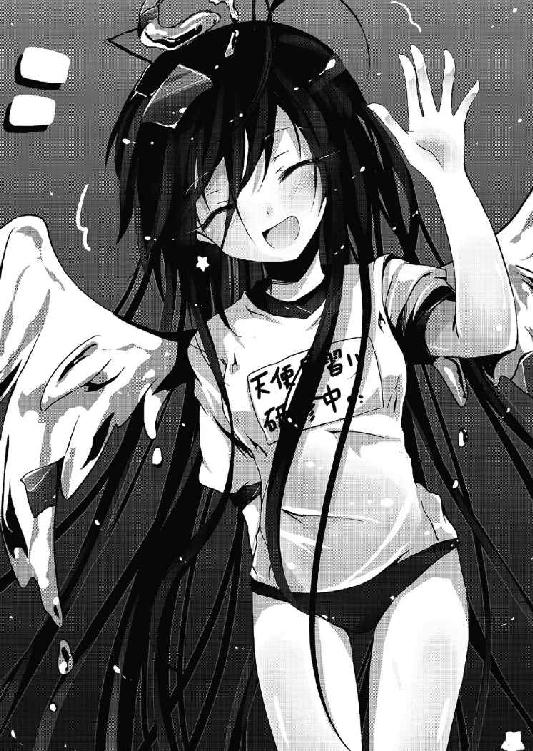
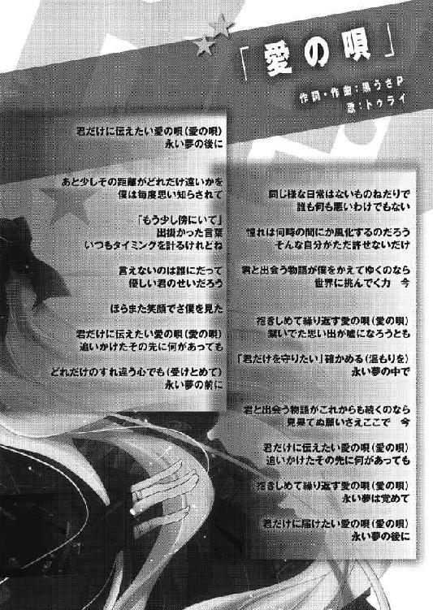

| Re:バカは世界を救えるか？1 (富士見ファンタジア文庫) | |
| 柳実 冬貴 & 一葉 モカ | |
| 富士見書房 (2011) | |

本作品の全部または一部を無断で複製、転載、配信、送信したり、ホームページ上に転載することを禁止します。また、本作品の内容を無断で改変、改ざん等を行うことも禁止します。
本作品購入時にご承諾いただいた規約により、有償・無償にかかわらず本作品を第三者に譲渡することはできません。
本作品を示すサムネイルなどのイメージ画像は、再ダウンロード時に予告なく変更される場合があります。
本作品は縦書きでレイアウトされています。
また、ご覧になるリーディングシステムにより、表示の差が認められることがあります。
口絵・本文イラスト 一 葉モカ
ＣＯＮＴＥＮＴＳ
プロローグ
「新世界の神に、俺はなる！」
三限目の酷く退屈な授業中、女子の一人がそんなことを言った。
教師は非常に耳が遠いため、彼女の奇天烈な台詞には気づかない。他の生徒もそれぞれの行動に没頭しているので、彼女のおかしな台詞に気づく者はいなかった。
いきなり神宣言をした女子に対して、隣の席に座っている大人しい雰囲気の少女が、唯一ドン引きしていた。
「............うわ」
「──ってね、この前突然叫んでたんだよぅ、あいつが......」
「え？ あ......び、びっくりした。あまりの迫力にあんたが血迷ったのかと思った」
「私が言うわけないじゃないッ。あいつよあいつ、佐藤光一」
いきなり何だと言いたげに、大人しめの少女は勝ち気そうな女生徒が指した方向を見る。
視線の先にいたのは、窓際の席に座る男子生徒だった。
少女は、「ああ......」と頷いてから苦笑。
窓際の男子生徒は、周囲の生徒達と比べると明らかに浮いていた。
まずはその奇抜な外見だろう。ある程度身だしなみを強要される校内においては、明らかに目立つ銀色の長髪。どこで仕立ててもらったのか、校則違反の長ランを着込み、どういうわけか右手だけに革製の黒い手袋をはめている。顔はどうしようもなく日本人にしか見えないのだが、瞳の色が左右で違っていた。右目が青、左目が赤。生まれつきのオッドアイにしては明らかに不自然な色合いである。
一見、素行不良少年に見えなくもないのだが、そういうのとはまた違った、禍々しくも痛々しいオーラがあふれ出ていた。
顔の造りは良い方だ。輪郭も体格も瘦せ型で、歳相応......もしくは世界観相応の格好をしていれば、さぞや女生徒の人気者になったことだろう。
しかし、当たり前のことだが、こんな「異世界からお邪魔しています」と言わんばかりのファッションセンスでは、年頃の少女達から異なものを見る目で見られても仕方がないというものである。
「あいつの自己紹介覚えてる？ ほら、一年の時に転校してきたじゃん」
「あー、覚えてる覚えてる。あれでしょ......なんだっけ、黒板に名前書いたんだよね」
「そう！ 佐藤光一って！ ご丁寧にルビ振って！」
「ライト（笑）」
「どこをどう読んでもコウイチだっつーの！ ちゃんと佐藤も『さとう』ってルビ振れっつーの！」
「デ○ノート、めっちゃ好きなんだよ、きっと」
「いやーあれは漫画だから許される名前だろー。痛い名前をつける親が最近増えてるけど、生徒名簿見たらちゃんと『さとう こういち』だったし」
二人して佐藤光一に苦笑い。
佐藤光一は彼女らのひそひそ話を他所に、ひたすら窓から青空を見つめている。
その風貌も芝居がかっていて、どことなく癪に障るというか、自分に酔っている臭いがプンプンした。
「ほら......なんていうんだっけ、ああいう子のこと。なんか変な病名みたいな......」
「なんだっけー。ツンデレ......は全然違うし」
「なんだっけ。なんとか病、なんとか症候群......だめだ、思い出せない」
少女が頭を抱えたところで、さすがの英語教師も話し声が耳に入ったのか、二人の前までやってきて、教科書で頭を叩いた。
しばしの説教の後、教師は教室内を一望する。
女生徒二人も大人しくなり、居眠りをこいていた奴も慌てて起きて教科書を開き始める。すでに教室全体は、模範的な授業風景を取り戻していた。
ただ一人、佐藤光一を除いて。
「............」
光一は教科書も開かず、背筋をピッと伸ばして腕を組み、青空を凝視していた。
教師からしてみれば空を睨みつけようが勝手にしろという感じだったのだが、いかんせん授業中であるため、注意せざるを得ない。できることならこういう生徒には触りたくないのだろう、あからさまに嫌そうな顔をしていた。
初老の教師はもう一度嘆息して、
「おい、佐藤。ここの例文を読んでみろ」
仕方なく光一の名前を呼んだ。
反応が無い。光一は空を睨みつけたまま、微動だにしなかった。
「佐藤、聞こえているんだろう。二三ページの例文を訳しなさい」
教師がもう一度呼ぶと、光一は深く息を吐いて目を瞑り、机の端で寂しそうにしていた教科書を手に取った。
光一が動いたせいか、辺りが静まり返る。
光一は音も無く立ち上がり、革手袋を装備した右手に教科書を載せ、指定された通りに二三ページを開く。
教師も光一のいちいち芝居がかった行動に唾を飲み込み、周りの生徒も興味本位からか、横目でチラチラと見ている。
皆が見守る中、光一はゆっくりと口を開いた。
「六条辺りのお忍び通いのころ、内裏からご退出なさる休息所に、大弍の乳母が重い病気になって尼になっていたのをお見舞いしようとして、五条にある家を訪ねて──」
光一は指定されたページの訳を、すらすらとつかえなく読んでいく。
代表的な古典文学、『源氏物語』の夕顔である。代表的といっても、古典は古典。現代の高校生で内容を熟知している人間は、恐らく極わずかしかいないだろう。
まして、授業を聞いていなければ、こうもスムーズに読み上げることなどできない。光一は数秒前に教科書を開いただけだというのに、まるで最初から知っていたが如く朗読した。
涼しい顔をして『源氏物語』を読み上げる光一に、誰もが圧倒されていた。
一度もつかえることなく全てを読み終えてしまった光一は、教科書を閉じて椅子に腰を下ろした。
「くだらない......」
静かに首を横に振って、小さく一言だけ零す。
その一言に、佐藤光一という少年の思想が詰まっていた。
学校などくだらない。こんな退屈な授業が、将来に何の役に立つ。ただ教科書に書いてある文章を読み上げるような、そんな教育に何の意味がある。教えるべきことなど、他にいくらでもあるはずだろう？ 大人が子供に強要する教育に、意味のあるものなどない。
......とでも、言いたげな感じである。
ちなみに、高校は義務教育ではない。だから別に誰も強要はしていない。
「佐藤......お前」
教師も驚いた顔をして教壇で立ち尽くしている。怒りにも似た感情がむき出しだ。当然だろう。たかが一七歳の少年に教育をくだらないなどと言われれば、怒りたくもなる。
光一は憮然とした態度で、教師を小馬鹿にしたように小さく笑った。
が、
「────今やっているのは、英語の授業だ」
ツッコミが入ったのは、光一の態度にではなかった。
「............」
一瞬、光一の顔に戦慄が走ったが、すぐに無表情を取り戻し、平静を装った。
教室内は依然として静まり返っている。
光一は静寂の中、晴天を睨みつけながら、
「空が......蒼いな」
当たり前でどうでもいいことを言って、誤魔化した。
授業終了のチャイムが鳴り、学校全体にざわめきが戻ってくるも、彼のいる教室だけはしばらく沈黙を保っていた。
失敗してもなおクールを装おうとする光一を見て、内緒話をしていた少女二人組は、ようやく出てこなかった言葉を思い出す。
二人して顔を見合わせ、小声で囁いた。
「「中二病だ......」」
そう──彼、佐藤光一は、高校二年生にして重度の中二病だった。
Battle １ 中二病で何が悪い
放課後。
「......ねぇ、光一」
三限目と全く同じ格好の光一に、前の席に座る女生徒がくるりと椅子を反転させて、声をかけてきた。
彼女は読んでいた本を閉じて鞄に仕舞ってから、光一の机に両肘をついて、顔を覗き込んでくる。銀縁の眼鏡にショートの髪。高校生にしては大人びて見える顔立ちと仕草。
そして何より、スカートから覗く眩しいくらいの白い脚。
彼女は校内でも随一の美脚として有名だったりする。
そんな美脚の持ち主が声をかけてきたにもかかわらず、光一は見向きもしなかった。
もちろん彼が女性に興味が無いわけでも、女性に慣れているわけでもない。
ただ単に知った仲だというだけのことである。
この光一には凡そ知り合いであったとしても不釣合いな女生徒の名前は、浅野広美。光一のクラスメイトで、唯一光一に話しかけてきてくれる女の子だった。
眼鏡の奥の眠たげな瞳を光一に向けて、広美は少し首をかしげながら問う。
「......今度は何のアニメの影響？」
「............」
「漫画？ それともライトノベル？」
「............」
「やっぱりいつもの思いつき？」
光一は答えない。
ただ、少しバツの悪そうな顔をしている。
意地っ張りな光一を見て、広美は気だるそうに笑った。
「私は一応君の幼馴染だからこうして、構ってあげてるけどさ。全然知らない他人だったら、周りの連中と同じように光一のこと避けてるよ。いい加減やめたら？ そういうの......もう小学生とかじゃないんだからさ」
「......お前には関係ない」
広美のさりげなくキツい気遣いに、冷たく返す。無論、声はしっかりと作って、クールを装っている。
光一のぶっきらぼう（を装った）な態度に、さすがの広美もムッときたのか、
「作った声、キモいよ」
これまたキツい一言。
「なッ──キモくない！ 全然キモくないぞ！ ななななにを根拠に！」
光一は過剰なほどに反応した。ちょっとズレた理想の自分を追い求める、自称夢追い人な光一にとって、「キモい」という言葉は禁句中の禁句だった。
今まで被っていたバレバレの化けの皮が剝がれて、本来の普通の少年が露呈する。
「根拠も何も無いでしょう。キモいものはキモいのよ。見た目、言動、行動、その全て。光一にキモくない要素は一つもない。だいたい幼稚園と小学校の頃から微塵も変わってないってどうなの？ アンチヒーローとか闇の力とかに憧れていいのはせいぜい中学生二年生までだよ？ いい加減現実見なさいよ。君が憧れているようなジュブナイルな世界観はこの世界には存在しないんだよ、ＯＫ？」
「うぐっ......そんなことはないッ！ 努力していればいつか必ず──」
「必ずなに」
「!? と、突然、異能に目覚めたり......悪魔と、契約したり......空から美少女が降ってきたり......神ですら、殺せてみせたり」
光一は口を尖らせながら、両手の指先をつんつんさせて、ちょっと恥ずかしそうにもごもごと話す。
彼がどうしてこんな奇抜な格好をし、芝居染みた台詞を吐いたりしているのか。
理由は単純かつ明快だが、実にアホくさい。
彼はいわゆる、フィクション的な、ジュブナイル的な、ティーンエイジャー的なファンタジー世界の主人公に憧れているのだ。
ゲームや漫画、ライトノベルにアニメ。それらに登場する主人公は魔法や超能力などを使って強敵や巨大な組織と戦い、可愛らしいヒロインと現実味の欠片も無い甘酸っぱい恋愛を繰り広げながら、青春を謳歌している。
光一も、そんな類の青春を謳歌したいらしい。子供の頃に二次元的なものに憧れるのは極めて正常であり、微笑ましくもあるのだが、一七歳という思春期も終盤に差し掛かった頃まで続いているとなると、なんとも痛々しい。妄想するだけならばいいが、妄想を外に出してしまっているのだから痛々しいことこの上ない。
ダークヒーローをリスペクトしてなりきろうとしている光一は、こうして髪をわざわざ脱色し、夏場でも汗だくになりながら長ランを羽織り、オッドアイをカラーコンタクトによってでっち上げ、特に意味も無く革製の手袋を片手にだけ装着しているのだ。
黙って光一の話を聞いていた広美は、呆れ果てて目を棒にしていた。
「だからキモいってば」
「キモくねぇ！ ふん......大衆はそうやって陰であれこれ言っていればいいんだ......いつか俺は必ず暗黒面に堕ちてみせる」
堕ちてどうするのだろうか。そしてある意味もう存在が暗黒面だった。悪い意味で。
「大体そういうのって努力でどうこうなるものじゃないと思うんだよ。しかも光一がやっているのは努力なんかじゃない。ただなりきって自分に酔っているだけ。言っとくけど、すっごく独りよがりだよ？ 空回りだよ？ カッコいいと思ってくれる人なんて、一人もいないよ？」
「べべ、別に俺は人に良く思われようなどと」
「妄想は頭の中だけにしときなよ。外に出したら見苦しいだけだってば。アニメの影響で三日坊主の意味のなーい努力をするくらいなら、普通の学生生活を謳歌すればいいのよ」
そこから五分近く広美の容赦ない説教をくらわされて、ついに光一は撃沈する。椅子の上で体操座りをして、縮こまってしまった。
広美は、へこんでしまった光一を見て、愉悦感に体をゾクゾクと震わせた。
夢見がちな痛い光一に、現実という刃を突きつけて愉悦に浸る広美。クラスではよく見る光景だ。
ドＳな広美に散々いびられていると、ドアを開けて二人の男子生徒が入ってきた。
「ちーっす、帰ろうぜ～、ってあれ？ どうした光一、部屋の隅に溜まった埃みたいな格好して。また広美にいじめられたのか？」
二人組の一人、金髪ピアスのやたらとチャラい生徒。
東野一樹が、そばにやってくるなり光一の銀髪をガシガシと撫でた。彼は光一の悪友の一人で、見た目もチャラいが中身もチャラい。見たまんまの男だ。
「おめーは、ほんと昔から変わらねぇよなぁ。どうせ今日も奇行に走って、教室中を凍りつかせていたんだろ？ 今度は何の影響だ？ お兄さんに言ってみなさい」
「ッ！ 貴様にわかるものかっ！ 離せッ、髪が崩れる！」
「お、友達のことを貴様呼ばわりするのがお前の最近の流行なのか？ なあチダイ、今回の奇行は何のアニメの影響か知ってるか？」
一樹は横に立っている肌の浅黒い大柄な少年に声をかけた。
背の高さや視線の鋭さから、まるで侍のような風貌をした彼の名前は渡部知大。知るに大きいと書いてトモヒロと読むのだが、親しい連中にはそのまま音読みをしてチダイと呼ばれている。
「......今朝電話で、空からノートが降ってくる夢を見た、と言っていたな」
チダイは、低く重い声でそう答えた。
広美はじとっとした目で、光一を見た。
「やっぱりアニメの影響じゃない......」
「違う。夢だ。天の啓示だ。ガイアが俺に囁いたんだ」
「それで空からノートが降ってこないか見張っていたというわけね......ほんと、キモすぎるよ光一」
「キモいゆーな！」
やいのやいのと言い合う二人と、それを見て爆笑する一樹、そして無言で見守るチダイ。
この四人は、いわゆる幼馴染という関係だった。
光一とは幼稚園と小学校が同じで、昔から極上のアホだった光一を中心に、いつも近所を駆けずり回っていた。
光一は小学校の時に転校し、去年この雨鶴来市に戻ってきた。そのため、四人の幼馴染関係には若干のブランクがあるのだが、戻ってきた光一があまりにも昔と変わらなかったため、お互いに遠慮する必要がなかった。
四人は同じ寮に下宿しており、ブランクはあれど兄弟のように仲が良い。
「ハッハッハ！ いやーでもしかしわかるぜ？ 光一がそういうのに憧れるっつー気持ちは、今でもわかる」
一樹は後ろの席に勝手に腰を下ろして、バンバンと光一の肩を叩いた。
「うむ......男ならば誰しも一度は経験がある」
「なんつーんだろうなぁ、ようは、世の中が毎日同じことの繰り返しで面白くねぇってことだろ？ もっと刺激が欲しいとか、違うか？ あったあった、俺もでかくなったら仮面ライダー何某になって、敵に操られてしまった親友と戦う運命にあると本気で思っていたからな」
一樹の、意外と的を射た言葉に、光一の顔が一瞬きらめく。
「うむ......退屈な日常に非現実性を求める。思春期にはよくあることだ。小説や映画のアウトローな主人公に憧れるのは別段おかしなことではない。俺も昔は椿三十郎や座頭市に影響されて、自分が悪党を斬っていく妄想をしたものだ。あ、リメイク版じゃない方な」
いちいち趣味が渋いが、チダイも一樹に賛同し、うんうんと頷く。
「貴様達にもわかるのかッ！ 俺のこの熱い想いが！」
ここぞとばかりに身を乗り出して、光一は目を輝かせた。
一樹とチダイはゆっくりと一度頷いてみせてから、妙に凜々しい顔をしてこう答える。
「「今はまったくそういう気にならんがな」」
二人は親指をグッと立てた。
「大人になるって、そういうことなんだよ光一」
感慨深そうに広美が言う。
遠い目をする三人に、光一は絶望する。覇気を無くして腕を組みながら、窓の外の空を見上げて、たそがれる。
「所詮貴様らも庶民か......」
庶民かどうかの問題ではない。
「ていうか非現実って何。宇宙人とかＵＦＯとかそういうのを君は求めているわけ？」
男共の戯言を黙って聞いていた広美が、胡散臭そうな顔をしていた。
光一は、「こいつは何もわかっておらん」と、ぼそぼそと呟いた。
一方一樹は広美の言葉にしばし考えてから、人差し指を立てた。
「まあちょっとズレちゃいるが、光一が求めているのはそういうもんに近いかもな」
「そんなものを待ってるの？ 向こうからやってくるわけないよ。馬鹿らしいよ」
「うむ。かといってこっちから向かって行けもしないな」
「......貴様らが何と言おうが、俺は諦めんぞ」
光一は言いたい放題な三人へクールに言い返すが、頰の肉がヒクヒクしていた。
「実際にあった非現実的な出来事といえば、あれだろうな。ほら、七年前にこの街で起こった......なんつったっけ......大勢昏睡状態に陥ったっていう」
一樹の発言に一同首を傾げたが、揃って思い出したのか、「ああ」と頷いた。
「確か、通称『木漏れ日現象』と呼ばれていたな。誰がつけたか知らんが、人々が昏睡状態になる直前に、空の雲の合間から光が降り注いだ、と」
「そういえばあったわね。当時は大騒ぎになっていたけど、今まで忘れていたわ。......確か、新型のインフルエンザが原因じゃなかった？ いまだに昏睡から目覚めていない人がいるって噂だけど、あれはデマだと聞いたわ」
「あの頃は何かと物騒だったよなぁ。事件当時は雨鶴来が一ヶ月間閉鎖されたし。あと国籍不明の艦隊が日本近海にやってきたこともあったろ？」
「ミサイルが飛んできたという噂もあった。不思議なのは両方の事件共に大規模かつ大衆ウケが良さそうなものなのに、詳しい詳細が報道されなかった点だな。光一などはすぐに食いつきそうなものだが」
三人の視線が光一に集まる。ところが光一は外を向いたまま、鼻で笑って見せた。
意外そうな顔をする三人の横で、光一は内心ほくそ笑んでいた。
彼は既に『木漏れ日現象』と呼ばれる謎の事件についての全容を、ほぼ把握していたのだ。
『木漏れ日現象』とは、この雨鶴来市で起こった不可解な事件だった。
七年前の何気ない平日。雨鶴来市上空から突如として謎の光が差し込んだ。
そして、その光を浴びた人々が突然道端に倒れて意識を失ってしまったのである。
街は一時的な大混乱が起こり、国が緊急措置として雨鶴来市をひと月もの間閉鎖するという騒ぎに発展した。
この事件については様々な憶測が飛び交ったが、国が発表した『木漏れ日現象』の原因は、新種のインフルエンザが突発的に増殖して雨鶴来市内で蔓延した、というものだった。
このインフルエンザは脆弱で、わずかな気温の変化で死滅してしまったため、ひと月で騒ぎは収まったのだが、いかんせん不可解なことに変わりは無い。現在でも一種の都市伝説として、人々から『木漏れ日現象』と呼ばれて、ときたま話題に上ったりする。
こんな興味をそそられる事件に、佐藤光一が食いつかないはずはなかった。
『木漏れ日現象』が起こる直前に雨鶴来市を離れていた光一は、中学校に上がったころに徹底的に事件について......主にインターネットで調べまくった。
その結果、彼はついに答えを導き出したのだ。
「貴様ら愚民の見解はどうせその程度の稚拙なものでしかない。だが、俺は違う。俺はもうとっくの昔に、あの事件についての真相を摑んでいる」
その答え、彼が捻り出した『木漏れ日現象』の真実とは。
「あれは──天使が人間に与えた試練だ！」
遥か斜め上をゆく答えであった。
「でさー、もっと身近な非現実な存在ってのはあると思うわけよー」
「高慢な神気取りの人間が未来永劫存続していくことが正しいのか、許されるのか......。神はそれを見定めるためにゴッドライトを地上に降らせたのだ......！」
「身近な非現実？ なにそれ、幽霊騒ぎとか？」
「その光を浴びた者はほとんどが眠りにつくが、選ばれた者だけは逆にある能力を覚醒させる......！ 今この時も、能力者達は人類の存続をかけて天使達......と」
「ふむ。七不思議などは、確かにこの学校にも存在しているな。最近だと学校裏にある樹齢一〇〇年を誇る桜の木に、夜な夜な五寸釘を刺す女性が現れるとか現れないとか」
「......戦い、続けて......」
「それ国語の山中ちゃんじゃね？ 先月ホームセンターでトンカチ買ってるとこ見たぜ。あれだろどうせ、去年結婚して辞めた新見せんせーへの呪いでしょ。山中ちゃん......今年で三十代も半ばだっつってたし」
「......いる......のだ」
「山中先生、しゃべらなければ出来る女っぽくて綺麗よね。しゃべらなければだけど。非現実な存在って山中先生のこと？」
「............」
いつのまにか話題がすり替わっていたらしい。
完全に無視を決め込まれ、光一は教室の隅まで後退して膝を抱えるのであった。
「それよりも、もっと身近にいるんだよ、非現実的な奴が！ それも広美と光一のクラスに！」
三人は光一に見向きもせず、会話に花を咲かせていく。
「誰だ？ 光一というオチは無しだぞ。光一は頭の中だけ非現実だからな」
「......あー、私わかった。あの子でしょ、間宮薫。通称ロリ宮」
広美の答えに、一樹は「ビンゴ！」と声を上げた。
「そう！ ロリ宮薫！ あれはどう考えてもおかしいと思うんだ、俺は」
力説する一樹に、広美は同意してみせた。
「確かに高校生じゃないよね。どう見てもせいぜい小学校高学年」
「うむ？ あの妙に小さな子か？ 俺はてっきり、飛び級か何かだと思っていたのだが、違うのか？」
「だろ？ あの子はマジで非現実的な存在だと俺ぁ思うわけよ。光一はそこんとこどう思ってんだ？」
話題を振られた光一はちょこんと顔を上げたが、すぐにいじけモードに逆戻りした。
話題に出てきた間宮薫とは、光一と同じクラスの女生徒の名前である。
高校二年生と呼ぶにはあまりに幼い外見をしており、広美の言う通り、せいぜい小学校高学年程度にしか見えない。まるでアニメやライトノベルに出てくるロリっ子キャラクターそのものであるため、周りから「ロリ宮」と呼ばれてしまっている。
高校入学当初からクラスメイトにキャーキャー騒がれていたのだが、間宮薫はいつも泣きそうな顔で赤面しながら下を向くのが常だった。何を言っても言葉を返さず、笑ってみてくれと頼んでも、眉をしかめる。無口、無愛想、不機嫌。この三拍子が徹底しているため、クラスメイト達は次第に声をかけなくなっていった。
隅っこでいじけている光一も、間宮薫については同じクラスなので当然知っていた。
一度彼女に接触を試みたことがあるのだが......見事なまでにつっぱねられて以来、触らぬ神に祟りなしといった結論に至った。
よって、光一も間宮薫についてはよく知らない。
「わからんでもないがな。一樹、人の身体的特徴を話のネタにするのはあまり好ましくない。相手は女性なのだ。非現実などと言うのは失礼極まるぞ」
「そりゃ俺もわかってるけどよぉ。やっぱ、気になるじゃねぇか、あそこまで幼いと」
「あの子、スポーツも勉強もダメダメよ。外見も幼ければ中身も幼いよね。いつも泣きそうな顔してやせ我慢しちゃって。わりとマジで小学生なんじゃないの」
「だよなー！ どう考えても高校生ってのはありえねーと思うわけよ！」
「一樹、やめないか。お前はもう少しデリカシーというものをだな」
チダイが、盛り上がり始めた一樹を制しようとする。
その時、誰かが思い切り机を叩いた。
同時に、椅子の倒れるけたたましい音が響く。
光一を除く三人が、驚いて音の方へ振り向くと、そこには、
「......っ！」
怒りと羞恥心に身体を震わせる、間宮薫の姿があった。
艶のあるしなやかな黒髪に、絹のようになめらかそうな、赤ん坊のような肌。
結構な器量......の持ち主なのだが、恐らく彼女を見た人は口を揃えて「大きくなったらさぞや美人になるはず」と言うに違いなかった。
着ている服装は高校の制服なのだが、どう見ても小学生が背伸びをしてだぼだぼの制服を着ているようにしか見えない。黒髪も美しいのだが、身長と顔立ちの幼さから、大人っぽさなど欠片もなかった。
教室に残って宿題を片付けていたらしく、三人の会話を聞いてしまっていたのだろう。
薫は真っ赤な顔で、瞳に涙を溜めてうつむいていた。
そして、下唇を嚙んで三人を睨みつけると、鞄を摑み上げて一目散に教室を出て行ってしまう。
一樹はアチャーという顔を手で覆い、チダイはやれやれと溜息をつき、広美は動じた風もなく薫の出て行ったドアに、冷たいまなざしを注いだ。
ところが光一は、輝きを取り戻した表情で教室の隅に座っていた。
教室にざわめきが戻ってきた頃、光一は「よし」と呟いてから勢い良く立ち上がった。
何かよからぬことを思いついたに違いない。
「お？ どうした光一、ロリ宮に興味でも湧いたのか？」
一樹がまたもデリカシーの無いことを言って、光一に問う。
光一は長い銀髪を払ってから、革製の手袋をギュッと締めた。
「彼女を守るのが──俺の役目だ」
キリッと凜々しくそんなことを宣言する。
いつからそういうことになったのか。もちろん今そういうことになったのだ。光一の中には突発的にジュブナイルストーリーがもんもんと展開され始めたに違いない。
「......またいつもの思いつきね。いったい何から守るの。正直あの子にとって一番危険なのって、きっと光一の存在だよ。ストーキングは犯罪だよ、光一」
「あー別に止めねぇけどよ。外見が外見だから気をつけろよ、手が後ろに回らねぇように」
「うむ。止めはしないが犯罪にだけは走らんでくれと言っておく。幼馴染として」
酷い言われ様だが全くもってその通りだった。
光一にとっては、今から間宮薫を強大な組織とか闇の手先から護衛しに行くつもりなのだが、他人から見ればなんちゃって騎士のドン・キホーテよろしく、ただのおかしな変人でしかない。
思い込み、ロールプレイがここまで酷いと、広美ではなくとも気持ちが悪いという感想しか浮かばない。残り組で聞き耳を立てていた他の生徒達も、「警察に連絡したほうがいい？」「幼女誘拐」「ダメ、絶対」などとひそひそと話している。
光一は我関せず、颯爽と教室を出ると間宮薫の跡をつけていった。
Battle ２ 異能バトルは突然に
雨鶴来市立雨鶴来高等学校。名前が地名という、何の捻りもない高校である。
特徴を挙げるとすれば、校舎が崖の上に建っている、というくらいのものだ。
平均・平凡・普通の学校、それが雨鶴来高校だった。
現在の時刻は午後五時。夏が過ぎたおかげか、日もだいぶ短くなってきて、空はオレンジ色に染まっている。
下校する生徒達の中に混じって、間宮薫は足早に坂を下っていた。さらにその後ろを、佐藤光一が木陰に身を隠しながら跡をつけている。普通に下校生徒の中に埋没すればいいものを、逆に目立っていた。
光一は木陰に身を潜めつつ、携帯電話を耳に当ててぶつぶつ何かを呟いた。
「こちらライト。目標は昇天坂を南下中。敵の気配はない、追跡を続行する」
もちろん通話はしていない。それっぽさを醸し出すための小芝居だった。
背が小さく、極端に子供っぽい外見というだけで、何故敵に狙われるのか。光一にはそういう細かいことはどうでもいいのである。
非日常へ漕ぎ着けるための努力。少しでも異変を感じたら即行動。やっかい事には自分から頭を突っ込む。あらゆる状況を想定して動く。
光一の思考回路はこうだ。
ただの高校生な主人公（光一）→謎多き美少女（薫）の登場→学校の帰り道→突然敵が現れる→危機的状況→命の危機に瀕して謎の力に覚醒→なんだこの力は！→異能でドーン→「まさか貴様は！」→敵撃退→非日常へＧＯ。
異能系バトル物にありがちな、唐突な展開のオンパレードを、光一は期待しつつ想定していた。いつそういった状況に陥ろうとも対応できるように、脳内でのシミュレーションは欠かせないのである。
薫が坂を下りきり、街の中心部を通って住宅街へ向かう。この先にあるのは寂れていることで有名な松下通り商店街だった。つまり、わりと都会な雨鶴来市にとって人気の少ない場所の一つだ。
学校帰りにこんな場所へ......。
何かある。光一の勘が無駄に囁いていた。
その時、突然薫の携帯が鳴った。光一は慌てて電柱に姿を隠し、息を潜める。
薫は小さな手で鞄から携帯を取り出し、すぐさま耳に当てた。小さい手に似合わない、黒くてゴツい携帯電話だった。
「はい、間宮です。......なんだ兎乃か。どうしたの？ 急いでるんだけど」
どうやら友達からの電話らしい。光一はメモを取り出し、会話を記録する。これも特に意味はない。ただ犯罪一歩手前なだけである。
汚い文字で会話をメモしていると、突然薫が声を荒らげた。
「なんですって？ 逃げ出した!? 何やってたのよあんた！ じゃあ、あの子は今......」
いつも無口で無愛想な彼女からは、想像もできない慌てぶり。
光一は「これは！」と声を上げそうになる。
なんだ？ 逃げ出した？ 何が？ あの子？ 人なのか？ そうだ！ 敵の組織から捕らえた捕虜という事も！ それが逃げ出したから一大事！ これだこれに違いない！
うずうず。うずうず。
光一の目が、人生で一番輝いていた。
「......わかったわ。あたしがなんとかする。......言い訳はいいの！ あんたは班長に連絡して！ いいわね!?」
ますます鬼気迫る声。
光一はボキリと鉛筆を折って、気づかれないように小声で叫ぶ。
「テ、テンション上がってきたー！」
確実に何かある。光一はいつ非日常が始まってもいいように、次に出る行動を脳内で何回も妄想する。
もんもんもんもんもんもん......。
......妄想は今丁度、力に覚醒して「うおお」と叫んでいるところだった。
「......あ」
とかやっている内に、気がつけば薫の姿が遠くに行っていた。
光一は慌てて追いかける。小さいわりに足が速い。薫は角をいくつも曲がって疾走していく。光一も必死で追いかけるが、彼の体力は並以下だったりする。
ついに限界に達し、光一は膝に手をついた。
「く、くそっ......見失った」
しくじった。千載一遇のチャンスを逃した......もしかしたら、あんなチャンスはもう巡ってこないかもしれないのに。
本気で悔しそうにパチンと指を鳴らす。
「......まあいい。焦ることはない。俺はクールな男。クールな男は焦らない」
髪をかき上げて自分に言い聞かせる。無駄なポジティブシンキング。光一の悪い癖だ。
光一は道を変えて薫の捜索をしようと動き出す。
だが、ポケットに手を突っ込みつつカッコつけながら道の角を曲がった瞬間、
「──ゲフゥッ！」
誰かから猛烈なタックルをくらって、勢いのあまり、頭からゴミステーションに突っ込んだ。みぞおちに肘でも入ったのか、息が出来ずにしばし悶絶。
なんとか痛みが遠のくと、光一は生ゴミを頭に被りつつ起き上がった。
「貴様！ この俺にタックルを食らわせるとは......！ 街角でぶつかっていいのは遅刻寸前の美少女と相場が決まって──」
そこまで言って、思考が停止する。
生ゴミの放つ異臭も、腐った卵に汚された衣服も、頭に被ったキャベツの切れ端も全て忘れて、光一は絶句していた。
目の前に広がる光景、それが信じられなかったのだ。
──本当に美少女が、光一の前に立っていた。
曲がり角から突っ込んできたのは、現実離れした外見の美少女だった。
金色の、地面につきそうなほど長い髪は風に靡いて煌きを放っている。透き通る海のような碧い瞳は、光一の心を捉えて放さない。
黒いワンピースを着た彼女に、光一は、一目で心を奪われた。
少女と光一は、まるでお互いがお互いを必要としているかのように、熱い視線をぶつけ合わせる。光一は完全に思考停止。せっかく今まで鍛えてきた非現実への想定が、あまりにいきなりだったことで上手く働かなかった。
光一はただただ呆け顔で、少女を視界に捉え続けた。
何か言わなければ、と思う。
ここで気の利いた一言が言えなくては、佐藤光一の名が廃る。いつも練習してきたみたいに、非現実への一歩を踏み出すんだ！
光一は心を決めて、クールな顔をしながらいつも通りの台詞を吐こうとした。
「ふッ、やはり現れたか。俺は君がここに来ることを──」
初めから知っていた。
そう告げようとした瞬間──
「お前──ボクを助けろ」
先に切り込んできたのは、少女の方だった。
か細い声だった。まるで捨てられた子猫の鳴き声のような、弱々しい声音。
少女は理由も述べずに、ただ、助けろと光一に命令した。
その言葉は、槍となって光一の頭を貫いていた。
頭の中で、少女の声が残響となって響く。
助けろ──助けろ。
まるで、全身に染み渡るように。
乾いた砂が水を吸うかのように。
光一の身体に、少女の声が行き渡る。
光一の中の全ての鎖をねじり切って、その一言は胸にまで届いた。
常識も。理性も。道徳も。現実も。恥も。
その全てを捨てることを許された光一は、地が割れるような大声でこう叫んだ。
「──任せろ！」
いつものようにカッコつけるわけでもなく。見栄を張るでもなく、声を作るでもなく。
光一は、ただ己の中からあふれ出た感情を解き放った。
あまりの大声に、少女の身体がビクッと震える。
光一はすぐさまゴミ溜めから飛び出して、長ランを翻しながら、少女を守るようにその場に立った。
「待っていた......ずっと待っていた......この時を！ 俺はずっとこの瞬間を待っていたんだぁぁぁッ！」
革手袋に包まれた右手拳を、ぐっと握り締める。
あまりに唐突すぎる展開。急ぎ足すぎるストーリーの流れ。説明不足なこの状況。
けれど光一には関係ない。説明も辻褄も無用。
必要なのは、自分を必要としている非日常だけ。
光一はこれを待っていた。いつ来てもいいように、ずっと身構えていた。
それが今──自分の眼前に現れたのだ。
両手を大きく広げ、光一は長ランの裾をはためかせる。眼孔はギラギラと光を放ち、身体中が武者震いに震えていた。まるで大舞台に立った役者のようだ。
背後で光一に庇われている少女は、驚いた顔のまま固まっている。自分で光一に助けろと命令しておきながら、いざ従わられて驚いていた。きっとこうも即答でＯＫされるとは思っていなかったのだろう。
当然だ。彼女が知るはずがない。光一が現実に飽き飽きしていて、アニメやライトノベルが大好きで、ダークヒーローに憧れる重度の中二病だなんてこと、彼女が知るはずが無いのだ。
「さあ──始めようじゃないか！ どこからでもかかってきやがれ俺の敵！ 俺のアドベンチャー！ 俺の非現実！」
ワキワキワキワキワキッ！
よほど嬉しいのだろう。光一の指が別の生き物のように高速で蠢いた。
ニヤケ顔を抑えきれぬまま、次に来る展開を待つ。
（もうなんでもこい。ふひひなんでもきやがれちくしょう。悪魔か？ 天使か？ 超能力者か？ 魔術師か？ 吸血鬼か？ まさか死神とか？ 魔乖術士って可能性もあるのか？ もしかしてアルターとか？ もっと輝く？ 輝いちゃう？ ひょっとして新手のスタンド使い!? 俺はここで奇抜なポーズを決めたほうがいいのか!?）
ニヤニヤが、ニヤニヤが止まらない。
しかし。
光一のニヤケ顔が絶句に変わったのは、そのすぐ後だった。
「あぇ？」
気がつくと、光一は蒼い炎の中にいた。
周りの木々は焼け落ち、付近の家にも火の手が延びている。
何気ない普通の道が、一瞬にして蒼い炎の地獄に様変わり。
非現実に備えていたはずの光一の脳の処理がおっつかない。
ここは、地獄か？ 地獄にしか見えない。だって炎蒼いし、普通炎って赤いしね。つまり俺は死んだのか？ それとも夢だったり？ 夢かぁそうか夢か。残念、夢だったのか。
いや、ていうか熱い。熱くね？ 熱いよね？
「うん、あつ......あつッ!? 熱い熱い熱い！」
いつのまにか長ランに引火していた炎を必死に振り払う光一。
夢じゃなかった。死んでもいなかった。
光一は炎を払って、後ろの少女に火がいかないように、彼女の肩を自分の方へ引き寄せる。
同時に炎の道の先に目をやると、そこに陽炎に揺れる人影があった。
群青色のコートを着た、背の高い青年。逆立った髪に、細く鋭い目が妙な威圧感を内包している。
炎は彼の周りだけ存在しておらず、青年の目はただじっと少女の方を見たまま動いていなかった。
光一はピンときた。たぶん、あいつが少女を追っている俺の敵だ。
そして、あいつは、
「──ああ炎遣いね！ なるほど把握した！ あるある炎遣い！」
ピンチでもテンションを下げずに、光一は男を指差した。
後ろに隠れていた少女はいい加減不安に思ったのか、長ランをくいくいと引っ張った。
「おい、お前」
「あー炎遣いかー、なんだよ王道なのに忘れてた。やっぱ初戦で炎遣いってのは定石だよなー。『使い』じゃなくて『遣い』なんだよなー」
「おい！」
「蒼いってとこがアクセント効いていていい感じだ......これも『青』じゃなくて『蒼』なんだ、うん」
「おいってば！」
自分の世界に入りきって納得していた光一の髪を、少女は思い切り引っ張った。
「いででででっ！ な、何をする!?」
「お前、アレに勝てるのか？ お前はシェードの一員なのか!?」
少女は光一を問いただす。
不明瞭な単語が出てきたが、少女にとってめいっぱい不安を表現した言葉だったのだろう。単純に「お前で大丈夫なの？ 私のこと守れるの？」という意味だった。
光一には、少女の不安は伝わらない。光一に通じた言葉は一つだけ。「お前はシェードの一員なのか？」の部分だけ。
シェードの一員。一員、シェード、シェード......。
「ッ......！」
ズキューンという、光一の胸を打つ音が聞こえた。光一は、組織名的な単語に弱いのだ。シェードという意味ありげな名前も、光一にとっては甘美な響き。
よもやこんなフィクションみたいな名称の組織が現実世界に存在していようとは......！
光一は感動の余韻をしばし味わってから、緩んでいた顔を引きしめて少女の問いにこう答えた。
「──ああもちろん。俺はシェードの一員だ」
キリッ。
大噓だった。
「そ、そうなのか......なら、安心か？」
信じてしまった。
「ああ、君は俺が守る」
大見得切っちゃった。
もう後戻りはできない状況になってしまった。元より光一に後戻りなどするつもりはないのだが、彼は完全に現状を把握しきれていない。
というより、この状況全部、いったいどうやって処理するつもりなのだろう。少女がいったい何者で、敵が何者で、どうして炎が使えるのかとか、シェードとは何なのかとか、いろんな疑問を無視して突っ走る光一には、対処策はあるのだろうか。
「俺の力──見せてやろう」
そんなもの光一にあるはずがなかった。せいぜいあるのは人並みはずれた妄想力、妄想癖だけだ。確かにこの状況は光一にとって待ちに待った展開には違いない。美少女もいるし完璧だ。
けれど、光一は誰がなんと言おうが一般ピープルなわけで。
力なんて、持って無いわけで。
「バカ、戦わなくていいのだ！ ボクを連れて逃げ切ってくれればそれでいい！ 何を無謀なことを言っているのだ、お前は！」
察したわけでもないのに、少女が止めに入った。制服の裾を摑んで光一を引き下がらせようとする。
「案ずるな。あの程度の相手、俺一人で十分だ」
「どこの人間か知らないが早まるなー！ いいから仲間と合流しろ！」
「さあかかってこい。このシェードの一員である佐藤光一が特別に相手をしてやる」
「......人の話を」
「そっちから来ないなら──こっちからいくぜ！」
「行くなー！」
制止の声は光一に届かなかった。
光一は炎の間を猛スピードで疾走し、革手袋に包まれた右手拳を蒼炎遣いに振り上げる。
彼は信じていた。
自分の革手袋に包まれた右手が、突然異形の右手に変化するなんて展開を信じていた。
（これだけ非現実な出来事が重なったのだ！ もう何が起こっても不思議など無い！）
現実はそこまで甘くはないとはよく言うが、非現実も甘いとは限らない。
相手の青年は、じっと少女を見つめるばかりで、こちらには見向きもしていなかった。
チャンスとばかりに拳を突き出す光一。
振り上げた拳は、青年に届く寸前で炎に包まれた。
「ぅあっちぃぃぃぃぃいい！」
自爆、格好悪い。幸い革手袋が燃えただけでダメージはなかったが、光一は地面を転げまわった。格好悪い。
青年はのた打ち回る光一に、初めて気づいたように視線を向けた。
「......なんだお前。特務の人間か？ 違うならどいてろ。邪魔すっと消し炭にすんぞ」
酷く聞き取り辛い、青年のハスキーな声。
特務？ なんだそれは？
一瞬びびったが、光一はすぐに顔を引きしめて答えた。
「ふッ、いかにも俺は特務でシェードの人間だ──つまり貴様の敵に他ならない！」
よくわからないけどとりあえず肯定する光一。
精一杯カッコつけているが、地面を転げまわりながら言っても全然カッコ良くない。
青年の目が鋭く細まる。
相手から向けられた殺意の波動にも気づかず、光一は立ち上がった。
「ふん、俺がシェードの人間と知って警戒したか。それでいい。なにせ俺はシェードの中で五本の指に入る──」
「──じゃあ死ね」
へ？ と呆ける暇も無かった。
青年が身を引いたかと思えば、みぞおちに衝撃。
足のつま先が、光一の腹に深くめり込んでいた。
「か──ヒゅッ......ゥ......ッッ！」
遥か後方に吹き飛んで転倒する。
息が止まり、胃の中の物が逆流し、光一はたまらず地面に嘔吐した。
「黙って引いてりゃ助かったものを......ご苦労なこった」
青年は憎々しげに光一を見下ろして、ゆっくりと近づいてくる。
「五本指に入るとか言っていたな......どんな能力者かしらねぇが、トップがこんなへたれじゃあ、今のシェードは底が知れるな」
「......まっ、ま......って」
「ああ？ この期に及んでなんだてめぇ？ ざけんなよ......あんだけ啖呵切っといて待てだぁ？ たかが腹に蹴りくらっただけで怖気づいてんじゃねーぞタコ」
見下すように笑っているが、目は決して笑ってはいなかった。
殺意は本物だ。瞳の奥に光る黒く淀んだ憎悪。迷いなど無いと訴えてくるような、重い重い声音。光一が今まで恐怖を抱かなかったのは、殺意が自分へ向けられたものではなかったからだ。ここにきて、ようやく光一は自分が今ピンチなことを理解する。
腹部の猛烈な痛みと、青年の殺意。
生まれて初めて感じる死への恐怖。
生まれて初めて人から向けられる憎悪。
光一の非現実への憧れが、一気に吹っ飛んだ。代わりにやってきたのは、足元から立ち上る震えだけだ。
（あれ？ なんかおかしいぞ？ 力の目覚めは？ 形勢逆転はいつくるの？ いや......ま、まさか、俺このままやられちゃうなんてこと......）
我に返るのが遅すぎた。これは紛れもなく現実なのだ。小説や漫画やアニメに出てくる、ピンチを切り抜けられるような展開は用意されていない。炎は熱いし殺意は本物だし、自分には何の力も無い。
自覚して、一気にダメになった。現実を直視してしまった光一は、ただのへたれだ。
「泣いてんのか？ ハッ！ 大の男がみっともねぇ。護衛がこんな耳クソだとは......いやまぁ、好都合か。こっちももうあんまり時間が無い」
「いや、あの、お、俺......や、やっぱ」
「仲間に駆け付けられたら厄介だ。てめぇの相手なんざしている暇はねぇ。つーわけだから、さっさと死ねや味噌っカス」
青年が足を止め、光一の胸倉を摑んで持ち上げる。
「ひ──ッ！」
光一の頭に浮かんだ事はただ一つ、「逃げよう」の一言だった。とりあえずここは自分がシェードとかいう組織の人間じゃないことを説明して、平謝りしよう。この人はシェードの人間じゃなければ見逃してくれると言っていたし、きっと許してくれるに違いない。
そうだ、そうしよう。
光一は引きつった半笑いを浮かべながら、首を動かして後ろを見た。誰かが背後からピンチを救ってくれるんじゃないかという、淡い希望に縋ったためだ。
でも、そこにいたのは救いなんかじゃなかった。
助けなんかじゃなかった。
求めだった。
「............」
守るはずだった少女が、絶望したような顔でこちらを見つめていた。
彼女が最初に発した、助けろという言葉が頭の中で響く。
「........................だ、だよなぁ」
光一の中にわずかに残っていたヒーローへの憧れとプライドが、突然疼いた。
プライドが、耳元で光一に囁く。
違うだろ。違うだろう光一。逃げるとか。謝って逃げるとか。それはちょっと......。
それはちょっと、違うだろ。
（任せろって......言ったよな、俺）
足の震えは止まらない。
（守るって、言っちゃったよな......）
顔から血の気は失せたまま。
（このまま逃げたら、最高にカッコ悪い......よな？）
けれど彼は、口元の吐瀉物を袖で拭いながら、泣くのをやめた。
顔の肉は引きつって、目元には涙が溢れている。今にもチビりそうなご様子だが、光一はなんとか踏み留まっていた。
彼は別に、本気で少女を守りたいわけではない。当然だ、光一は背後の金髪少女の素性も知らなければ名前すら知らない。
会ってからまだ五分未満。その程度の関係でしかなかった。
崇高な理由など一切存在しない。光一が少女を守る理由はただ一つ。
それは──カッコつけたいからだった。
耳クソみたいにちっぽけな自分でも、見栄を張ってカッコつけたい。このまま生き延びて退屈な人生を過ごすよりも、ここで少女の盾となって死ぬ。
彼はそっちのほうが、カッコイイと思ったのだ。
どうしようもないバカである。愚か者。夢想者。狂人。理想主義。彼ががんばる動機を知ったら、誰もがそう思うに違いない。
けれど光一はわりと本気で、ライトノベルやアニメの主人公になりたいのだ。
（見栄を張るなら......最後まで、だ）
光一は恐怖でぶるぶる震えながらも、胸倉を摑まれたまま男を指差した。
「お、おぉい貴様！ しししし知っているか？ 物語に登場する炎遣いというのはだな......大抵、十中八九、そのほとんどが──」
そして精一杯、精一杯クールを装って、
「──かか、かませ犬なんだぜ......ッ！」
この修羅場で、なんと敵に向かって挑発してみせた。
かませ犬......そう言われて、青年は絶句した。こめかみに血管が浮かび上がり、握った拳がごきごきと音をたてる。
「......てめぇ......上等だ......！」
歯軋りの音が聞こえると同時に、顔に衝撃。光一はそのまま再び地面を転がった。
「命だけは助けてやろうと思ったが、もうやめだ。全力で消し炭にしてやるよ」
男が右手を翳すと、手の平から火の弾が現れ、膨張を開始した。
ＯＫ、全力で殺される。
（......やっちまったぜ）
最後に、何気なく空を見上げた。
さっきまでの夕焼けは姿を消し、黒く濁った雲が上空を塗りつぶしている。光一は妙にすっきりした気分で、「ソラ、空気読みすぎ」と笑った。
死ぬのは、正直ありえないほど怖かった。女を守るために胸張って死ぬ、なんて心境じゃない。今にも命乞いをして見逃してもらいたかった。どうせ、自分が盾になったところで、結果は変わらない。そんなことはわかりきっている。
でも、ここで逃げたら、本当に耳クソのまま人生が終わってしまう気がした。
そんなのは......嫌だ。
「も、もういい、逃げろ。お前じゃ無理だ」
背後から、細い声が聞こえる。
光一が守ろうとしていた少女が、少し焦ったような顔をして逃げろと命令してくる。
「よ、よ、よかないだろう」
「お前弱いのだろう？ シェードだから仕方なくボクを守っているのだろう？」
「いかにも俺はシェードの──」
「どうでもいいんだそんなこと。シェードだとか、能力者だとかそんなのどうでもいい。このままだとお前も死んでしまうのだぞ」
「か、かもなぁ」
「だったら逃げてくれ......ボクなら大丈夫だ。殺されてもどうせ......」
少女は困り顔で視線を彷徨わせた。
「助けろなんて言って、悪かった。どうかしていた」
その言葉を聞いた光一は、愕然とする。
彼女に、助けを求めて悪かったなどと言わせてしまった自分を嫌悪する。
今にも泣きそうな声で助けろと言った彼女の期待を、裏切ってしまったことに胸が痛んだ。
（ちくしょう、情けない。自己満足で彼女の盾になっても、一時凌ぎにもなりゃしないのか）
あー......カッコわりぃ。
光一はそう呟いて、目を閉じた。
（悔しいぞ......これからめくるめく妄想が現実になりそうだったのに、ここで終わりか。このままエキストラで終わってしまうのも、後ろの美少女を助けられないのも、全部全部悔しすぎる。......あの子、どういう子なんだろうな。可愛い子だったな。何気に僕っ子だったな。あんな可愛い子がヒロインなのに、俺エキストラかよ。悲しすぎるな。悔しいな。悪魔に魂を売ってでも力を欲する主人公って、こういう気持ちなのだろうか）
死の間際に、光一は超速で自分の人生を振り返りながら嘆いた。
相変わらず俗っぽい思考だが、それは切実なものだった。
（悪魔かぁ。くれないかなぁ、力とかくれないかなぁ。異形の右腕とかほしいなぁ。魂はあげないけど俺の魂のコレクションとかアレなプリントが入った愛用抱き枕とか、大切に保管していた童貞とかならあげるんだけどなぁ。悪魔こないかなぁ）
いや、切実を通り越して未練たらたらだった。
（......おーい悪魔さーん......やっぱダメか！ ちくしょう死にたくねぇなぁ！）
これだけいろいろ考えておきながら、秒に換算するとここまでの思考時間０・５秒。普段の脳トレがこんなところで役に立った。
啖呵切ったところで潔く爆死していればカッコよかったものを、光一は最後の最後まで光一である。後悔と無念だらけの人生に溜息をつきながら、光一は全てを諦めた。
しかし──その直後。
──遥か上空。
──渦を巻く雲の裂け目から。
──閃光のような光が、光一の身体を直撃した。
「──お？」
思わず目を開ける光一。
同時に、青年も顔を強張らせる。
「なッ──くそッ！ なんでこんなに早く！ 特異点はまだ先のはずだろうッ!?」
酷く焦った声をあげて、青年が思い切り後ろへ飛び退く。
空から降り注ぐ、あまりにも神々しい光の粒子。夕日のそれとは違う、煌びやかな光のヴェール。
光一は、ぼんやりとした頭で記憶を探った。
聞いたことがある。七年前、この雨鶴来市で起こった大災害。通称、『木漏れ日現象』。多くの人々をこん睡状態に至らしめ、雨鶴来市に大混乱を巻き起こした大事件。
その事件が起こったと同時に、空から神々しい光が降り注いだという噂が......。
「おお!? いやちょっと待て！ さすがの俺も、これはちょっと！」
超展開すぎて、ついていけないや。
光一はそう言い終わる前に、永遠に目覚めることがないと言われている深い眠りに落ちてしまった。
「............あれ？」
目を開けると、一面に闇が広がっていた。
何も見えない。風景は黒一色。さっきまで住宅街の道端にいたはずだ。
「おお!?」
びっくり仰天という言葉が相応しいくらいに、光一は大げさに驚いた。
同時に、よくある展開だなと思う。
「もしかして死んだ？ 俺死んだ？ あっけない！ 痛みすら感じる暇がなかった！ よかったけど！」
ぶんぶん首を振りながら自分の周りを見ても、やっぱりそこら中に闇が広がっていた。
テンプレートな感じに頰をつねってもみる。
「......痛くない。こういう時、普通はつねってみるとやっぱり痛くて、夢じゃなかったとか、死んでなかった的な流れじゃないのか？」
テンションがだだ下がる。
短かったなぁ、俺の非現実ライフ。リングに上がろうとロープを飛び越えたら、足がつっかかってスッ転んだ感じだ。しかもその拍子に首の骨を折って、即退場してしまったとしか言いようがない展開だ。
「なんという最速のバッドエンド......」
光一は暗闇の中で一人涙を流した。
と、その時、突然背後から、
『あ～......ゴホンっ』
わざとらしい咳き込みが聞こえた。
『えーっと、どうも、お呼びいただいてありがとうございます。悪......じゃない、天使です』
真後ろに、天使と名乗る少女っぽいナニカが立っていた。
光一は、天使ってことはやっぱり天国か！ と涙を流しそうになったが、感涙するよりも先に疑問符が浮かんだ。
「............」
なんだこいつ......こいつが天使？
振り返るなり失礼な態度で、光一は自称天使を見やった。
「......悪魔じゃね？」
率直な感想を述べる光一。
そう。目の前にいた自称天使は、どう見ても悪魔だった。
『のわっ！ 違います天使です！ 見てくださいこの輪っかと翼！ どこからどう見ても天使ですよ！』
えへん、とささやかな胸を反らせてはいるが、顔には明らかな動揺が見て取れる。
確かに頭に輪っかはついていた。けれど、輪は頭と針金でつながれており、ガムテープでがっちりと固定されている。
確かに背中から翼は生えていた。けれど、その質感は恐らく羽というより皮であり、もふもふ感がない。色は白だが、ペンキ塗りたての貼り紙があってもおかしくないほど、デロデロと白い塗料が滴っていた。
「悪魔じゃん」
『てて、天使ですよぅ！ あなたに呼ばれて馳せ参じたんです！ あなたの求めが私に届いたんです！』
「いや、俺は天使じゃなくて悪魔を呼んでいた気がするのだが」
『ぐはっ！』
墓穴である。自称天使は膝をつき、挫折スタイルのまましくしく泣いた。
悪魔にしろ天使にしろ、光一にとってこの状況は好ましいと言えるはずなのだが、喜んでいいのか微妙な心境なのが正直なところだった。自分が死んでいるにしろ死んでいないにしろ、悪魔と遭遇できたことは嬉しい。あらすじに天使と悪魔が出ているラノベや漫画を発見すると、無条件で購入してきた光一だ。憧れていた展開と言わざるを得ない。
のだが......いまいちこの悪魔はしっくりこなかった。
見たところ美少女悪魔だ。外見は可愛い。若干見た目が貞子っぽいが、長い前髪から覗く顔の造形は整っていた。
問題は服装だ。ハリボテ全開な翼や輪っかは百歩譲ってよしとしても、自称天使を名乗るのであればもう少しマシな格好をすべきだ。何故体操服とブルマなのだろう。おまけに胸の部分に名札が付けられており、天使見習い研修中と書いてある。
その手の人が見れば、きっと大喜びするのだろうが......。
「狙うにしても......あざとすぎる......」
めんどくさいことに、光一は萌えに微妙なこだわりを持っていた。
自称天使は「あだしだってこんな格好したくてしてるわけじゃないのに......」と嘆きながら、しくしくと泣いた。
『うぅ、と、とにかく、私はあなたに呼ばれて来たのです。どうですか!? 嬉しいですか!? 悪魔ですよ悪魔！ 好きでしょ悪魔とか冥界とかサキュバスとか！』
半ばヤケクソな感じに、自称天使は光一に迫る。
光一はあからさまに訝しげな顔をしたが、額に人差し指を当てて考え込んだ。
「......俺は死んだのか？ それともこれは死に際に見ている俺の幻想か？」
『あなたは死んでいません。ただ「木漏れ日現象」によって昏睡状態になってしまっただけです。この空間は私があなたの脳内に作り出したイメージにすぎません。つまり夢ですね』
『木漏れ日現象』。やはりさっきの閃光は現象によるものだったのか。

──ピンとくる。『木漏れ日現象』、空から降り注ぐ光、悪魔、天使。中学の頃に必死こいて調べまくった結果、光一が導き出した真実と合致している。
「もしかして、貴様は俺に異能的なナニカをくれちゃったりなんかするのか？」
『あ、やっぱり食いついた。察しがよくて助かります。いろいろはしょるとそういうことになりますね』
まさかのビンゴ。なんの確証もない妄想にすぎなかった光一の予想は的中していたらしい。世も末というか、世の中間違っていた。
やはり自分の推理に狂いはなかった......と光一は小さく笑う。
「俺はこれから悪魔と契約するわけだ。そして力を手に入れるわけだ」
『はぁ、まあ、そうなります』
「......。ちょっと失礼」
光一は後ろを向いて数歩闇の中を歩き、立ち止まると思いっきりガッツポーズを決めた。
小声で、「死んでなかった！ 生きてて良かった！ 俺は正しい！ 俺は間違ってなかった！ イエスイエス！」とはしゃいでいる。不安要素は多々あるが、とりあえず今は喜んでおけというポジティブシンキングだった。
『あのー、でも条件があるんですが......えと、よろしいですか？ 喜んでるところ申し訳ないんですけど......あんまり時間もないですし』
「フッ、代価を支払うのは当然な流れだな。甘んじて受けよう。魂か？ 寿命か？ 魂はよくわからないから三分の一まで、寿命は......二、いや一週間までなら！」
『あーいや......そういうのじゃないのでー、ご安心を』
ホッとする光一。自称天使は苦笑してから、ゴホンと一つ咳をした。
『私の名前はアルカナと言います。先ほども言いました通り、あなたは私と契約することで、「奇跡」を起こすことができるようになります。ですが一つだけ、条件があります』
「条件......だと......!?」
無駄に緊迫感を出そうとしてみる。
『はい。あなたには、一人の人間を探し出して、あるものを奪還してほしいのです』
意外な要求に、光一は首を傾げた。
てっきり生死に関わるほどの代価を支払えと言われるものだとばかり思っていたのだが、どうやら違うようだ。
自称天使アルカナは、今世界がどういう状況なのかを光一に話した。
天使と悪魔という存在のほかに、この世界には神が存在する。神は幾重にも折り重なった様々な可能性の世界を管理するのが仕事なのだと、アルカナは言う。
しかし神も万能ではないらしい。無限に近く存在する世界を一人で管理などできないため、神は各世界に天使を一人派遣させ、取り締まらせているらしい。
天使の仕事は、大まかに言って『奇跡』の修正である。
『奇跡』とは、本来起こりえない現象のことを指す。物事の過程と結果がそぐわない、辻褄が合わない事象・現象を『奇跡』と呼ぶのだ。
りんごが木の枝から切り離された場合、人や動物の介入がなければ当然地面に落ちる。太陽が存在する限り、日は昇っては沈み、また昇る。男女の交わり無しに子は宿らない。死んだ者は蘇らない。
これらの常識が覆る出来事。それが『奇跡』だった。
いわば、世界のバグと言ってよい。そのバグを修正するのが、天使の仕事だ。
そして逆に悪戯に『奇跡』を起こすのが、悪魔である。
『つまり、私はこの世界に派遣された天使なのです......あ、いや、詳しくは天使見習いです。私は元が悪魔だったのですが、やっと主から許しを得て天使への昇格試験を受ける資格をいただいたんです』
アルカナは闇の中にホワイトボードを出現させ、わざわざ図まで描いて説明してくれた。
光一は机に座って話を聞いていた。茶菓子まで出ている。煎茶をずずずと啜って、ばかうけを齧りながら手を挙げる。
「先生」
『はい、光一さん』
「俺にとって、もうどうしようもなくたまらない設定なのだが、この状況が間抜けすぎて泣けてくる。ばかうけがどうしようもなく美味しいのも泣けてくる。もういいからさっさと本題に入ってくれないか」
珍しく光一の言う事がごもっともだった。アルカナはちょっと残念そうな顔をしてから、ホワイトボードを消して光一と向き合った。
『「木漏れ日現象」のことは、光一さんも知っていますね？』
「ああ、リサーチは抜かりない」
『もう予想できると思いますが、「木漏れ日現象」は悪魔の起こす奇跡の一種です。人々を昏睡状態にできる上に、人間に奇跡を植え付けることができるんです』
「植えつける......つまり異能が使えるようになるわけだな。で、あんたは『木漏れ日現象』という奇跡を修正するために俺に会いに来たわけだ」
どうよ!? と指さしてくる光一に、アルカナはバツの悪そうな顔をした。
何故そこで押し黙る。
アルカナは頰を搔きながら、沈んだ顔で恥ずかしそうに、
『本来この奇跡は悪魔が起こすものなのですが......私のミスで、今回は人間の手で起こされてしまったものなのですよ......』
そう言って、肩を落とす。
「なんでまた、人間が使えるんだ」
『えとですね......私は天使見習いなので、天使の使う力はまだ使えないんです』
「......ほんで？」
『ですから、主は私に天使見習いとしてあるものを託しました。「導きし者」という天使の教本......奇跡を修復するための道具を』
導きし者と書いてカノンと読むらしい。それだけで光一はちょっと嬉しそうな顔をした。
『天使の力そのものと言ってもよい代物なので、使用する際には細心の注意が必要になるのですが......さっきも言ったように、私のミスで人間の手に渡ってしまったんです』
「......どんなミスしたらそうなるんだ？」
『うっ！ と、とにかく！ 「導きし者」は天使の力そのものです。それが人間の手に渡ってしまったということは、人間にも奇跡が起こせてしまうということなんですよ！ ヤバいでしょ!?』
「......や、やばいけど。なんでちょっと逆ギレしてんだ」
アルカナの話は続く。
『導きし者』
奇跡を修正する天使の力そのものとされる教本。その中には、悪魔の起こす奇跡の手段から方法まで全てが載っているのだという。奇跡の修正は爆弾の解体のようなもので、悪魔の取った方法を熟知し、逆を辿る必要がある。即ち、奇跡を起こす手順を全て把握していなければならないのだ。
そして、奇跡を起こす方法が載っている上に、天使としての力が内包されている『導きし者』を使用すれば、人間にも奇跡が起こせてしまうらしい。
アルカナは教本を拾った人物を、是が非でも見つけ出さなければならなかった。
「へぇ......って、そんなもんミスで人間に渡すなよ！」
『わ、渡したわけじゃないです......ちょっと、手違いで』
一向に『導きし者』を失った理由を話そうとしないので、光一は話を進めることにした。
「話はわかった......でも、なんで俺に頼む必要があるのだ？ 自分で探せばいいだろう。お前は悪魔なんだから」
『私は探したくても探せないんです。教本の持ち主がこの街へやってきた瞬間に、全ての力を使って強力な結界を張りました。奇跡の力でも突破することができないほど、強力な結界です。だから、私は結界の維持だけでほとんど精一杯な状態なんですよ......』
「結界......ということはなんだ、その教本を持った人間は雨鶴来市の中にいるということか？」
アルカナは無言で頷く。
結界は、教本を持つ者だけに働き、その他の人間には無効ということだった。
アルカナは真剣な表情で光一の瞳を見つめた。
『──あなたに託したいんです。この世界の奇跡を、止めてください』
その一言に、光一の胸がキュンとなる。感情がすぐに顔に出る光一は、あからさまに目をキラキラさせた。
普通ならばお断りする場面だ。自業自得なのに逆ギレされた挙句、自分の尻拭いをしてくれなんていうお願いはお断りである。
しかし光一にとって、他人に頼られること自体がレアな体験だった。
まして世界の危機。世界規模だ。光一が喜びを感じないわけがない。
それに、この似非天使の言うことを聞いて異能を手に入れれば、先ほどの美少女も助けることができるかもしれない。
光一は迷わず答えた。
「ちっ......めんどくせぇが仕方ない。俺の力を貸してやろう」
別にめんどくさくなど思っていない上に、力を借りるのは光一の方である。
光一の答えを聞くと、アルカナは一瞬きょとんとしてから、小さく笑った。
「なんだ？ 何がおかしい」
『いえ......なんでもないです』
意味深な笑みを浮かべるアルカナ。
「......まあいい、とにかく、異能をもらえないことには話が始まらない。貴様との約束は必ず果たす。だが、俺にはもう一人守らねばならない人がいるのだ。というわけだから──さっさと異能をくれ」
なんというふてぶてしい男だろう。アルカナもかなりのふてぶてしさだが、光一も負けていなかった。
『あの......その件についてなんですが......その』
光一の催促に、アルカナは気まずそうに視線を泳がせた。
『確かに、異能を与えることはできるんです。私も一応悪魔ですから......契約すればあなたに奇跡を与えることができます。でも......ちょっと』
「今度はなんだ。いまさらギブミー魂とか言われても頷かんぞ」
『............。や、やっぱり、いいです。後々わかることだし......何も今落胆させることはないしね......』
ごにょごにょと意味深なことを呟いて、アルカナは光一から目を逸らす。
いまいち調子に乗れないが、光一はこの際なんでもよかった。
異能だ。待ちに待っていた異能を手に入れることができるのだ。
毎日毎日、いつか必ず向こうからやってくると準備を重ねていた甲斐があったというものだ。
今の光一には如何なる能力だろうと使いこなす自信があった。
想像するだけでもわくわくが止まらない。どんな能力がもらえるのだろう。物の壊れやすい線が見える能力だろうか。あらゆるファンタジーを打ち消す右腕だろうか。
妄想に歯止めがかからず、光一の口元から涎が垂れた時、ふいに身体が透明になり始めた。
『そろそろ時間みたいです』
「おお、身体が透けていく」
『目を開ければ通常の時間に戻ります。その瞬間から、能力の使用が可能ですので......がんばってください』
「結局どういう能力か教えてくれないのか？」
『け、契約して人に宿る奇跡は、個人の性格や身体的特徴からかなりの影響を受けます。ですから私にもどういう能力が備わるかわからないんです。本当です。噓じゃないです』
「いや別に疑っているわけでは......」
言っているうちに、ますます自分の身体が透明になり、視界が白く霞んでいく。
『あ──そうだ！ もう一つお願いがあります！』
アルカナは慌てて声を上げた。
今度はなんだ？ そう言おうとした光一だったが、喉からはもう声が出なかった。
『あわわどうしよう、言いそびれてた！ そそそうです！ あなたがさっき救おうとしていた女の子！ あの子を絶対に守ってください！ 何があっても！ あの子を死なせないでください！ あの子は......えーとその、じ、時間がないどうしようっ。理由を説明、説明しなくちゃっ』
あたふたと両手を動かすアルカナ。どうやらあの美少女はアルカナにとっても守るべき対象らしい。
光一の視界は白い光に完全に覆われ、アルカナの声もノイズのようにしか聞こえない。
けれど光一は、アルカナに答えるために右手を上げて、ぐっと親指を立てた。
──任せろ。
もとより理由など必要ないとでも言うように、光一は自信満々な顔で笑ってみせた。
不思議とその仕草には、人を安心させる力があった。
アルカナは消え行く光一に、呆れたような薄い笑顔を浮かべて、小さな唇を震わせる。
『光──あ──は本当に──どんな世──でも変わらな──』
ノイズだらけのその言葉を最後まで聞き取れずに、光一の意識はぶつりと途切れた。
木漏れ日の降り注ぐ住宅街で、青年、藤堂凪は炎を絶やさずに物陰に身を隠していた。
都市伝説としてまことしやかに噂されているものの中に、『木漏れ日現象』で昏睡状態に陥った人間がまだ誰も目を覚ましていない、というものがある。
世間では噂程度にとどめられているが、あれは紛れもない事実だった。
能力者として覚醒できなかった七年前の被害者は、誰一人として目覚めていない。また、たとえ一度木漏れ日を浴びて異能を手に入れたとしても、再び光を浴びて無事でいられる保証はない。
幸い木漏れ日の規模は極小規模。光一を中心に半径二メートルほどだった。
藤堂は疑問に思う。
七年前の大規模な現象発生から、ひと月置きに小規模な現象が起こるようになったのは事実。つまり現在でも『木漏れ日現象』と呼ばれる悪魔の奇跡は続いているのだ。
藤堂はその特異点と呼ばれる小規模な現象を利用して、ある目的を果たすために少女を狙っていたのだが──。
「特異点が発生するのは毎月一三日のはずだろうがッ......今日はまだ九日だ......！ 何故こうも突発的に......」
光の中心で倒れる光一を睨みながら、藤堂は親指の爪を嚙んだ。
木漏れ日現象が起こる場所は、ある程度予想することができる。空に渦を巻いたような雲が発生するため、肉眼で発生箇所が特定できるのだ。毎月一三日に雨鶴来市内のみで確認されているこの特異点発生は、ここ七年間一度もサイクルを狂わせることはなかったはず。
「どうなってやがる......」
藤堂の焦りは募る。幸い少女は光と炎の間にいた。
少女は倒れた光一を前にして、青い顔で立ち往生している。さしずめ自分のせいで他者を犠牲にしてしまったことに、責任を感じているのだろう。
もどかしい。木漏れ日さえなければ少女の確保は完了していたはずなのに......早くしなければあいつらがやってきてしまう。
藤堂が拳で塀ブロックを叩いた時、木漏れ日の光が収まってきた。
「よし......！」
藤堂は物陰から姿を現し、一目散に少女目掛けて走り出した。
その時。
少女まであと一歩というところで、
「──待てよ、かませ犬」
鋭い声が、藤堂の足を止めた。
「──待てよ、かませ犬」
瞼を開けた直後、光一はすぐに動いた。
炎の熱で溶け始めたアスファルトに手をついて、重い身体を持ち上げる。アルカナの言った通り、リアルで時間は経過していなかったようだ。
藤堂は、立ち上がった光一を前にして咄嗟に足を止めた。
光一は小さく息を吐いて、これから始まる戦いに全神経を傾けた。
今までとは違う、内に秘められた異能の力を感じる。
（俺はついに、手に入れたんだ）
確かな実感を胸に宿して、光一は自信を持って男の前に立ち塞がった。
「言っただろう。俺の力を見せてやると」
ニヤリと笑って、目を鋭く細める。内心、「やべぇ俺カッコイイ！」と叫びたい衝動に駆られているのはこの際気にしない。
対峙する藤堂は、すぐに殺意に満ちた視線をぶつけてくる。
「てめぇ馬鹿か。そのまま眠っていれば命を落とすことはなかったってのに、わざわざ死ぬために立ち上がるとはな。それともなんだ、今度は泣いて命乞いでもするのか？」
「......弱い奴ほどよく吼える」
「............あ？」
光一の挑発に、藤堂のこめかみに青筋が走る。
「さっきのはお前を欺くための芝居だ。敵を油断させて奇襲をかける......お前はまんまと俺の術中にはまったというわけだ」
噓な上に、自分からネタばらしをしていたら奇襲も糞もなかった。
「俺はまだ本気を出していない。本番はこれからだ」
ビビりまくっていた男が言う台詞ではない。
「お前......なんで」
背後で、少女が起き上がった光一に驚いていた。『木漏れ日現象』で一度眠りについた人間は、絶対に目覚めないとされていたのだから無理もない。
覚醒した光一は、少女に背を向けたまま、はっきりとした声で言う。
「守るって約束した」
「......え？」
「俺は、約束は絶対に守る男だ」
親指を立てる。異能者として覚醒した彼には、もう誰にも負けない自信があった。
光一は半身を引いて、右手を肩の高さまで持ち上げた。
──感じる。いや、知っている。自分の持つ能力がいかなるものかということを、光一には不思議と感じ取ることができた。
そう、光一の力は......。
「貴様に特別に教えてやる。俺の能力はコピー能力......どんな異能が相手だろうと、それを模倣し──上回ることができるのだ！」
ビシッと決まった。黙っていればいいものを ご丁寧にも説明していた。
アニメや漫画によくある、何故か敵が自分自身の力について説明を並べるパターンだ。本気で意味のない、むしろ逆効果な行動である。
「俺が相手で運が無かったな、炎遣い。貴様の力はもう俺には通用しない。何故ならば、俺はすでにお前の力をコピーした！」
いつもの戯言に聞こえるが、これは見栄ではなく事実だった。確かに今、光一の中の能力枠に蒼炎を放つという力がストックされている。
（似非天使の奴、もったいぶらせるだけのことはあるじゃないか。○輪眼とか複写眼とかのレベルじゃない。もっとすごい。なるほど、説明しなくても手に入れればわかる......それが異能というものかッ）
興奮収まらず、光一はさっそく手に入れた異能を使うことにした。
「コピー能力？ いや......まさか」
光一が能力使用の構えを取った時、藤堂が顔をしかめた。
額に汗も浮かんでいる。
「外見の特徴は一致する......黒い服装に革の手袋......しかしこんな奴が能力泥棒なわけが......」
いきなり光一に畏怖を感じだした藤堂。光一のどこに恐れを抱く要素があるのか疑問だが、とにかく藤堂は光一を警戒していた。
光一は耳ざとく藤堂の言葉を聞き取り、解析する。
言動から察するに、この男はもしかして、俺を誰かと勘違いしているのではないか？ それもこの恐れ様だ。もしかして、コピー能力の使い手ですごい奴がいるとか？
（......あり得る話だ）
光一の悪知恵が働き始める。
「ふっ、貴様らが俺のことを何と呼んでいるかは知らんが、俺がその能力泥棒だったのなら......どうだというんだ？」
「......っ」
「どうした炎遣い。この俺に臆したか？ さっきまでの威勢はどうした」
ここにきて精神面での形勢が逆転していた。ハッタリであるにもかかわらず、藤堂は警戒を解こうとはしない。
「......相手が何者だろうと関係ねぇ。俺は、その女を殺さなきゃならねぇんだ。それにてめぇがあの化け物なはずがあるか......こんなへたれが」
「俺が貴様の言う能力泥棒かどうかは──貴様のその目で確かめることだな」
言って、光一は右腕を横に大きく広げた。
やれるはずだ。光一にはわかる。自分の内に眠る力を、解放する方法が。
能力泥棒と呼ばれている奴が何者なのかなんて、知ったこっちゃない。そいつが模倣犯であるのなら、自分も同じだ。
（だったら......その通り名を俺がいただこうじゃないか。本物の能力泥棒さんには退場してもらって、これからは俺様がそれになり代わる。俺にはそれだけの力があるのだから！）
精神を研ぎ澄ます。内にある異質を外に引きずりだすように、力の発動をイメージする。胸の中央から右手の先にかけて、血の流れが逆流するような感覚が迸る。
──いける。
俺はついに、手に入れたんだ。
「行くぞかませ犬──せいぜい地獄で泣き喚け！」
広げた右腕を大きく前へ振るって、光一は指をパチンと弾いた。
昔から決めていた、異能を使う時のポーズ。残念ながら、某錬金術師漫画と被りまくりだった。
指を弾いた瞬間、光一は人差し指から熱い何かがあふれ出るのを感じた。
指先から出現したのは、炎だった。藤堂の操る青い炎ではなく、夕焼けのように赤い炎。
炎然とした炎。ファイアーオブファイアー。
それは誰がどう見ても、間違いなく炎だった。
ただし──火力は百円ライターのそれである。
「............」
「............」
藤堂、及び背後の少女は無言でその百円ライターな炎を凝視する。
風に揺れていて、今にも消えそうな灯火。夏の夜の線香花火よろしく、切ない気持ちにさせてくれる温もりがそこにあった。
黙りこむ三人。指先からチロチロと燃える炎が、その光景を酷くシュールなものにしている。
気まずい沈黙の中で、光一はフッと口元に笑みを作ってみせた。
そして彼が次に見せた行動は、
「──可愛さならば、俺の勝ち」
かなり苦しい強がりだった。
クールを装ってはいるが内心動揺しまくりである。あれだけ啖呵切っておいてこの醜態。
（どうする、どうする俺！ なんだよこの波平さんの髪の毛みたいな火は!? どうしろってんだよ似非天使！ どう責任とってくれんだよ似非天使！）
額から、首筋から、身体中からあぶら汗が止まらない。いまさら全部ギャグでしたとか、言い訳にもならない。
（もしかしたら威力は特大なのかも......すっげー熱いのかも）
そう思って、ちょんとミジンコファイアーに触れてみる。
瞬間、光一の瞳から涙が溢れた。
（ぬ、ぬくい......だと......っ!?）
強いて言うなら湯たんぽ。明らかに炎の熱とは違う優しい温もりがそこにあった。涙が止まらなかった。
だが、
「......くッ......ぅ」
藤堂の様子が、少しおかしかった。何故か光一の繰り出したミジンコファイアーを前にして、少なからず動揺しているように見える。
いや待て、こんなミジンコファイアーにビビるとかあり得ない。
しかし顔が青いのは確かだ......まさか、怯えている？
もしかして本当にそんな展開が──
「っく──舐めくさりやがってぇ！」
そんな展開が、無かった。
「ですよね～～!!」
ぎゃーと泣き叫ぶ光一に、藤堂が火球を発射する。
数分間に何度こういう状況に陥っただろう。今度こそダメそうだ。
迫る火球に十字を切る暇もなく、光一は蒸発する。
──はずだった。
「貫きなさい──《矛盾騎士》！」
背後からの声と共に、鋼鉄のなにかによって火球が弾き返された。
その間際、光一は一瞬だけそれを視線に捉えていた。
真横を強風のようにすり抜けて行った──薄く発光する甲冑。そして、頰を撫でるように風に巻き上げられた黒髪が、後を追うように通り過ぎていく。
目で追う暇もない、一瞬の出来事。
（──騎士？）
およそ現代に不釣り合いな騎士と呼ぶに相応しい格好をしたそれは、光一のことになど目もくれず火球を弾き、藤堂の懐へ剣を突きたてようとする。
槍のような形をした剣を、火球を弾いた軌道のまま藤堂に向け、振り抜く。
本能的に危険を感じたのか、藤堂は振るわれた剣よりも速く地を蹴って、後ろへ飛び退いていた。
剣の切っ先は藤堂の服を突き破ったものの、肉体を傷つけるまでにはいたらない。
されど超高速の一撃は、得物による斬撃だけに留まらず、前面にある物全てを吹き飛ばす衝撃波を生んでいた。
「がッ──！」
藤堂の身体が腹からくの字に折れて、道の遥か向こうへ吹き飛ばされる。
コンクリート塀に激突し、背を強く打った藤堂は、気を失うのを必死に堪えながら辛うじて顔を上げた。
「くそが......もう来やがったのか」
藤堂の視線の先。光一の視線の先。
二人の間に突然現れた介入者は、剣と盾を両手に摑んで立っていた。
思わず見惚れてしまう。凜とした姿は騎士然とした佇まいであるのに、それにも勝る美しさが、彼女にはあったからだ。
無骨な甲冑に覆われてその素顔は見ることはできないが、長い黒髪と細い腕を見る限り、女性であるのは確かだ。鎧や剣などの装備品の美しさもさることながら、佇まいそのものが現実離れした流麗さを確固たるものにしている。何より不思議なことは、彼女の鎧と素肌が、薄く発光していたことだ。
藤堂や光一と同じ能力者の類だろうか、それとも......。
黙って佇む女騎士を、光一は呆然と見上げることしかできなかった。
「手こずらせてくれたわね......やっと見つけた」
声は騎士からではなく、背後から聞こえた。
振り返ると同時に視界に飛び込んできたのは──さっきと変わらない住宅街だった。
バトルフィールドのように辺りを囲む青い炎と、棒立ちの美少女以外、何もない。
確かに声は背後から聞こえたのだが......。
「......ちょっとあんた」
おかしい、やはり声がする。誰もいないのに声が──まさか、そういう能力者なのか!?
「......っ......この......ッ」
透明になるとかっ！
「どこ見てんのよぉっ！」
光一が虚空を見ていると、突然顎下に鋭いアッパーが食い込んだ。突然のことに思い切り舌を嚙む。
声も出せずに地面を転がっていると、目の前に小さな足が見えた。
足元から順に視線を上げていくと、思わぬ人物がそこにいた。
「ロリ宮......？」
高校の制服に不釣り合いすぎるこの童顔と幼児体型を、忘れるはずがない。
間宮薫、通称ロリ宮。彼女がどうしてここに......。
ロリ宮と呼ばれて、再び薫の顔が歪む。
薫は爆発しそうなほど顔を赤く染めていたが、目を瞑って小声で、「我慢......我慢......あたしは大人、あたしは子供じゃない......今はそれどころじゃないの......我慢よ薫」と、自分を宥めた。
数秒後、落ち着いたのか、据わった目で光一を見下ろしてくる。
「あんた、確かうちのクラスの」
「ぁ......ああ、同じクラスの佐藤光一だ」
「名前なんか聞いてないのよ。なんでここにいるの？」
不機嫌そうに問われる。
ストーキングしていたらここに来ていました、なんて言えるわけがない。
「《無人都市》は発動しているはずなのに、どうして一般人がまだ残ってるのよ。......まあいいわ。殺されたくなかったら、後ろに下がってなさい」
薫は幼い顔に似合わず、妙にやさぐれた仕草で舌打ちをして一歩前に出てた。
「......あんたもよ、アルル」
「......カオル」
薫は、光一に話しかけた時よりも遥かに冷たい声で、後ろの美少女に言った。
少女は名前を、アルルというらしい。アルルは沈んだ顔で下を向いた。
「やってくれたわよね。これだからお姫様は嫌いなのよ。自分が一番被害者みたいな面をして、身勝手な行動を取る。今回ばかりは隠蔽も難しい。あんた......あたし達の努力を全部無駄にしてくれたかもね」
「......ボクは」
「あんたが死ぬのはどうでもいいけど、殺されると迷惑なのよ。黙っていつも通り籠の中で膝を抱えていればいいの」
一触即発、というより、薫が一方的に冷たい言葉をぶつけているようだった。光一には彼女らが何の話をしているのかよくわからなかったが、アルルという絶世の美少女が薫の言葉で傷ついたことだけは察した。
「おい貴様、何の話か全くわからんがもう少しやわらかく──」
「うるさい。雑魚は黙ってて」
光一、撃沈。彼女がつんけんした性格なのは知っていたが、今の光一にとって一番傷つく言葉をジャストミートに放ってきた。キツさで言えば広美以上かもしれなかった。
「さて──自分が何をやっているのか理解しているかしら？ 藤堂凪」
薫は立ち上がった藤堂と対峙し、張り詰めた声で言った。藤堂は先ほどの一撃でアバラ骨を何本かやられたらしく、胸を摩りながら小さく笑っている。
「一応元同僚だから確認させてもらうけど。本部への造反、同僚の殺害、独断の聴取。取り返しがつかないことくらい、もうわかっているわよね？ これは決定的な裏切り行為よ。どういうつもり？」
「ハッ、裏切りか......《一握りの希望》を囲っていたお前ら特務班に言われたかないね」
藤堂は口の中に溜まった血反吐を地面に吐きつけながら言った。
「......やっぱり、それが原因なのね。それなら、なおさら野放しにはできないわ」
薫は小さく息を吐いて、右手を水平に上げた。
すると、二人の中間に立っていた女騎士が剣を構え直し、刃先の照準を藤堂に定めた。
光一は直感で理解した。あの女騎士は、薫の能力そのものだ。女騎士から人間味を感じることができなかった事にも合点がいく。
間宮薫も、光一や藤堂と同じ能力者だったのだ。
「あたしの能力、あんたが知らないわけがないわよね」
「......知ってらぁ......《矛盾騎士》はシェード内部で知らない者はいない。絶対防御と一撃必殺を同時に併せ持つシェード最強の能力者......確かに相手にするには分が悪い」
「もう三〇秒もすれば仲間が合流する。大人しく投降しなさい。それとも──」
薫は瞳を鋭く細め、凍てつく眼光を藤堂に向ける。
「──戦ってみる？ このあたしと、三〇秒間」
薫から感じられるのは、余裕でもなく驕りでもなく、冷たい殺意だった。
禍々しい空気が辺りを覆う。光一はすっかり蚊帳の外だった。口を挟む隙もないし度胸もない。
「......チッ」
さすがの藤堂も、薫の殺意に一歩引いて顔をしかめる。
されどそれも一瞬のこと。
彼は引きつった顔のまま口元を吊り上げた。
藤堂の表情から窺えるものは、恐怖ではなく余裕だった。
「確かにてめぇの力はシェード最強には違いねぇ。だが──弱点もないわけじゃねぇ！ そうだろうおい！」
瞬間、藤堂の手の平から竜のように炎の柱が放たれた。
薫はそれを読んでいたのか、すぐさま女騎士に命令を下す。
「──防げ！」
女騎士は命令に従い、大きく後方に下がり、薫を守るように盾を前へ突き出した。
しかし、炎は女騎士と薫を飛び越えて、背後のアルルの元へ──
「しまっ──！」
藤堂は薫の焦燥ぶりに歓喜の声をあげる。
「ハハハハハ！ その木偶人形はてめー以外守らねぇんだったよなぁ!?」
炎をアルルの眼前へ迫らせる藤堂。
ダメだ、アルルでは避けきれない。咄嗟に駆け寄ろうとする薫だったが、もう遅い。
炎は、アルルの身体を覆って──
「ここで──俺登場ぉぉぉぉ！」
と思ったら、バカが前に出た。
「──ちょっ！」
「──!?」
「──え」
全員が、まさかの雑魚登場に驚く。
光一は瞬時にアルルの前へ出ると、長い裾の制服を翻して彼女の身体に覆いかぶさった。
直後、炎独特の不気味な音を立てて、光一の身体を蒼い炎が包んだ。
強烈な熱が、身体を襲う。
「お前......どうして」
「約束は──守る男デス！」
光一の胸の中で、驚いた顔でアルルが見上げてくる。まともな言葉を返している余裕はなかった。炎は容赦なく光一の服を焼き、皮膚を焦がす。
火だるまになるのは一瞬だった。
断末魔のような叫び声をあげて、光一は火が移らぬようにアルルの身体を突き飛ばす。
その時のアルルの表情を、光一はたぶん死んでも忘れないだろう。
心底絶望したような、悲しい顔だった。頭の中で彼女の言葉がリフレインする。
『助けてくれなんて言って、悪かった』
どうして、そんな悲しいことを言う。どうしてそんな顔をする。
その理由が聞けないことだけが、最後の心残りだった。
「......ああ、やっぱり......死ぬのか」
意識が途切れる寸前、光一は名残惜しそうに手のひらを見つめた。
そして、死の間際にしみじみ思う。
女の子って......やわらかいんだなぁ......と。
Battle ３ 今日から俺は特務機関
特務機関シェード。
『木漏れ日現象』に関する全ての問題に対処する、非公開にして超法規的組織。
『木漏れ日現象』と呼ばれている事件は、各メディアでは新型インフルエンザが原因であると報道がなされたが、真実は異なる。
七年前、雨鶴来市上空で突如として出現した暗雲の裂け目から、都市全体に降り注いだ謎の閃光。その光を浴びた者はほぼ例外なく意識を失い、今も尚目覚めていない。
それが『木漏れ日現象』の真実だった。
国はその事実を公にはせず、混乱を避けるために事実を隠蔽した。また、光を浴びても意識を失わなかった数少ない者の中に、特殊能力を持った者が現れた。シェード内部、もしくは能力者達の間ではその特殊能力のことを『ネメシス』と呼び、神の起こす奇跡を具現化する力だとした。
国が『木漏れ日現象』の存在を隠したかった理由として、ネメシスの存在も大きく関わっていた。常軌を逸した力は、破壊しか招かない。例外はあれど、この法則は絶対だった。
ネメシスを持つ能力者達の犯罪は、『木漏れ日現象』が起こった直後から始まっており、現象発生からひと月も経たない内に政府の力では隠蔽しきれないレベルにまで達してしまったのだ。
そこで組織されたのが、対ネメシス特務機関『シェード』だった。シェードはネメシスを得た能力者達によって組織されており、公にはされていないが各地に支部が点在している。
彼らの仕事はネメシスによる犯罪の防止、及び『木漏れ日現象』の隠蔽である。
毒をもって毒を制する。様々な問題はあるが、法の力や大規模な軍事的処置を行使することのできないネメシスによる犯罪行為に対して、これほど有効な対処法は現状他には存在しなかった。
「よく来てくれた。火傷の具合はどうだい？」
薄暗く、だだっ広い部屋の中心に、一つだけポツンとデスクと椅子が置かれている。その椅子に腰を落ち着かせているのは、真紅の髪が特徴的な女性だった。
美しいといえば、それはもう人並みはずれた美しさを持っている。
けれどその美しさは、あまりに人外染みていた。燃えるような赤い髪はもちろんのこと、彼女の瞳は眼球の色が白黒反転しており、人間ではあり得ない眼光を放っている。
そして、もう一人、とても人間とは思えない人物が、女性の前に立っていた。
そいつを的確に表現するならば、包帯ぐるぐる巻きのミイラである。
「......ふ、あの程度でやられる俺ではない」
呟きながら、ミイラが包帯を解いていく。
包帯の中から現れたのは、多少皮膚に火傷の痕を残した佐藤光一だ。
蒼炎遣いとの戦いから、五時間以上が経過。光一がアルルを庇って炎に包まれた後、蒼炎遣い藤堂凪は逃亡。駆け付けたシェードの隊員によって、光一はなんとか救助された。完全に炎に包まれており、全身火傷のはずだったが、どういうわけかダメージは少ない。
髪だけが激しくアフロなだけである。
「相手の能力をコピーすることでその能力に対する耐性がアップする......少し考えればわかることだ」
顎に手を当ててクールに決めた時、突然後ろから背中をひっぱたかれた。
「痛い！」
「噓言うんじゃない。あれはアルルを殺さないために藤堂が手加減しただけよ」
光一の横にいた薫が、さらにゲシゲシと光一の背中を蹴る。
二人のやりとりに、椅子に座った奇妙な女性がくすくすと笑った。
現在、光一はシェード雨鶴来市本部の司令室に連れてこられていた。
両手には手錠がかけられており、一応は拘束された状態である。
本当なら光一は別の能力者によって、記憶を抹消されるという処置を受ける予定だった。
シェードの仕事の一つとして、『木漏れ日現象』の隠蔽工作というものがある。七年もの間『木漏れ日現象』の真実を隠蔽し続けることができたのは、ひとえに能力者の力と言ってよい。ネメシスの力は様々で、物理的なものもあれば精神的、あるいは概念を捻じ曲げることができる力まで存在する。
シェードには多種多様な能力者がそれぞれに見合った役割を与えられて、日々任務を遂行しているのだ。
「まずはこちらから名乗るべきだったね。私は能登原明日菜、シェードの司令をやっている。よろしく頼むよ」
明日菜と名乗る女性は椅子から立ち上がると、光一の前まで来て握手を求めてきた。
少し戸惑ったが、光一が手を差し出すと、明日菜はニッコリと微笑んだ。
特異な外見のわりに物腰が柔らかく、笑顔も可愛らしい女性だった。さっきまでは大人の女性の雰囲気があったのだが、今では同年代くらいの少女に見える。外見が人間離れしているのはネメシスの影響なのだろう。表情や仕草から、彼女が人間であるのは間違いない。不思議な人だ。
「俺は佐藤光一──光一と書いてライトと呼んでくれ」
自信満々の表情で名乗る。
指先からミジンコファイアーを出した男の顔ではない。
「......君がコーイチか。話に聞いた通りだな」
光一は、自分の名前の呼ばれ方に少し違和感を覚えた。初対面の相手に名前を呼ばれるのも奇妙だったし、周りの人間の呼び方と少し響きが違ったからだ。
というかライトと呼んでもらえなくて、ちょっと残念な光一。
「うちの人間を救ってくれたそうだね。何の繫がりもなく、何の事情も知らない人間には、なかなかできることじゃない。心から感謝するよ」
「......いや......と、当然の事をしたまでだ」
頰を染めながら鼻を擦って照れくさそうにする。人に感謝されることに慣れていない光一にとって、明日菜の言葉は素直に嬉しかった。外見は特異だが、結構いい人なのかもしれない。
場の空気が、のほほんと緩む。
けれどその直後、
「それで、さっそく本題に入ろうと思うのだけど、いいかな。君にいくつか答えてほしい質問がある」
椅子に座り直して、手の甲に顎をのせた明日菜が、真剣な顔を向けてきた。
光一は威圧感に思わず直立してしまう。
「......君も、シェードについてはもちろん知っているな？」
「あ、ああもちろんだ！ なかなか、なかなか興味深い！」
「では、君が我々シェードや、能力者達の間で噂になっている能力泥棒だというのは、本当か？」
言われて思い出す。この前戦った炎遣いが言っていた、能力泥棒という呼び名。光一が予想するに、他の凄腕の能力者のことなのだろう。
あの時はハッタリとしてこの名を使わせていただいたのだが、さすがに光一の能力がその名に相応しいかどうか、甚だしく疑問になってきた。
持ち前のチキン性質を前面に押し出して、光一は悩みに悩んだ。
もし能力泥棒がシェードと敵対関係にあったなら、監禁とか拘束とかそういう処置をされそうだ。そんな事態になればせっかく手に入れた異能を使うこともできずに、人生がエンディングを迎えてしまいかねない。
ここは一旦引くべきだ。光一は全てを話すことにした。
「お、俺の能力は確かにコピーだが、実は──」
「そうか、やはり君が能力泥棒なのか。ネメシスを使用した犯罪者のみを狙う狩人とは聞いていたが、会うのは初めてだ。先日の旅客機事故の犯人を半殺しにして、シェード本部前に置いていったのは君だろう？」
間髪いれずに口を挟まれてしまった。
「え」
「いやよくやってくれた。私達も奴にはほとほと手を焼いていてな。君が再起不能にしてくれて助かったよ。礼を言う」
「あの......そ、そのぅ？」
何故か引くに引けない状況になってしまった！
幸いシェードとは敵対関係ではないらしいが、本人様ならいざ知らず、光一をそんな過大評価されても困りものである。
不自然なまでにベタ誉めされた光一は、苦笑いを湛えつつ髪を搔き上げるしかなかった。
「ま、まあな......俺にかかれば、あの程度の能力者......小指で十分だ」
「そうかそうか。うちの隊員が一〇人がかりでかかっても倒せなかった奴を小指で、か。噂どおり凄まじい能力の持ち主なのだな」
「そそ、それほどでもない」
見事なまでに、墓穴を掘った。
もう......後戻りはできない。腹を括るしかなかった。
（どど、どうするかは、後で考えよう......）
面倒なことは先送りにするのが佐藤光一である。
光一の動揺に気づかず、明日菜はうんうんと頷きながら、再び顔を引きしめた。
「では二つ目の質問だ。君はアルルのことを、己の命を顧みず、身を挺して守ってくれたそうだな？」
アルル？ 光一は記憶を思い返し、その名前で呼ばれていた少女のことを思い出した。そういえば、彼女は今どこにいるのだろう。彼女もシェードの人間なのだろうか？
「君は、どうして彼女を守ったんだい？ 私にはどうしてもわからなくてね。理由を知りたいんだ」
明日菜が探るような目で見てくる。
これ以上噓を吐いてもいいことは無いだろう。下手な噓をつけば、自分の首を絞めることになるのは明白。正直に自分の答えを述べるべきだ。
理由......あの子を守った理由......。
「そんなもの、無い」
思わず本心で即答してしまった。一瞬しまったと思ったが、墓穴を掘るくらいならこのくらいストレートなほうがいいはずだ。
それにこの件に関しては、なんらやましいことはない。
............はず。
「俺はただ、彼女に助けてほしいと頼まれたから助けただけだ。それで十分だろう」
カッコつけてはいるが、事実だった。
光一の横で黙っていた薫は、何か気に食わなかったのか目を鋭く細め、逆に明日菜は薄い笑みを浮かべた。
「......それを聞いて安心したよ。君はどうやら、善良な人間のようだ」
「司令、口頭だけでこいつを信じるんですか？」
薫の抗議の声に、明日菜は人差し指を立てる。黙れ、という意味らしい。薫は舌打ちでもしそうなくらいのふくれっ面で、そっぽを向いた。
「君もネメシスを持つ者ならば、《一握りの希望》の存在は知っているな？」
聞きなれない単語が出てくる。でも知っているなと問われて、知らないと答えれば能力泥棒でないことがバレてしまうかもしれない。
なんとか誤魔化さなければ。
リプレイ......リプレイ？ なんだそれ。リプレイ再生、やり直し？ 誰かの能力なのか？
またも汗が噴き出る。腹を括ってしまった以上、噓を吐き通さねばならない。
見栄を張るなら最後まで、だ。
「も、もちろんだ......もっかいやり直す力だろう」
マジでそのまんまだった。何の捻りもなかった。
沈黙。薫も明日菜も少し不思議な顔をしている。
（ヤバイ......ばれた？ 考えろ俺！ リプレイだ！ 巻き戻し、恐らく誰かのネメシス！ 話の流れ的に重要な力であることは間違いない！ たぶん、世界の命運を握っているくらいの強力な力！）
想像力をフル回転させ、光一は再び口を開く。
「そ、そう、やり直す力だ......時間を......やり直す......？ 全人類の命運が......その力にかかっている、そういう力だ！」
歯切れが悪い上に、後半からヤケクソ。
しくじった。不審に見えるのは明らかだ。どうしてこう、土壇場で上手く口が回ってくれないのか。
光一は泣きそうになりながら明日菜の反応を待った。
すると......。
「......そうだ。巻き戻す力......それが《一握りの希望》。我々ネメシスを持つ能力者達にとって、《一握りの希望》の存在は言葉通り希望であり、そして同時に、今を生きる人々にとっての絶望でもある」
明日菜の表情は変わらない。どうやら、なんとか誤魔化せたようである。
ホッと胸を撫で下ろすが、それも束の間だった。
「君ならば、どちらを選ぶ？ 一人の少女の未来を犠牲にして、世界そのものを救うか。それとも、今という『時』と少女を守り......世界を救う別の方法を模索するか」
いつのまにか暗い光を宿した瞳が、こちらを見ていた。さっきまでとは雰囲気が明らかに違う。人間とは別の怪物でも相手にしているようだった。
面妖でいて恐ろしい、バケモノじみた視線。
彼女の黒い瞳が、光一から冷静さを奪っていく。
噓を吐いても無駄だと、視線が語る。
光一は正直に答えざるを得なかった。
「俺は、少女を守る」
「......何故そう思う？ 《一握りの希望》さえあれば、世界を救うことができるのだぞ？」
「それは......その......こ、いいから......だ」
目を瞑って、明日菜の強烈な視線に耐えながら小さく呟いた。
訝しげに眉根を寄せる明日菜。
「......聞こえなかった。もう一度頼む」
倍増する威圧感。けれど光一は、それらを全て振り払ってはっきりとこう言った。
「そっちのほうが──カッコいいからだ！」
恥ずかしげもなく叫ぶ。
光一には、元々理由なんてないのだ。会ったばかりの少女を命がけで守ろうとした時と同じように、光一が行動を起こす理由は自己満足を得たいがため。光一が選ぶ選択肢はいつも自分をカッコよく見せられる方。
善や悪などどこにもない。崇高な動機や、まっとうな正義など、光一には無かった。あったとしても、そんなものは上辺だけの噓になってしまう。
だったらもう、ぶっちゃけるしかないじゃないか。
「一人の犠牲で世界を救うくらいなら......俺は少女と世界の両方を守る道を探す！ そっちのほうがカッコいい！」
明日菜は額に手を当てて、顔を隠していた。答えに呆れてものも言えないのだろうかと、光一は気が気じゃなかった。
ところがしばらく間を置いて、明日菜が噴き出して笑い出した。
「あっははははは！ そうか！ カッコいいか！ なるほど、私はてっきり、自惚れた正義を語り出すんじゃないかと思っていたのだが......どうやら君は、私の考えの斜め上をいく人のようだ」
明日菜はその後しばらく笑っていた。薫はといえば、光一を軽蔑しているような目で睨んでいた。
「よろしい。君の考えはよくわかった。唐突ではあるが......コーイチ君、うちの組織に興味はないか？」
明日菜はいきなり光一をシェードに勧誘してきた。
「といっても君にほとんど選択肢はないのだけれどね。我々の仕事は能力者を捕獲することであるから、君が能力者とわかった以上、今まで通りの生活をさせるわけにはいかない。ネメシスを有していることが判明した人間は、我々の監視下に置かせてもらうことになっている。つまり、この誘いを拒否した場合、我々は君のプライバシーを少なからず侵害せざるを得ないということだな」
監視と言われて、光一はゾッとする。
「......どうする？ 選択は君に任せるよ。ちなみに給料も出る」
にっこりと笑顔を浮かべる明日菜。
監視......盗聴とか、尾行とかされてしまうのだろうか。盗撮だってありえる。そうなれば、光一の秘蔵コレクションや性癖が公に......。
「──それは困る！」
......かくして、光一はシェードの一員となった。明日菜は最初から光一がシェードの一員になることを予想していたのか、机に置いてあった書類にサインさせ、早々に手続きを済ませた。
手錠を外され、痺れた手を動かす。
明日菜は光一の記述した書類に目を通しながら、話の続きを始めた。
「君には通常の隊員とは違うことをしてもらう予定だ。間宮君と同じ特務護衛班に所属してもらう」
「特務護衛班......」
よくわからないが、なんて甘美な響きだろう。
「もちろん、通常の業務にも参加してもらうこともあるだろうが、それとは別の極秘任務が君の仕事の大部分となるだろう」
明日菜が書類をデスクに投げて椅子から腰を上げ、光一の瞳を間近で覗き込んでくる。
「......君には、アルルを命がけで守ってもらう」
命がけという言葉だけが、妙に強調されていた。
ここでもアルルの名前が出た。藤堂が彼女を狙っていたことといい、あの子にいったい何があるというのだろう。
「何故我々が彼女を守っているのかわからない......そう言いたそうだな」
光一の考えを察したのか、明日菜は目を細めて言った。
「あの子はいったい、何者なんだ？」
光一は言葉にして疑問を吐き出す。
明日菜は、一度深く目を閉じた。
「彼女はね、この世界に存在する全ての能力者が血眼になって探している存在......つまり」
目が開かれ、明日菜ははっきりと、そして重苦しい声でこう答えた。
「《一握りの希望》のネメシスを持つ、悲劇そのものだよ」
光一はこの時、何一つわかっていなかった。
木漏れ日現象、ネメシス......アルルと、《一握りの希望》。
そして雨鶴来市という街で、何が起こっているのか。
光一には、まだ知る由もなかった。今はただ、憧れていた非現実に浮かれ、手に入れた力に自惚れているだけだった。
けれど彼はすぐに思い知ることとなる。これから始まる非現実が、自分が思っているほど生易しくはないということを。
これから始まる、抗いようのない悲劇を。
光一が去った後、扉が閉まるのを確認してから、明日菜は深く息を吐いた。
彼女の表情からは、先ほどまでの人間味のある色は失せている。長く赤い髪を少しも揺らさずに、明日菜は光一の書いた契約書をデスクの引き出しに放り投げた。
しばらくすると、光一の出て行った扉から入れ違いで、群青色のコートを着込んだ男性が入ってくる。ボサボサの髪に無精髭を生やしたその男は、入ってきた扉の方をニヤニヤと眺めながら、明日菜のいるデスクの前で足を止めた。
「あいつが、お前の言っていた新入り君か？」
髭を手で弄り回しながら、男は尚もニヤニヤと笑う。外見と仕草が先にたって軽薄そうな男だった。
彼の名は斑坂介、シェード特務護衛班班長にして、司令能登原明日菜の片腕である。
「......ああ、そうだ」
明日菜の短い答えと共に、坂介は前に向き直る。
「どうしてあんなのをシェード、ひいてはうちの特務に入隊させたんだ？」
「必要だからだ」
明日菜は即答する。男は呆れたように手を横に上げた。
「必要ね。ま、明日菜ちゃんが言うからにはそうなんだろうさ」
坂介の呼び方に、明日菜は顔を顰める。
「明日菜ちゃんは止せと言ったはずだけど。名前で呼ばないで。毎度のことだけど君に言われるとうっかり殺しそうになる」
「おーこわっ、別にいいじゃないか、俺とお前さんの仲なんだし」
いやらしく笑う。
明日菜は一瞥をくれただけで表情も変えず、それ以上何も言わなかった。
坂介はデスクの上に行儀悪く座り込み、明日菜と同じように扉の方を見つめる。
「......いまいちピンとこないんだよな。あいつはどう見ても、能力泥棒って器じゃない。戦いを知っている顔じゃなかったぞ、あれは」
「彼はハッカーとは別物だ。私は能力泥棒とは面識がある。彼が別人かどうかなど、さしたる問題ではない。戦力目的で彼を雇ったわけではないからね」
感情の伴わない明日菜の答えに、坂介の笑みが消える。
「解せないな。戦力になりそうもない奴を、お前さんは必要と言う。アルルの存在を知らせるということがどういうことか......お前が一番わかっているはずだよな」
ゆっくりとデスクに手をついて、坂介は明日菜と真っ向から顔をつき合わせた。
「何かわけがあるんだろう？ 俺を雇い入れた理由と同じようなワケが」
冷たい視線がぶつかり合う。
しかし明日菜はすぐに坂介の視線を受け流した。
「今は言えない。私を信じて」
二言だけ述べて、デスクの上に山のように積まれた書類に目を通す。
明日菜は書類を読みつつ、早々に話題を変えた。
「特務護衛班の状況はどうなっている？」
「先の藤堂の造反で負傷が三名、殉職が二名。特務防諜班の連中はアテにできないから、今使えるのは三人だけだ。ああ、俺は含めるなよ？ 使えないからな、俺は」
役立たずで悪いな、と坂介は両手を上げ、問いを返す。
「こっちからも質問だ。藤堂にアルルの情報を流した奴が誰か、ちょっとは見当がついたのか？」
「いや......まだだ。藤堂の捜索と同時に、特務防諜班には全力で動いてもらっているが、手がかりが少なすぎる」
「防諜斑......ね」
シェード内部にはアルルを守る特務班と呼ばれる特殊なチームが存在する。
このチームは、特務護衛班と特務防諜班の二つに分けられており、それぞれ役割が異なっている。
護衛班はアルルを文字通り護衛することが任務であり、直接的かつ攻撃的なネメシスを持つ隊員が多い。逆に防諜班は、情報漏洩を防ぐための特殊なネメシスを持つ者達のチームである。
二つの特務班の存在を知る者は、たとえシェード内部であっても極わずかだ。
両特務班の一員が通常の任務にも参加するのはただのカモフラージュであり、本懐は《一握りの希望》に関わる事柄全ての隠蔽工作と、アルルを守ることである。
「単純に考えて、俺は内部の犯行だと思うがね」
坂介のぼやきに、明日菜は無言でこめかみに手を当てる。
「ぶっちゃけた話、防諜班が一番怪しい。飼い犬に嚙まれてちゃ世話ないぜ、司令さんよ」
「その件についても、考えがある」
「おお？ 聞かせてもらおうじゃないか」
「内部調査に関しては、君に任せる」
「俺に......ね。っておい！ 俺のネメシスは捜査向けでもねぇんだぞ!? 何で俺が！」
相手をおちょくった態度を示していた坂介が、素っ頓狂な声を上げた。明日菜は彼の反応を見て、少しだけ堅苦しい口調を崩す。
「少しは仕事をしてよ。立場上、君は特務護衛班の班長なんだよ？ それ相応の給料も出してる。得意でしょう？ 探りとか、ガサ入れとか......元刑事なんだし」
「むぐ......そりゃ、そうだがな。俺も、一応は護衛班の連中に指示とかいろいろ」
「じゃそれも並行してがんばって」
心から嫌そうに、坂介は呻いた。
「奴が、こちらが手薄な時期を狙って造反を図ったのは間違いない。藤堂のネメシス、《蒼き煉獄》は単純な破壊力ならばシェードでも一、二を争う」
「藤堂は貴重な戦力だったからな。アタッカーとしては一級品だ、敵になったと思うとゾッとしないね」
「再度強行突破を仕掛けてくるほど頭の足りない男ではないだろうが......警戒を強化し、アルルを箱庭から絶対に出さないようにしろ」
冷たい明日菜の言葉に、坂介は苦笑を浮かべた。
「俺が言うこっちゃないが、明日菜ちゃん、もう少しアルルのことを考えてやれないのか」
「............どういう意味」
「どうして彼女が外へ逃げ出したのか、いくら鈍くてもわかるだろうに。俺が助言するとか滅多にないことだぜ？」
坂介は、やれやれと首を振る。
明日菜は少しだけ、苛立ちを顔に浮かべた。
「......わかっている。そのために彼をうちに入れたんだよ」
「？」
疑問符を浮かべる坂介に、明日菜は目を閉じて答える。
「彼はね......コーイチは、アルルにとって必要な存在だ」
悲しみと、寂しさのようなものを含ませて、明日菜が言う。
「私にはできないことを......きっと彼がやってくれる」
その言葉で全てを察したのか、坂介はもう茶化すのをやめた。
それっきり、二人の間に会話はなかった。
坂介は黙ってその場を去り、明日菜はただ淡々と、司令としての業務を続けた。
雨鶴来市シェード本部は、外見上はただの物流センターのビルでしかない。
ロビーにあるエレベーターに専用キーを差し込むことで、存在しないはずの地下へと降りていくことができる仕組みになっていた。
文字通り、秘密基地と言ってもよいだろう。本部は地下五〇階まで存在し、実験設備や監獄、実戦訓練場など、様々な施設が蟻の巣のように張り巡らされている。これだけ巨大な施設が地下に存在するのは、日本中で雨鶴来市だけだ。
司令室を後にした光一は、薫に本部の中を案内してもらっていた。もちろん薫が案内役を買って出たわけではなく、明日菜の命令によって渋々である。
エレベーターの中で、光一は明日菜の言っていた言葉を思い返していた。
（結局アルルって子がどういう存在なのかいまいちわからん。《一握りの希望》とか、俺の知らないことばっかりだ。......能力泥棒だなんて名乗らないほうがよかったかもしれん......）
自分から首を突っ込んでおいて、お先真っ暗な状況に光一は心中で嘆いた。
こめかみに指を当てて、今後の方針を考える。
「......頭が痛くなってきた」
考え始めてからわずか五秒で頭痛。
同時に、
「......それはこっちの台詞だっつの」
エレベーターの扉の前で、間宮薫が光一の独り言に口を挟んできた。
薫は学生服ではなくシェードの制服を着ており、いつもとは雰囲気が少し違って見える。普段よりもピリピリしているというか、刺々しさが増しているようだ。
話ではシェードの制服は戦闘服としても使用できるらしく、普通の素材で作られたものではない。この服も、ネメシスの力によって強化されていると聞かされた。見た目はただの群青色のコートだが、少なくとも防弾チョッキ以上の強度を持っているらしい。
戦闘時や職務中はこの制服の着用が義務付けられており、薫もその規定に従って制服を着ているのだろう。
しかしどう見てもサイズが大きい。ダボダボもいいところだ。エレベーターに乗るまで、薫は長すぎる裾を引き摺って歩いていた。
「............」
薫と光一はここに至るまでずっと二人一緒だったが、会話は一言も交わしていない。
あまりの気まずさに、光一の焦りが募っていく。
（そういえば、学校でもほとんど話したことがなかったな。こちらから接触を試みたことはあるにはあったが、無下に突っぱねられてしまった。もしかしてこれはチャンスなんじゃないか──って、いや待て、チャンスってなんだ。俺は別にロリコンというわけではない。それに非現実ライフはもう手に入ったのだから、ロリ宮にこれ以上近づかなくても......いいや待て、シェードに入隊したとはいえ、顔見知りなのはこのちびっ子だけだ。仲良くなっておくに、越したことはない）
断じて言うが俺はロリコンではない、ともう一度念を押して、光一は薫に声をかけた。
「あー、その、なんだ。まさかお前もネメシスを持っているとは思わなかったぜ」
「............」
「えーと......間宮は、いつ頃からシェードに入ってるんだ？ もう長いのか？」
「............」
一貫してシカトだった。心が折れそうになる。セカンドコンタクト、挫折。一度目に学校で声をかけた時とほぼ同じ結果だった。
「で、でも、あれだ、カッコいいよな......実は異能遣いで秘密組織の一員だったなんて。まあ俺もこれで晴れてお前らの仲間入りだ。今後ともよろしく頼む」
早々に切り上げて黙っていようとした時。
不意に薫が振り返った。
無表情だった。
いきなり見つめられて照れてしまい、光一は視線を逸らす。
──直後、光一は顔面を思い切り殴られていた。
「──ぐっ......なっ!?」
鼻を拳で殴られ、血が噴き出る。エレベーターの壁に背をぶつけたまま、光一は呆然とした。
いきなり何をする......その言葉が出てこない。
何故なら、目の前の少女が、今にも泣きそうな顔でこちらを睨みつけていたからだ。
「あたし──あんたのことぜっっっったいに認めない！」
金切り声のようなヒステリックな叫びが、光一の鼓膜を震わせる。形相は鬼のようで、本気で怒っているのは一目瞭然だ。
何かおかしなことをしただろうかと、光一は自問する。
薫は肩を上下させ荒い息を立てるだけで、それ以上は何も言わないし、何もしてこない。
光一が戸惑って視線を彷徨わせていると、エレベーターのチャイムが間抜けな音を立てて、唐突に扉が開かれた。
やばい、誰か乗ってきた。そう思った時、
「か、かか、か、か、かかか、薫、薫ちゃぁぁぁぁぁぁぁん！」
気まずい空気をぶち壊して、黄色い声が飛び込んできた。
続いて扉の前に立っていた薫の頭に、やたらとデカい二つのふくらみが、バインっと音を立てて圧し掛かる。
「どど、どどうしよう薫ちゃ！ う、兎乃には！ 兎乃には無理です！ こんな任務絶対に無理です！」
突然やってくるなり、薫の小さな頭を抱きしめて泣き喚く少女。薫は少女の胸に顔が埋まったままで、身動きが取れない。
......誰？
光一の頭がさらに混乱する。
薫と同じ群青色の制服を着ているところを見ると、彼女もシェードの隊員なのだろう。歳は光一と同じくらいだが、身体の発育は明らかに平均よりもよろしい。
薫の頭を埋めてしまうほど大きな胸。涙で潤った大きな瞳はテレビで見るアイドルのように輝いており、睫毛もファッションモデルかなにかのように長い。
そして、一番目を引くのは髪の毛の色だった。
なんと、ピンクである。桃色である。アニメや漫画ではよく見かける色だが、はっきり言って現実世界ではちょっとお目にかかれない。違和感無く受け入れろというのは無理な話だ。光一も開いた口が塞がらなかった。
銀髪と手作りオッドアイの男が、ただのピンク色に驚いていた。
「知らない人と同じ部屋で過ごすなんて薫ちゃんだって無理ですよね!? 司令だって兎乃の事情を知っているはずなのに！」
「......っ！ ......っっ!!」
「ハッ！ まさか知っていてあんな任務を!? き、ききっとそうです！ そそそそうに違いありません！ う、兎乃は、う、兎乃はもう誰も信じられません！」
ぶんぶんぶんぶん。少女は薫の頭を抱いてぶんぶん振り回している。さっきから薫が手をバタバタと動かしているのにも気づかず、狂ったように身を捩じらせていた。
しばらくして、薫の手がパタンと落ちて、動かなくなる。
「薫ちゃん聞いてます!? かお......って、あれ？ 薫ちゃん？ 薫ちゃーん」
ようやく薫から反応が無いことに気づいた少女が、胸から薫の頭を離して顔を覗き込む。
薫の顔は真っ青で、ついでに泡も吹いていた。
少女は、あわわと焦ったように呻いてから、面を上げて初めて光一の存在に気づいた。
視線が合う。奇妙な間。少女は薫と光一の顔を何度か交互に見比べてから、ぴたりと動きを止めた。
「ぎ......ぎぎ......」
「ぎ？」
一瞬で少女が、蒼白になる。
「ぎゃああああああああああ！ 人殺しぃいいいいいいい！」
「ええええええええええ!?」
そしていきなり罪を光一に擦り付けてきた。
「ちょ、ちょっと待て！ それをやったのは貴様であって俺では──」
「こ、こっちに来ないでくださいぃぃ！」
手を伸ばそうとすると、少女はものすごい勢いでエレベーターから這い出て距離を取った。勘違いも甚だしいのに、尋常じゃない怯えぶりだ。
「さ、さささ触らないで！ 何をするつもりですか兎乃に何をするつもりですか!?」
「何もしないし別に触ろうともしていないっ！ 話を聞け！ 言いがかりだ！」
「鬼！ 悪魔ぁぁ！ 変態ぃぃい！」
「なっ──貴様！ 鬼と悪魔はよくても変態は許さんぞ！」
「ぎゃああああああ！ 犯されるぅううう！ こーなーいーでぇぇぇええ！」
暴言に怒りを露にするとさらに少女の怯えが増す。
悪循環。何かを言えば言うほど状況が悪くなる。さすがの光一も、初対面で開口一番に悲鳴を聞かされるとは思わなかった。
その後、集まってきたシェードの隊員に連行されそうになったところで薫が目を覚まし、ようやく騒ぎは収まることとなる。
「......どうしてこうなった」
駆けつけた隊員達に誤解されてフクロにされた光一は、医務室で鼻に綿をぶち込まれるというぞんざいな治療を受けた。ついでにバトルのせいでアフロと化した髪も直して、鏡の前で嘆息する。
鏡越しに、さっきから後ろのベッドで氷囊を頭に当てて舌打ちをしている薫を見やる。
続いて、もう一人。ベッドを仕切るカーテンの間から、まるで幽霊かなにかのようにこちらを覗いている少女に、少しキツ目の視線を送ってやる。
「ひっ」
サッと顔を引っ込めてしまった。
......どういう子なんだ、いったい。
「なあ、ロリ宮」
「ああ？」
「い、いや、間宮さん、そこのカーテンの向こうにいるピンク色の奴は、どなたなんでしょうか？」
おっかなびっくり聞いてみる。
薫は目いっぱい嫌そうな顔をしたが、一応案内役を任されているという自覚はあったのか、カーテンに包まって震えている少女に呼びかけた。
「......兎乃、出てらっしゃい」
薫は据わった目で、カーテンの裏側でぶるぶる震えている少女を睨んだ。
「お......おかまいなく」
「お構いなくじゃない！ 出てきなさい！ そして死ぬ気で詫びろこの私に！」
カーテンを引っぺがし、縮こまっていた少女の首根っこを摑んでベッドに押さえつける。
「ひぎぃ～～～らめぇ～～～」
「らめぇじゃねぇ！ 毎度毎度その巨乳のせいで三途の川を渡りそうになる私に何か言うことはないのかしら!?」
「ご、ごめんなさいごめんなさい薫ちゃん巨乳でごめんなさい！」
「うわムカツク......！ それは私の胸囲への当てつけかッ！ 謝罪するところはそこじゃないでしょうが！」
「ひぃぃいぃ！ もうしません絶対しません謝りますこの通りです何でもしますあなたの兎乃になりますあなたの奴隷になります！」
「誤解を招く言い方をするな！」
じたばたと喚く少女に薫が圧し掛かって、尻をペチペチと叩く。
なんだこの光景は......光一は微妙に背徳感漂う二人のやりとりに、どこか遠い目をした。
「で、誰なんだ、そいつは」
「......こいつの名前は桐咲兎乃。特務護衛班の一員にして、私達の護衛ターゲットの世話役よ。ネメシスは《裏腹海月》。自分以外の物体を透明化できるって能力」
やはりシェードの人間らしい。おまけに同じチームの仲間だった。
なおも逃げようとする桐咲兎乃に、薫が腕ひしぎ十字固めをきめる。
「見てわかる通り、対人恐怖症な上にひきこもり。元々は特務防諜班っていう護衛班とは別のチームにいたんだけど、恐怖症のせいでまともに仕事が出来ずにお払い箱。護衛班に来ても状況は変わらないから、ターゲットの世話係をしてるってわけ」
「......対人恐怖症でひきこもり？ この外見でか？」
「そーよ。まあ外見についてはいろいろ理由があるんだけど......あとは本人から自分で聞きなさい」
ギブギブ！ と泣き叫ぶ兎乃に構わず、薫は寝技を続行。
「それで？ ひきこもりのあんたが外に出てくるなんてどういう心境の変化かしら？ 社会復帰でもしようって魂胆だったら、力いっぱい応援してあげるわ」
「うぶぇあ......っ、そ、その前にっ、首っ、首と腕をっ」
「もしくだらない理由だったら、雨鶴来駅前に置き去りにしてやるから覚悟しなさい！」
さらに薫が腕を締め上げる。悲鳴をあげる兎乃を見下ろしている彼女の顔は、少しだけ愉悦に歪んでいた。
......広美と同じ人種に違いない。光一は寒気を覚えた。
「り、理由って......あの、薫ちゃん、司令から聞いてないんですか？」
涙目で問いを問いで返す兎乃。
「聞くって......何をよ？」
首だけを動かして、薫は訝しげに尋ねた。
五分後。
「司令！ どういうことなんですかこれは！」
薫は携帯を片手に、ベッドの上で怒濤の勢いで怒鳴っていた。
『どうもこうも、そういうことだよ。あれ、さっき言わなかったっけ』
「言われてませんし聞いてません！ なんであたしがこいつと！」
『君だけじゃないだろう。桐咲君も一緒だし、何も問題ないように思えるけど？』
「ひきこもりが一緒で何が変わるんです!? あたしにもあたしの生活があるんです！ 司令も知ってるくせによくそんな......！」
電話の話し相手は明日菜だ。怒鳴り声をあげる薫の横で、カーテンに身を隠している兎乃が頷いて賛同している。
『大した任務じゃないでしょ。ちゃんと特別手当も出すし。これも仕事なんだよ？』
「どの口が言うんですかっ！ 何ですか特別任務が同棲って！」
『同棲とは言っていないだろう。私はただ、アルルと桐咲とコーイチ君とキミで、一緒の部屋で過ごしてほしいと頼んでいるだけだよ』
「それを同棲っていうんじゃないんですか!? 何の意味があるんですかこの任務！」
薫は綺麗な髪をぐしゃぐしゃと搔き毟った。
兎乃の話では、特務班に異例の命令が下ったらしいのだ。
任務内容は、簡単に言えば、薫の言う通り同棲である。何の意図があってそんな任務を行わなければならないのかは不明だが、明日菜が言うには最優先事項とのことだった。
シェードに入って初日の任務が同棲とは、これいかに。怒鳴り散らす薫の横で、光一も疑問に思っていた。
が、それも一瞬のこと。
同棲である。家族以外の女三人に、男一人の同棲である。一生に一度あるか無いか......いや、普通に生きていたら絶対に無いような状況が待っている。そう考えたら、拒む理由など見つからなかった。
「──俺は一向に構わんッ！」
「あんたは黙ってなさい！」
感極まって拳を握り締める光一に、すかさず薫が怒鳴りつける。
『そんなに長い期間じゃないんだからさ、我慢してよ。藤堂が捕まるまでの間だって言ってるでしょ』
「期間の問題じゃないんですっ。この仕事をしなければならない理由が知りたいんです。納得いく理由があるなら、あたしもくってかかったりしませんっ」
『特務の仕事は護衛が主だろう。これもその一部だよ。それに、君にはコーイチ君の監視も行ってもらうと伝えただろう。人手不足なのは君も知っているはずだ。新人の監督とターゲットの護衛が同時にできる良い任務だと思うのだけど？』
明日菜がもっともらしいことを言ってくる。
組織のてっぺんが言うだけに、薫はこれ以上逆らえずに、うぐぐと唸った。
『とにかくこれはもう決定したことだから。妹さんには連絡済みだよ。夕食時に一度は家に帰ることも許可している。君の本業を続けることもＯＫだ。学校も行って構わない』
「そういう問題じゃ──」
『薫君。これは、藤堂の件のドサクサに紛れて脱走したアルルの動機を、私なりに考えた結果なんだよ。頼む、手を貸してくれ』
明日菜の真剣な声に、薫は一瞬複雑そうな顔をした後、再び眉根を寄せた。
「............それって、罪滅ぼしのつもりですか。今まであの子を閉じ込めてきたあなたの、贖罪か何かですか」
『......そういうわけではないよ。君だってわかるだろう。アルルに関して、特務は私情で動くわけにはいかない。私はただ、彼女が逃げ出す理由を潰したいだけだよ』
「それで同棲......友達ごっこですか......浅はかにもほどがあります」
『なんと言ってくれても構わない。任務は今日からだよ。君の荷物は部下に整理させて持ってこさせてある。コーイチ君を連れてすぐにアルルの箱庭へ行ってくれ』
「ちょっ、勝手に何を──」
そこで通話が切れたのか、薫は驚いて携帯を睨んだ。
「ね？ ね？ ね？ 薫ちゃんも嫌ですよねぃ？ ぜ、ぜひ司令に抗議しましょう。兎乃は後ろで応援しますから」
おっかなびっくりカーテンから顔を出して、兎乃が小声でそんなことを言ってくる。薫は不機嫌そうにもしゃもしゃと髪をいじくって黙っていたが、しばらくすると、
「......仕事なんだから、仕方ないわ」
予想外にも、明日菜の決定にやむなく従うと口にした。
兎乃の顔が、卒倒しそうなほどに青くなる。小声で「もうだめだ......死のう」とかなんとか囁きながら、兎乃はカーテンを身体にぐるぐると巻きつけていた。
光一が何も言えずに佇んでいると、薫が強烈な視線を向けてくる。
ごくりと息を呑み込んで、冷静になって同棲という状況を考え直してみた。
（......よく考えれば多感なお年頃の男女四人が同じ部屋で過ごすというのは酷く不健康だ。というか耐えられるのか俺、いろんな意味で。それにもしかして、いや、もしかしなくても、間宮が怒っているのは、俺がいるからではないだろうか。桐咲の対人恐怖症の件もある。確かに、この任務は意図が摑めない上にいろいろと問題があるような......）
珍しくまともなことを考えているように見えるが、単純に「よく考えたら異性三人と同棲なんて気まずくて死んでしまうんじゃないか？」という光一の持ち前のチキンっぷりからくる、一種の怖気である。
「な、なあ、さすがに俺もデリカシーというものは持っているつもりだ。もし俺に問題があるのなら、俺から司令に話をつけて」
珍しく気を遣って進言する。さっきは勢いでどんとこいと言ってしまったが、光一としても女に囲まれて気が休まらないのは間違いない。
ところが、薫はベッドから下りてつかつかと光一の前まで歩いてくると、一度溜息をついて顔を見上げてきた。怒りは引いているようだったが、彼女の顔は真剣だった。
「......一緒に来て、今からあんたを箱庭に案内する」
連れてこられたのは、司令室のある階よりも遥か地下へと潜った場所だった。特設エレベーターの階数表示には、この場所は表示されていない。
特別な階であるのは間違いなかった。
エレベーターを出ると、その先に無機質で長い廊下が続いており、一番奥に部屋があった。
「............」
部屋の前には、一人の少年がパイプ椅子に座っていた。シェードの制服を着込んだ不気味なほどに肌の白い少年で、瘦せすぎなくらいに身体が細かった。目には隈が深く刻まれており、肌の色も相俟って、とても健康な人間には見えない。ただ顔の造りだけは大人というには幼いため、年齢は光一の一つ上か下程度だろう。
彼はパイプ椅子に姿勢正しく座って、どういうわけかキャンバスに筆を走らせていた。彼は絵筆とパレットを手に持ち、作業的な動きで絵を描いており、こちらに気づいているかどうかは微妙だった。
長い廊下を歩き切り、薫が少年の前に立つ。
「お疲れ様。連絡は行っているわよね。開けてちょうだい」
少年は筆の動きを止めずに、ぼそりと、
「......ＩＤの確認」
「連絡来てるんでしょ。そんなの必要ない」
「ＩＤを確認できなければ開けることはできない」
言って、彼はパレットの絵の具を筆に染み込ませた。
相変わらず融通が利かないわね......と一人ごちて、薫が制服の胸ポケットからカードを取り出す。
「......後ろの二人も」
少年に要求されて、光一は戸惑った。
「こいつは新入りだから、まだカードができていないの」
「ＩＤがなければ箱庭へ入れることはできない」
「......あんたねぇ」
頑なに拒む少年と薫が口論を始める。
何と言おうと、彼は「ＩＤを出せ」としか言わなかった。
光一は、まるで入国審査に引っかかった外国人のような気分になった。
「......なあ、箱庭って何だ？」
疑問を、兎乃に向かって口にする。
「ひ、ひぃっ......ななな、な、なんですか!?」
すると兎乃はズザザと光一から距離を取って、あわあわと口を動かし始めた。薫の言う通り、大した対人恐怖症っぷりだ。
......面倒くさい子だなぁ、と思いながらも、光一はさらに一歩下がって兎乃に苦笑してみせた。
「これだけ離れていれば、怖くないだろう？ 一応これから一緒に戦う仲間なんだ。背中を預ける仲間にこうも怖がられては、この先やっていけないだろう」
だから頼むよ、と、光一。
すると兎乃は、驚いたように目を見開いた。
「......仲間......です、か？」
「？ ああ、そうだ。同じチームにいるんだからな」
「............」
何故か頰を赤くする兎乃。別段特別なことを言ったつもりはなかったのだが、不思議と兎乃の警戒が緩んだ気がした。
二人の距離はおよそ三メートル。
ピンク色の前髪から上目遣いでチラチラと光一の顔を覗っていた兎乃は、激しく瞬きをしてから頷いた。
「は、箱庭というのは、通称《無能箱庭》というネメシスで、そ、そこにいる朱里矜持さんの力です」
「アルカトラズ？ 確か、絶海の孤島の名前だな。なにかと刑務所で有名な」
「そ、そうです。《無能箱庭》は、彼がキャンバスに描いた絵と同じ空間を作り出し、そこに能力者を閉じ込める......く、空間にはネメシスを使用不可にする特殊な作用が働いているため、空間内限定ですが、能力者はただの人間に戻ってしまうのです」
「なるほどな。それでアルカトラズか」
「か、彼も......特務護衛班の一員、ですよ」
能力の説明を受けても、それがどれだけすごい力なのか理解できなかった光一は、アホ面で矜持の顔を遠くから覗き込んだ。
同じ護衛班の人間ならば挨拶くらいしようと思ったのだが、矜持は薫の声にも光一の存在にも興味がないようで、顔を上げようともしなかった。
野郎というのも相俟って、早々に諦める光一。
「で、この先の部屋には能力者が捕らえられているのか？」
「......の、能力者ではあるんですけど......その、あの」
兎乃がそこまで言った時、唐突に矜持の携帯らしきもののベルが鳴った。
矜持は無言で電話に出ると、一言も話さずにただ耳に携帯を当てている。小さくてよく聞こえないが、電話の相手は女性だろう。
結局、矜持は一言もしゃべらずに通話を終えた。
「確認が取れた。特例だが、佐藤光一の入室を許可する」
瞬間、扉の鍵が開く音が響く。
いつの間にか薫との口論は終わっていたらしく、入室の許可が下りたらしい。
「ほら、行くわよ二人とも」
薫がドアノブに手をかけて、光一と兎乃を呼ぶ。呼ばれるがまま、光一はドアへと近づいた。
すれ違い際に矜持が顔を上げて、光一の方を見てきた。無表情だが、妙に視線が鋭い。嫌悪しているとまではいかないが、光一のことを快く思っていないようだった。
少し嫌な気分を味わいながら、光一はドアをくぐる。
その瞬間、
「うおっ」
突然視界が開けて、光が飛び込んできた。
あまりのまぶしさに目を瞑ったが、次第に目が慣れてくる。薄目を開けて現状を確認しようとした時、光一は声を失った。
「......庭？」
文字通り、そこは庭だった。
さっきまで屋内にいたはず、というより地下にいたはずなのに、これは一体どういうことだ。
どう見ても野外。どう見ても春の日差し。どう見ても、午後のお茶会だった。
ふかふかの芝生に、ところどころに野花がひっそりと咲いており、ほどよい大きさの桜の木が一本立っている。どこからか小鳥の囀りが聞こえてきたり、頰を撫でる風まで存在する。中央には西洋式のテーブルと椅子が置かれ、まるで手の込んだ庭園のような雰囲気がそこにはあった。
そしてその風景を際立たせる存在がもう一つ。
椅子に座る、金髪の少女。
アルルだった。
「............」
黒いワンピースを着た金色の髪の少女は、美しい庭に一人佇んだまま、偽りの空をただ眺めていた。
まるで世界に一人だけ取り残されたように、彼女の瞳には絶望のような色が深く刻まれている。はたして最初に出会った時のアルルは、こんなにも美しく、こんなにも虚無に包まれていただろうか。
光一の目に映る幻想的な一枚絵は、酷く胸をざわつかせる。
思わず、足を一歩踏み出した。
不思議と、頭の中で助けを求めるアルルのビジョンが過ぎったのだ。
助けなきゃ。そう思った。
サクリと芝生が音を立てる。
すると、アルルがこちらに顔を向けた。
「............？」
悲しみと寂しさを帯びていた顔が、徐々に生気を取り戻していく。蕾が花開くように、一気にアルルの表情は明るくなっていった。
「まさか......コーイチか！」
アルルは椅子を蹴飛ばして立ち上がり、いきなり光一に飛び掛かった。
「なっ！ なっ!?」
「会いに来てくれるとは思っていなかったぞ！」
アルルは光一の首に手を回し、子供のように抱きついてくる。頰ずりでもしそうなほどに顔を近づけてくるので気が気じゃない上に、胸元に感じる心地よい圧力に理性さんがどこかへ行ってしまいそうだった。仕舞いには抱きついたまま飛び跳ねるものだから、胸元の感触はむにょむにょとしていて、いろいろと半端じゃない状況だった。
（がんばれ俺の理性さん！ ふんばれ、いやふんばるな俺の下半身！ いくら免疫が無いとはいえ、この程度で動揺していては先が思いやられるっ。俺はクールな男。内なる俺の暗黒面よ静まれ、静まれぇぇぇっ）
思春期なのである。仕方がないのである。
と、そこで光一はふと疑問を抱く。何故俺の名を？ 自己紹介をした覚えはないのだが。
「先日は世話になったっ。お前の名前はキョージが教えてくれたのだっ」
「な、なるほど通りで。それより、はな、はなれ、胸が」
「嬉しいぞ、お前が生きていてくれてボクは嬉しい。コーイチは理由抜きでボクを守ってくれた！ あんなの、初めてだったんだ！」
彼女のイメージが二転三転してころころと変わっていく。
さっきまでとは違う、快活な少女がそこにいた。
思わず息を呑んだ。自分の胸の中には、さっきまでの悲しみなどどこにもない、子供のような笑みを浮かべたアルルがいる。元々非現実的な美しさの持ち主だと思っていたが、無垢な笑顔がこれほどまでに愛らしいとは思わなかった。
ギャップに多少戸惑ったが、光一は心から、彼女を命をかけて守ってよかったと思った。そして、これからも守り続ける価値があると、理由抜きでも守る価値があると、そう感じた。
「あ、すまないっ、自己紹介がまだだった。ボクの名前はアルル。苗字は無い、アルルだけだ。よろしくな、コーイチ！」
「よ、よろしく」
「そうだ、助けてくれたお礼がしたい！ 何がいい？ なんでもいいぞ！ ......といっても、私がしてやれることなどほとんどないのだが......それでもボクはコーイチに何かお礼がしたいのだっ！」
抱きついて、アルルは赤くした頰を摺り寄せてくる。
後ろの二人もこんなアルルを見たことがなかったのか、驚いた顔をしていた。
「いや......その......」
「コーイチは、ボクに会いに来てくれたのだろう？」
無垢な笑顔で問うてくる。答えてあげたいところだが、光一はいろんな意味で限界だった。
「......違う......のか？」
不安げに上目遣いで見てくる。
そこで、薫が間に割って入ってきた。
「仕事でここに来たのよ。こいつもそう。別にあんたに会いに来たわけじゃない」
容赦ない言葉。横にいた兎乃が薫の肩に手をかけて、困惑しながら首を横に振っていた。
藤堂に襲われた時もそうだったが、アルルと薫の関係は良好とは言えないようだ。
「そうか......そう、だったな。コーイチは、シェードに入ったのだからな」
アルルはそう言って、光一から離れた。表情が見る見るうちに暗くなる。
「司令の命令で、しばらくあんたとここで暮らすことになったの。これでもう藤堂が裏切った時みたいに脱走なんてさせないから」
薫の言葉には棘がある。アルルは、決して視線を合わせようとしない薫を前にして、寂しそうに下を向く。
「ったく、司令も何考えてるのかしら。一緒に暮らして何をどうしろっていうのよ」
「............」
ますますアルルが、しゅんとしてしまう。いくらなんでもそこまで言うことはないだろう、と思ったが、二人のことを何も知らない光一が無闇に口を挟めるはずもなく......。
場に、気まずい空気が立ち込めていた。
（......俺はこんな状況で彼女らと同棲しなければならないのか）
王道ラブコメ展開を期待していた光一は、お先真っ暗な状況に逃げ出したくなった。
純真無垢そうなアルルはいいとしても、いつも不機嫌な薫に、対人恐怖症でひきこもりな兎乃......先が思いやられる。
だが、もうここで引くわけにはいかない。
与えられた任務は全力でこなす。噓をついたのなら全力で噓を貫き通す。
動機は不純であれ、アルルを守ると約束したのだ。
「ふっ......任せておけ」
光一は気持ちを引き締めた。
任務は共同生活。同棲だ。意図は全くわからん。はっきり言ってリアクションに困る。同棲して何をどうしろというのだろうか。薫には全くもって同感だ。
しかし光一にとって、この任務は至極簡単だった。
経験はなくとも、彼には情報という名の武器が豊富だった。今まで吸収してきた漫画とライトノベルとアニメの知識は並ではない。
女の子と男の子が仲良くなる秘訣は、万事抜かりないのである！
「ラブコメは──俺の得意分野だ！」
光一は誰もいない虚空に向かって親指を立て、キラリンと白い歯を輝かせた。
──一時間後。
「............」
光一は風呂の中で浮いていた。
「......ダメだ......俺にラブコメは無理だ」
得意分野宣言からわずか一時間でこの体たらくだった。顔はげっそりとやつれ、身体中痣と傷だらけ。もはや何があったのか言うまでもないが、彼のやり方は二次元の世界でのみ許されるラブコメフラグの立て方だった。
彼がここまでボロクソになっているのは、ひとえに自業自得、もとい現実の厳しさの象徴であった。
ケース１ 《お料理》
ラブコメで同棲といえば！
「お料理である！」
同棲任務を命令された光一は、さっそく行動に出た。矜持の形成した箱庭のイメージ空間は生活をするのに適していなかったため、現在はアパートの一室らしき空間に作り直されていた。
最初は驚いた。別に空間が作り直されたことに驚いたのではなく、矜持のデザインした部屋に驚いたのだ。
部屋のカラーはほぼピンクで統一。いたるところに人形が蔓延っており、中央には可愛らしいコタツが設置されている。小道具から家具、小物までもが全てピンク色で、くまやら兎やらの耳がついていた。
創造者の趣味に、思わずぞっとする。
「うわ～ウノ！ これは何だ!?」
「く......くまの、ぬいぐるみですね。か、可愛らしいです」
「くま？ くまとはなんだ？」
アルルはたいそう気に入ったらしく、出だしからはしゃいでいる。無垢な子だとは思っていたが、本当に何も知らない子供なのかもしれない。世間知らずのお嬢様というより、世間知らずの野生児といった印象が強い。
兎乃は元々アルルの世話が主な仕事らしく、二人は仲がいい。対人恐怖症の兎乃でも、絵に描いたような純真無垢なアルルが相手だと、恐怖を感じずに済むのだろう。兎乃の表情は心穏やかそうだ。
一番問題なのは薫である。部屋の隅に座って大学ノートを取り出し、何やら神妙な顔つきで文字を書き込んでいた。完全に我関せず。共同生活など糞くらえだとでも言いたげだ。
不安要素は絶えないが、ともあれラブコメをするための空間はとりあえず整った。
行動を起こすなら夕食時の今しかない。光一は苺柄のやたら可愛らしいエプロンを着込み、右手にオタマ、左手にフライパンを持って仁王立ちした。
いきなり「お料理である！」と叫ばれた一同は、ぽかんとした顔で光一に視線を向けた。
「同棲をするからには食事当番は必要......だが、今回は初日なのでみんなで作ろうではないかッ！」
カッ！ と目を見開いて光一は宣言する。
「料理？ コーイチはご飯が作れるのかっ！」
「無論、全くの無知である！」
胸を張って言うことではない。生まれてこの方まともな料理などした経験はなく、せいぜい作れてチャーハンとレトルトカレーくらいのものだ。
光一は女性陣の顔を見やる。
アルルは論外......薫も却下だろう。薫が料理をしている姿が全く想像できないし、第一あの身体で料理は怪我をしそうで怖い。
及第点で兎乃だろう。世話役をしているからには、料理の一つでもアルルに振る舞ったことがあるはず。
光一はとりあえず兎乃に指導を頼んでみることにした。
「う、兎乃がですか!?」
「うむ。桐咲は見るからに料理ができそうだ」
「た、たた、確かに......できますけど、そのぉ」
顔中から汗を流して、兎乃はテンパり始めた。
「兎乃のご飯はとても美味しいのだぞ！ 兎乃は台所が似合う女だ！ 自信を持て！」
自分のことでもないのに胸を張って、アルルが言う。
「で、でもあの......ひ、人が見ているところでお料理は」
「？ ボクがいる前ではいつも作っていたではないか？」
「そ、それは......そうですけど......でもそのぉ」
うー、としばらく唸っていた兎乃だったが、屈託の無いアルルの瞳を向けられて、あえなく台所に立った。
兎乃は包丁を手に持ち、チラチラと横目で光一のことを意識している。対人恐怖症の彼女にとって、よく知らない人間の前で料理をするのは計り知れない恐怖だった。
失敗したらどうしよう。もしも不味いと言われたらどうしよう。笑われたらどうしよう。たとえ美味しいと言われてもきっと信じられない。心の中では不味いと思っているかもしれないのに......。
そんな考えが、兎乃の頭の中でぐるぐると回っているに違いない。
光一には兎乃の心を察するような甲斐性があるはずもなく、全く別のことを考えていた。
（食材は先ほど朱里から受け取ったため、揃っている。材料から察するに、メニューはロールキャベツだろう。ふふふ......この際、料理が成功するか否かは問題ではないのだ。失敗するのならそれでよし。むしろそれがセオリーでもあるのだよ。焦げだらけの料理を作るもよし、毒一歩手前の汚物を作るもよし。そして──出来上がったモノを甘んじて食するのが、主人公の役目なのだ！ これぞ王道。これぞラブコメ。たとえその先に死が待っていようともだ！）
光一は、使命感を帯びた瞳を輝かせていた。
いろいろ嚙み合っていない上に的外れな思考である。
「何を作るのだ？ ウノ」
口元に指を当てて、アルルが兎乃の傍に寄ってくる。
「ロロロロールキャベツをつつつつつくります」
「ろろろろーるきゃべつ、とは何だ？」
「お料理ですっ！ おおおお、お夕飯です！」
兎乃の様子が異常なのは明白だ。キャベツに添えた包丁を持つ手が震えている。
しかも挙句の果てに、光一が余計なことを言った。
「桐咲──期待しているぞ、我々の豊かな食卓は全てお前にかかっているのだ」
こんな時までカッコつけることないのに、わざわざ兎乃をビシッと指差した。
光一は知らない。兎乃のような人間が、期待されるのを何よりも恐れるということを。期待に応えなければならないとは、即ち失敗できないということ。失敗すれば、期待してくれた人間が失望するということだ。そして同情される、憐れみの視線を向けられる。ダメだったけどよくがんばった、と。そんな同情ですら、兎乃には恐怖だったりするのだ。
どうしようどうしようどうしよう。期待を裏切ってしまったらどうしよう失敗しちゃったらどうしよう。顔が熱くて汗が止まらない恥ずかしい変に思われたらどうしよう。
段々とカオスと化してきた思考に合わせて、兎乃の息がさらに荒れる。
手が動かない。キャベツが切れない。光一の視線に耐えられない。アルルの期待が重い。視界が回る視界が回る。
感極まって行くとこまで行きそうになった兎乃は、ついにそのまま過呼吸でぶっ倒れた。
「お、おい桐咲!?」
包丁を握ったまま目を回した兎乃の身体を抱き起こし、介抱する。
「おいどうした!? 何故倒れた桐咲！」
頰をビンタする勢いで叩き、切羽詰まった声で呼びかける。
すると、兎乃はゆっくりと瞼を上げた。
「よ、よかった......驚かせるな、いきなり死んだと思ったではないか」
「............」
「......どうした桐咲？ 倒れたんだぞ？ わかるか？」
目覚めるなり見詰め合う二人。横では、アルルが口を開けたまま不思議そうに観察している。
視線が交わり続けること一〇秒。
「ぎ......」
兎乃の唇が震えだし、硬く閉じられた歯の間から妙な声。みるみる青くなる兎乃の肌。
デジャブじみた感覚が光一を襲う。
直後──サクッ。
兎乃が驚きの余り、光一の頭に包丁を突き刺していた。
「ぎゃあああああああああああああ！」
「ギャアアアアアアアアアアアアア！」
「おー！」
血飛沫が一瞬にして部屋をサスペンス仕様にしてしまった。
ショックと出血により倒れる光一。
意識を失う直前に光一が見たものは、部屋の端っこで相変わらずノートに文字を書き込みながら、カロリーメイトを齧る薫の姿だった。
ケース２ 《お着替え》
ラブコメで同棲といえば！
「お着替えでばったりである......！」
包丁が脳天に直撃した光一は、医務室に運ばれて一命を取り留めた。見た目よりも傷は浅かったらしく、医療用ネメシスによりほぼ一瞬で完治した。
光一は兎乃から平謝りされた後、ラブコメのお約束を小声で宣言。
着替え中にドアを開けてしまい、ヒロインのあられもない姿を目撃してしまう......むしろこのパターンはラブコメ作品に無いほうが珍しいケースだ。
「ふ、服を血で汚してしまいました......す、すみません」
「良い良い。どうせボクの服は黒いしな。コーイチも無事なのだし、何も問題はないっ」
ニコニコ笑いながらアルルが兎乃をフォローする。決して何も問題は、なくはない。
「き、着替えちゃいましょう。う、兎乃の服の予備がありますので」
「うむ？ そうか」
まるで兎乃はアルルの家政婦かベビーシッターのように、それがさも当然のように世話をしていた。
兎乃に促されて、アルルが寝室の方へ移動しようとする。
（ふ、さっそくチャンスがやって来たか。この展開を導いたのなら、お料理の大惨事も終わり良ければ全て良し、といったところか）
それでいいのか佐藤光一。光一は寝室へ向かおうとするアルルと兎乃を見やりながら、黒い笑みを浮かべた。
頭の中で妄想を開始する。寝室への扉が閉まり、しばし時間を置いてから、適当な用事を用意しておもむろに扉を開ける......するとこちらに振り向いた二人の少女は、丁度上着を捲り上げているところで──すかさず悲鳴。
（完璧だ）
犯罪だ。そんなことをすればますます気まずくなること請け合いだというのに、光一が思い留まる様子はなかった。
いつでも来い！ と身構えながら心頭を滅却する。着替え中と承知の上で扉を開けることへの良心の呵責を打ち消し、やらねばならぬという行き先不明の熱血によってソウルに火を点す。何が光一をここまでさせるのか。たぶん、ただのスケベど根性だろう。
ちょっと前にデリカシー云々と言っていた台詞はどこへ行ってしまったのか。
（俺はお着替えが見たいんじゃない──お着替えでばったりが見たいんだ！）
いわゆる、パンツが見たいんじゃなくてパンチラが見たいんだという理屈だろうか。
そんな光一のやる気を他所に、事は起こった。
いきなり──その場でアルルが服を脱ぎ始めたのである。
「うんしょっと」
「きゃぁぁぁぁぁぁ！」
ちなみに悲鳴はアルルでも兎乃でもなく、光一のものである。いきなり目の前で素っ裸になった金髪少女を前に、光一は顔を真っ赤にして飛び上がった。
蛍光灯に照らされたアルルの白い肌が眩しかった。彼女は下着の類を一切身につけていなかったのか、ワンピースの下は、それはもう生まれたままの姿で──。
大きすぎず小さすぎない、形の良い胸に視線を釘付けにされたまま、光一は固まった。
「ん？ どうしたのだコーイチ。ボクの身体は何かおかしいか？」
言って、アルルが軽やかな足取りで光一の眼前に顔を近づけてくる。その拍子に、白い二つの膨らみが上下に揺れた。
「──ふ、ふつくしい」
不意に真顔になって、光一は率直な感想を述べた。エロくない。あまりに美しすぎて、西洋の彫刻のようでエロく見えない。そう自分に言い聞かせながらも、鼻からは赤い雫が垂れていた。
不思議そうな顔で、アルルが首を傾げてくる。
同時に──背後で扉が開く音がして、光一は鼻血を流しながら真顔で振り返った。
「............」
入ってきたのは、箱庭の創造主である矜持だった。
矜持は入ってくるなりアルルに制服の上着を被せ、光一のほうへ向き直った。
二人は無言で対峙する。
「......なんだ貴様、何か俺に文句でもあるのか」
いきなりガンをつけられて真っ向から睨み返す光一。ちなみに鼻血は止まっていない。とめどなく滴っている。
矜持は隈の刻まれた目を光一に向けたまま、やはり無言。いつまで経っても何か言ってくる気配はない。
（なんだこいつ......妙に視線が熱いぞ。ま、まさかとは思うが、ホ──）
と思った時、突然矜持が右手をスッと光一の目の前に持っていった。
彼の手には──絵の具のついた筆。
筆先は一直線に光一の眼球に直撃。
「ぎゃあああああ！ 視界が緑色にぃいいいいいい！」
そのままごろごろと地面を転がる光一を差し置いて、何事も無かったように矜持は外へ出て行った。
ケース３ 《お風呂》
ラブコメで同棲といえば！
「お風呂でばったりである！」
懲りない男というものはとことん懲りないのである。突然の介入者により角膜への直接攻撃を受けたにもかかわらず、またも医務室に駆け込んで戻ってくるとはある意味大した男だった。
（ケース２とシチュエーションが被っているのは気にしない！）
エロパワーは伊達じゃなかった。
「あ、あの......お待たせ、しました。か、薫ちゃんと佐藤さんは、まだでしたよね？」
アルルの頭をバスタオルで拭いてやりながら、パジャマ姿の兎乃が脱衣所から出てきた。今回のターゲットは薫である。兎乃にはまた倒れられでもしたら面倒だし、アルルだとどこからともなく守護神が現れる。
妥協案として浮上したのが、薫の存在だった。
「俺は後でいい。ロリみ──」
「............」
「ま、間宮が先に入れ」
部屋の隅っこで携帯をいじくっていた薫が、物凄い形相で睨んできたので、光一は慌てて呼び名を改めた。
薫は小さく息を吐いた後、「そうね」と呟いて腰を上げた。足先は脱衣所へ向かい、扉が閉まる。
スタンバイすべく、光一は脱衣所の扉の方へじりじりと近づいた。幸い兎乃はアルルの髪をドライヤーで乾かしているため、こちらの動きには気づいていない。
光一は、ドアに耳を当てて扉を開けるタイミングを計ろうとした。
だが、耳を当てようとした瞬間、いきなり扉がすごい勢いで開いた。
「いでっ！」
思いきり頭をぶつける光一。おでこを摩りながら視線を下げると、そこにはバスタオルを両手に抱いた薫がいた。
「あれ......お前風呂は？」
よく見れば薫は服を着たままだ。
びっくりして尋ねると、薫は光の無い目で光一を見上げながら、
「......あんたが入った後の湯船に浸かるのも嫌だし、あたしが入った後の湯船にあんたが浸かるのも嫌」
グサッ。
光一の心が悲鳴をあげた。思春期の娘を持った父親の心境が少しだけわかった気がする。薫が光一を見る目が、汚物を見る目そのものなのは、光一自身前々から気づいていたことだけれど。
「隊員用のシャワーを借りるわ。......あんたこそ、ここで何してんの」
「え!? いやその、俺はだな」
「............」
慌てて目を逸らす。風呂場でばったりを演出しようとしていましたなんて言えるわけがない。頰を搔きながら言い訳を考えていると、薫が一歩後ろへ下がった。
なんだろう、と思うより先に、薫は片足を思い切り後ろに引くと、電光石火の勢いで足の爪先を光一の男のシンボル目掛けて蹴り上げた。
「............ピ」
しばらく真顔で停止した後、悲鳴とは言いがたい効果音を発して、光一はその場に倒れた。男にしかわからない痛みが、光一の全身を駆け巡る。体温が、体温が下がる。ジャンプをして痛みを和らげる余裕もない。視界の均衡が崩れる。もうだめだ、きっとこれは医療用ネメシスでも治療できない。光一は痙攣しながら無言で涙を流し続ける。
そして、そんな光一を見下ろしながら、薫はとどめの一言を告げた。
「..................クズが」
ごもっともだった。
「俺の身がもたん」
作戦は大失敗だった。いや、成功したとしても同じ結果になっていたのかもしれないが、肉体的に大失敗だった。
お料理作戦は料理を食べる前に殺されかけ、お着替えはばったりの前にいきなり服を脱がれ、お風呂は覗く前にいろんな意味で終止符を打たれた。
幸い急所は無事だったが、これ以上は限界だと光一は涙を呑んだ。
無駄に広い湯船に身体を沈ませて、光一は嘆息する。
シェードに入ってまだ一日目だが、想像していた任務とはえらく違った。
アルルを命がけで守る......それが特務の仕事らしい。彼女が他の能力者に狙われているのは間違いない。蒼炎遣い藤堂凪がアルルを捕らえようとしていたのが良い例だ。狙う理由は、彼女のネメシスである《一握りの希望》。
捕らえて無理やり時間を巻き戻す......敵がアルルを狙う動機はそんなところか。名前通りに時間をやり直せるのなら、利用価値なんていくらでもあるはずなのだから。
藤堂は、薫との会話で、シェードがアルルを囲っていたと言っていた。それは、シェードがアルルの能力を独占的に利用していたということなのだろうか？
あり得る話ではある。犯罪者を捕まえるのに時間逆行は最適だろう。過去に戻して犯罪そのものを阻止してしまえばいいのだから、事後でも犠牲者を出さずに処理できる。
でも、藤堂凪はシェードの一員だったはずなのだ。アルルの存在は特務班と司令しか知らないらしい。政府の人間や同僚であっても、それ以外は公にしていないと明日菜は言っていた。何かが起こって藤堂はそれを知ってしまったから、シェードを裏切ってアルルを拉致ろうとしたと見て間違いはない。
そう考えると誰が悪なのか......シェードがアルルを守っている理由は能力の独占だけなのか？ 藤堂にも、大義名分があるのではないかとすら思えてくる。
光一は、明日菜の言葉を頭の中で思い返した。
『君ならば、どちらを選ぶ？ 一人の少女の未来を犠牲にして、世界そのものを救うか。それとも、今という時と少女を守り......世界を救う別の方法を模索するか』
世界を救う。
思えば、光一はネメシスやアルル、そして今世界がどういう状況に置かれているのか、何も知らないのだ。似非天使のアルカナとは、あれ以来コンタクトを取れていない。アルカナも最後に明日菜と同じことを言っていた。
アルルを守れ、彼女を決して死なせるな......と。
「............」
『導きし者』とこの件が関係していることは間違いないと思うのだが、その詳細は皆目見当がつかなかった。
目を線にし、腕を組んで考え込むも、答えは出てこない。
「......あーめんどくせぇ！ こんなことなら能力泥棒になりきろうとするんじゃなかった！」
時既に遅しとはこのことだ。
「とにかく俺はアルルを守る！ それでいい！」
湯船にどっぷりと浸かる。
ぼーっと水滴の落ちてくる天井を眺めてから、ふと指先を水面から出した。
そして念じる。自分の中の異質を引きずり出すために。
すると、ボゥという音を立てて小さな赤い炎が現れた。
光一がコピーした、藤堂凪のネメシス、《蒼き煉獄》だ。
やはりオリジナルに比べてかなりしょっぱい。だいたい蒼き、と名前にあるのに光一の模造品は赤いのだ。炎の温度は青色の方が上だと言われているし、そういう意味でも劣化しているとでも言うのだろうか。
「......ふんぬっ！」
ためしに力んでみる。
そうすることで、炎に動きがあった。ゆらゆらと揺れていた炎が、唐突に腕の形を成し、ボディービルダーがやるように力瘤を作って見せたのだ。
「形だけ力むのかよ！」
やっぱり火力は百円ライター。しかも熱は風呂の湯よりもぬるい。
「こんなのでどーしろっていうんだよ、似非天使......」
我ながらしょぼいと思いながら、光一は火を消して、どこにいるともわからないアルカナに対して悪態をついた。
実際、光一はとにかく非現実的な出来事に関われればそれでよかった。適当に理由をつけて、適当に敵と戦って、適当に世界を救う。アニメやラノベにありがちな心躍る出来事があれば、それでよかった。
なのに、何かがひっかかる。自分が今立たされている状況が、不確かでならないのだ。心の中のもう一人の自分が、「お前はこれでいいのか？」と囁きかけてくる。ノリと勢いでこんなことに首を突っ込んでしまったが、このまま先もこの調子で行くつもりか？ と。
神と天使。『導きし者』と《一握りの希望》。シェード、ネメシス。明日菜の思惑。アルルの存在。薫が自分に激怒した理由。
真実を知らずに、力の無いまま、このまま突っ走っていいのか？
ただの、興味本位のままで......。
「うるせぇ」
苛立ちを感じ、光一は水面を軽く叩いた。自分に力が無いのは百も承知だ。だからこそ憧れたのだ。危機的な状況であろうとも立ち向かう、力強い物語の主人公に。多くの仲間から信頼される、カッコいい主人公に。
でも憧れているだけで、努力というものをしたことが無かった。努力などしても無駄なことだと、自分でも内心わかっていたから。だからこそなりきろうとしていたのだ。
そしていざ異能を手に入れたとしても、こんなしょぼい力だった。期待していたのに、結果がこれだ。
無意味で無価値。まるで自分の姿を投影したような力。
所詮お前はその程度、お前なんかに何が出来る。
また誰かがそう囁く。
「うるせぇんだよ......」
口元まで湯に浸って、ぶくぶくと泡を吹いた。風呂に入ると柄にもなく弱気になって、嫌なことばかり考えてしまう。だから光一は風呂が嫌いだった。
自己嫌悪しそうになり、堪え切れなくなって光一は湯から身体を上げた。
と、その時。
いきなり風呂場の扉を開ける音が。
「コーイチ！ お礼に背中を流しにきたぞ！」
若干のぼせた顔で光一が扉の方に目をやると、素っ裸のアルルが立っていた。
あんぐりと口を開ける光一。
「おま、おま、お前はまた何をしているんだ!?」
「背中を流しにきたと言ったぞ。ボク、コーイチにできることを考えたのだ。そしたら見つけたのだ！ その名も──裸の付き合い！」
どこから突っ込んでいいかわからなかった。
「さあ座れコーイチ！ 全力でお前の背中をゴシゴシしてやろう！」
満面の笑みでそんなことを言うアルルを前にして、光一が断ることなどできなかった。
「んしょ......んしょ」
「............」
......なんだこの状況。
必死に冷静さを保とうとしながら、何度もその台詞を脳内で連呼した。幸い兎乃はもう眠ってしまったらしい。ドライヤーでアルルの髪を乾かしている途中に、唐突にイビキをかき始めたのだとか。
ともあれ、これで前例のように刺殺される心配はなくなったわけだが......。
「コーイチ、痒いところはないか？」
大いに問題ありだった。
楽しそうな声で、アルルが聞いてくる。垢すりを手に持って、一生懸命背中を擦ってくれるのは気持ちいいが、正直それどころじゃない。
アルルの裸を意識しないように、必死に自分を抑制することでいっぱいいっぱいだった。
「よし！ 今度は前だ！」
「何を言ってらっしゃる!?」
「ん？ ダメなのか？」
「いやダメじゃないけど......いやいやダメに決まっている！」
アルルは、「そうか、そうなのか」と、キョトンとした様子で再び背中を擦ってきた。
だいぶ最初に会ったころと、アルルの印象が変わった。外見もそうだし、もっと神秘的な少女に見えたのだが、こうして見ると無垢で明るい世間知らずの子供のようだ。
彼女は何をするにしても楽しそうだった。全てが初めてすることのように、目を輝かせている。出会ってまだ一日程度しか経っていないが、彼女の境遇を心底不思議に思う。
「なあ......アルル」
「うーん？ なんだ？」
「お前は、いつも楽しそうだな」
「いつもではないが、今はとっても楽しいぞっ」
「......そうなのか？」
「うむ！ こんなに人と一緒にいたのは初めてだ」
「桐咲はお前の世話役なんだろう？ あいつはいつもお前の傍にいるんじゃないのか？」
「ウノに会える時間も本来は限られていてな。ご飯の時と眠る直前だけなのだ」
アルルの保護は徹底しているらしい。聞いている限り、保護というよりは監禁に近い。光一の中で、シェードの内側に何か黒いものがあるのではないかという疑いがまたも浮上した。
いくらなんでも異常だ。ここまでする理由があるのか？
光一は眉根を寄せて、黙り込んだ。
「自分以外の人間と一夜を共にするのは、生まれて初めてなのだ。今日はとても気分が良い。カオルやコーイチとこうしていられることが、ボクはたまらなく楽しいぞっ」
にぱーっと笑うアルルを見て、怪訝に思う。
生まれて初めて？ それはどういう意味だ......？
「自分以外の人間と、って......そうだ、お前の両親は今どうしているんだ？」
半ばシェードに監禁状態なのだから、彼女の両親が娘のことを心配に思わないはずがない。アルルの言うことの不自然さも相俟って、光一は何気なく問うた。
すると、アルルは、
「いない。というより、知らないのだ」
「......知らない？」
「うむ。ボクには七年より前の記憶が無いからな」
光一は、声を失った。
「ボクは七年間ずっと、このシェードの本部から外に出たことがないのだ」
何食わぬ顔で、とんでもないことを告白してくる。
「ちょっと待て、何だそれは」
「コーイチと会った時が初めてだったな......本物の空を見て、本物の風を感じたのは」
「おい、それはどういうことだ」
七年より以前の記憶がなくて、外に出たことがない？
両親も、知らない？
頭の中が混乱する。意味がわからない。何故？ 何故そんな状況にこの子が？
顔を強張らせる光一に、アルルは首を傾げていた。
「何を驚いているのだ？ コーイチはシェードの一員で、ネメシスを持っているのだろう？ なら、ボクの《一握りの希望》についても知っているはずだ」
さも当然のように、アルルが言う。
得体の知れない不安が胸を満たす。焦燥感が心を急かす。間違いなくアルルは、光一の知らない真実を語っている。
羞恥心や下心はどこかへ吹き飛び、光一は振り返ってアルルの肩を摑んだ。
「教えてくれアルル。俺はお前についてのことも、ネメシスについても、《一握りの希望》についても、何も知らない。噓をついてシェードに入った。本当に何も知らないんだ」
いつもの気取った口調は消え、素の光一がアルルに語りかける。
若干怯えのようなものを見せたアルルだったが、戸惑いながらも頷き、自分のことについてを光一に話した。
──光一はその事実に、驚愕せずにはいられなかった。
Battle ４ されど汝は付け焼刃
──これより汝ら人間に試練を与える。
──汝らの世界の寿命は残り一〇年。この『木漏れ日現象』はその前触れである。
──これを止めたくば、《一握りの希望》の所有者を見つけ出し、殺すべし。
──さすれば汝は使命を背負いしまま過去へと時を遡り、未来を得ると同時にさらなる力を手にするであろう。
──過去へ戻り、世界を救済する手立てを探し出せ。
──道を切り開け、人間よ。
『木漏れ日現象』の光を浴び、ネメシスを手に入れた者は例外なくこの言葉を聞いたのだと、アルルは言う。ネメシスを持つ者達は、この声の主を『神』と呼び、『木漏れ日現象』を神が起こした人間の試練であると、言葉通りに受け止めた。
多くの能力者は、この《一握りの希望》の持ち主を血眼になって探している。
彼女を殺し、世界を滅亡から救うために......。
《一握りの希望》の持ち主の手がかりは一つだけ。『木漏れ日現象』より以前の記憶を、全て失っているということだけだ。
それ以外は男なのか女なのかすら、能力者達には知らされていない。
そんな過酷な条件の下であっても、ネメシスを持つ者達は《一握りの希望》を探し求めてやまなかった。
一人の命よりも、全人類の存続を。
能力者のほとんどが、そう決断していたからだ。
《一握りの希望》
それは、あまりにも悲劇的なネメシスだった。
世界の時間を巻き戻す力。発動した場合、世界の時間を『木漏れ日現象』が起こる数時間前まで戻すことができる。
発動の条件は、毎月一三日の午前〇時に必ず発生する特異点の最中に、《一握りの希望》の所有者を殺すことである。
されど、巻き戻る前の世界の記憶とネメシスを維持できるのは、所有者を殺した本人のみに限られる。それ以外の人間は、《一握りの希望》の所有者も含め、巻き戻る前の記憶を維持することができない。また同時に、アルルを殺した者にはネメシスをより強力なものに強化できるという特典がつく。
そして《一握りの希望》を発動させた者は過去へ戻り、世界の滅亡を阻止することができると言われている。
昨晩、風呂場でその真実を聞かされた時、光一は驚いたまましばらく声を出すことができなかった。
ネメシスに関しては、そもそも他の能力者と光一とでは根本から違っていたのだ。
光一はアルカナにより悪魔の奇跡を手に入れたが、他の者は違う。『木漏れ日現象』の光を浴び、神を名乗る者からネメシスを授かったのだ。
つまり、その神を名乗る者こそが、アルカナが探し求めている『導きし者』の所有者。天使の力を手に入れた人間に他ならない。
その者は『導きし者』を用いて人間に異能を与え、世界の滅びをかけてゲームをしているのだ。
そして──《一握りの希望》の真実。
アルルの置かれている状況が、これほどまでに過酷だとは思わなかった。
《一握りの希望》はアルルの意思で使いこなせるものではなく、彼女の死と同時に自動的に発動する。アルルはただのトリガーでしかない。
世界を救うためのトリガー、生贄。
アルルには過去もなければ......未来すらも無いというのか。
明日菜の言葉がいまさらになって、重く圧し掛かってきた。
あの問いはまさに、世界を天秤にかけた問いだったというわけだ。
『本当にコーイチは何も知らなかったのだな......』
見つめてくるアルルの瞳を前に、何も言い返せなかった。
自分の境遇を話したアルルは、それでも笑っていた。自分の死が世界の救済へと繫がる宿命を背負わされ、七年間もシェードの箱庭に閉じ込められていたというのに......。
過去も未来も失った状態で、年月を重ねてきたというのに......。
どうしてこんな風に笑っていられるのだろう。どうして、平気でいられるのだろう。
彼女が無垢な理由。それは、彼女が本当に何も知らなかったからだ。常識に疎いのも、くまのぬいぐるみを知らなかったのも、他人と一夜を共にすることをあんなにも喜んでいたのも、全部初めてのことだったからだ。
アルルは照れたように、光一に言った。
『嬉しいぞコーイチ......お前は、本当に理由抜きでボクを守ってくれたのだな。シェードの人々は皆、仕事でボクのことを守っている。ボクが《一握りの希望》の所有者だから守ってくれているのだ』
はにかむように、彼女はにっこりと微笑む。
『でもコーイチは違った。コーイチは何も知らないのにボクを守ってくれた。《一握りの希望》の能力者としてではなく、アルルという一人の人間を守ってくれたのだ』
その笑顔はとても綺麗で......
『嬉しい。嬉しいぞコーイチ......ボクはとても幸せ者だ』
そして、儚く見えた。
「............」
光一は窓際の自分の席に座り、呆けたまま宙を見つめていた。
シェード本部から登校し、学校で授業を受けている最中も、ずっとアルルの笑顔が頭から離れなかった。
昨夜、風呂を出てから光一はシェードの司令室へ、殴りこみにいくような勢いで訪れた。
シェードがアルルを守る理由......否、監禁する理由を、今一度聞くために。
『世界を救うだけならばアルルを殺せば済むかもしれない。確かに、それはそうだ。でもねコーイチ君、世界が巻き戻るということがどういうことか、少しよく考えてみてほしい。私は君に、世界を救うのか、それとも今という時を守るのか、そう尋ねたはずだよね』
明日菜は光一の肩に手を置いて、耳元で囁くように言った。
『《一握りの希望》を発動させるという行為は、世界の滅亡を阻止する代わりに、今を生きる全ての人が経験した七年間を奪うということに等しいのだ。過去へ世界を巻き戻し、七年間を改変すれば、今を生きる人々の全てが無くなる。「木漏れ日現象」発生からの七年間で培った幸せも、不幸も、苦労も、努力も、愛も、友情も、全て無くなる。最初の形に戻して作り直そうとしても、全く同じものを作ることはできない。これは過去と未来の間に敷かれた、不屈の法則だ』
明日菜の言う事は正しかった。時間を巻き戻すということは、七年間という膨大な時間の『死』を意味する。
『我々シェード......いや、我々特務班の使命は、アルルを守ると同時に、今この時を生きている人々の「経験」を守ること。そして──《一握りの希望》を使わずして世界を救う方法を見つけることだ』
アルルを殺し、世界を救うという結末は、決してハッピーエンドではない。
犠牲になるのは、アルルだけではないのだ。
今を生きる全ての人の未来を守る。
巻き戻された世界ではなく、今現在の世界を守る。
それがシェードの仕事。
あまりに大きく、あまりに過酷な使命。
「これは......俺にどうにかできる問題なのか......？」
光一の両手が細かく震え始めた。事の重大さが、恐ろしくてたまらない。言いようの無い焦燥感、恐怖、緊張。腰が引けるような感覚に、鳥肌が止まらない。
「............光一、どうかしたの？」
ハッとして視界の焦点を合わせると、珍しく心から心配そうな顔で、幼馴染の浅野広美が頰に手を伸ばしてきた。
「その深刻そうな顔、演技じゃないよね？ 何かあったの？」
前髪を揺らして、広美は手を光一の額に持ってくる。「熱は無いみたいだね」と呟いて、やはり心配そうにこちらを見てきた。確かに昨日はアルルの件でいろいろあったおかげでろくに眠れていないから、顔色が悪かったのだろう。
本気で身を案じてくれている広美のことを見ていたら、なんだか少しホッとしてしまった。
「いや、問題ない。少し自分に酔っていただけだ」
いつも通り、斜め上方向にクールに決めてみせる。
が、どうやら広美に虚勢は通用しないようで、心配そうな顔を崩さなかった。
「昨日、寮に帰ってこなかったよね？ 朝も起こしに来てくれなかったし」
「......そういや遅刻してたなお前。いい加減一人で起きられるようになれよ。つか、普通逆だろ？ 普通幼馴染の女の子が朝起こしにくるってのがセオリーだろうに？」
光一と広美は同じ寮に住んでいる。
広美はちょっとした病気なんじゃないかというくらいに朝が弱く、毎朝光一がわざわざ女子寮に忍び込んで彼女を起こしに行っていた。
一樹と知大も同じ寮なのだが、広美を起こすことができるのはどういうわけか光一だけだった。光一以外の人間が寝起きの広美に接触すると、問答無用で血だるまにされると噂されている。光一が転校してくるまでの七年間は、ほぼ毎日のように遅刻していたらしい。
広美は光一が話を逸らそうとしていることを察したのか、少しムッと顔をしかめた。
「今はそんなことどうでもいいの。ねえ、何かあったんだよね？」
「なんだ、心配してくれているのか？」
「うん、悪い？ 幼馴染だし、普通でしょ」
真面目にそんなことを言ってくる広美に、光一も調子が狂いそうになる。
たまにこういうことがあるのだ。広美はドＳのくせに、本当に必要なときにだけ傍に来て、心のモヤモヤを取り払ってくれる。
今回も、まるで馬鹿な弟を相手にする姉のように、こうして気を遣ってくれていた。
「なんだなんだ。お前がいきなり幼馴染っぽいことをすると酷く気持ちが悪いぞ」
光一は心配させまいと茶化してみせる。
さすがに気に障ったのか、広美はピキリと眉を動かした。
心配そうだった空気が、一瞬でいつもの冷徹オーラに戻る。
「それは、幼馴染として心配だよ。君の九八％は妄想でできているようなものだし、いつかその妄想をいたいけな一般市民にぶつけて、私にまで火の粉を被せてくるんじゃないかと恐ろしくてたまらない」
足を組み、こちらを向いたまま文庫本を開いて読書を開始する。いつも通りの広美だったが、少しだけ顔が赤いように見えるのは、光一の気のせいだったのだろうか。
日常が目の前にあることに、光一は気づかぬうちに安堵していた。
照れくさそうに頰を搔いて、
「サンキュな......」
と、声を抑えて呟く。横目でチラッと広美を見ると、聞こえているのかいないのか、文庫本の文字列に目線を走らせていた。
ホッと一息ついて、帰り支度を始める。
帰れば任務が待っている。といっても、ただ同じ部屋で一緒に過ごすという誰にでもできる仕事だ。明日菜がこんな一見意味不明な任務を、アルルと同年代である薫や光一に課したわけが、少しだけわかった気がする。
藤堂の造反に乗じての、アルルの脱走。
彼女が箱庭から逃げ出したのは、外の世界へ行きたかったから。七年間も穴蔵に隔離されていたのだから......そう思って当然だ。
明日菜は、彼女の脱走しようとする気持ちを消そうとしているのだ。同じ世代である光一達と触れ合わせることで、満足してもらおうとしている。明日菜に電話で「浅はか」と言っていた薫の言葉の意味が、いまさらながら理解できた。
いわば光一達は、アルルの心への抑制剤。外へ出すことはできないが、できる限りのことはするという、気遣いの裏に隠された束縛。
汚い......。そう思っても、光一には明日菜の命令を覆すだけの力もなければ、言葉も紡ぎ出せなかった。
この先、どういう顔をして、アルルに会えばいいのかわからない。アルルから笑顔を向けられたとしても、真実が頭にチラついて素直に受け止めることができる自信がなかった。
何も知らずにいれば、ただアルルを守ることにがむしゃらになれたのに。
カッコいい自分を追い求めるだけの、俗物な自分でいられたのに。
光一は知恵熱のように火照った頭を冷やすために、教室のベランダへ出るべく立ち上がった。
その矢先、突然光一の席に、やたら背の小さい女生徒が近づいてきた。
「......間宮？」
顔を確認して、少し驚く。彼女が学校内でコンタクトしてきたことなど、今までに一度も無かったからだ。
薫は鞄を片手に持ったまま、苦虫を嚙み潰したような複雑な顔つきをしていた。どこかモジモジとしていて、何度か口をパクパクと動かしている。
「ど、どうした、間宮。俺に何か用か？」
少しだけ緊張しながら尋ねてみる。昨夜のことやぶん殴られた時のこともあり、どうにもまともな会話が成立し辛い。
前の席の広美も、薫に対して不思議そうにしている。薫が他人に自分から話しかけているところなど見たことがないのだろう。だのに突然光一に声をかけてきたのだから、奇妙に思わないはずはない。
光一は息を呑んで、薫の出方を待った。
「さ、佐藤光一！」
「はい!?」
いきなりフルネームで名前を呼ばれ、防御体勢を取る。なんとなく、今にもこちらに殴りかかってきそうだったからだ。
どこからくる......上か、下か、右か左か、この前のように急所を狙ってくるかもしれん。
昨日の金的の痛みを思い出して、頰をじとっと汗が伝う。
しかし光一の警戒心とは裏腹に、薫が次に放った言葉は予想を遥かに超えていた。
「──今夜は、あたし家で夕食を食べなさい。こ......これは、命令」
教室に残っていた生徒達の視線が集中し、一斉にざわめき立つ。
広美は手に持っていた文庫本を床に落とし、光一は言葉の意味をよく理解できずに目を点にしていた。
心の中で思う。
これは......ツンデレと受け取っていいのか？
ツンからデレへの移行があまりにも急速すぎて、正直脳がついていかない光一であった。
放課後、光一は坂を下り、一人で雨鶴来市内の商店街を歩いていた。
教室でのツンデレ騒ぎの後、光一は薫に腕を摑まれ、校舎裏へ連れて行かれた。
そこで事の真相を知る。
『勘違いしたらぶっ殺すわよ......これは司令の命令なの。あんた、昨日司令に会っていたでしょう？ その件が原因かどうかわからないけど、おかげであんたの監視役のあたしにとばっちりがきたわ』
確かに明日菜と話はしたが、とばっちりとはどういうことだ。
『あんたの監視の強化を命じられたの。夕食時にだけあたしが自分の家に帰ってるのは知ってるわね？ それにあんたも同行しろっていう命令よ』
怒りを抑えるように、薫は腕を組んでカーディガンを強く握り締めていた。
悪態を吐いている様子を見るに、光一を家に招くことが相当イヤらしい。
そりゃそうか、と、デレだと少しだけ期待した自分に呆れる光一。
『いい？ 少しでも変な行動を見せたら、あたしの《矛盾騎士》で粉微塵にして、早朝のゴミ回収に出すから覚悟しなさい』
目が本気だった。
光一だって好き好んでこんな幼女の家に上がりこもうとは思わない。お風呂でばったりを実行しようとはしたが、あれは任務遂行のための策であって、好んであのちんちくりんの裸を見ようとしたわけではないのだ。断じて。
強制であるのなら仕方ないと納得して、光一は薫の家とやらに行くことになった。
『......あたしは帰る前に用があるから、一九時に松下通り商店街の入り口に集合して。遅れたら、あんたがシェードを裏切ったというシナリオをでっち上げて、排除させてもらうから、そのつもりで』
薫は踵を返して去って行った。
「全く......なんて無愛想で乱暴な奴なんだ、あのチビ助は！」
さすがに光一だって、あそこまで言われれば腹が立つ。エレベーターの鼻パンチといい、お風呂でばったりの急所爪先キックといい、加減も知らなければ気遣いも無い。何よりもあの暴言の酷さだ。クラスメイトに対しては、からかわれたり可愛がられたりしてもいつも黙って耐えているのに、光一に対してだけ容赦無く傷つく言葉を放ってくる。
「ぶっ殺すはないだろうぶっ殺すは！ ツンデレならもっとこう、か、勘違いしないでよね！ こ、これは司令の命令なのよ！ あたしが好きでやってるわけじゃないんだからね！ とかもっと言い方があるだろうに！」
だいたい同じ部屋で過ごしていた時もそうだ。協調性の欠片もなくて、いつも一人で自分勝手に動いている。しかもアルルに対して、素っ気無いにも程があった。
「広美の言う通り、中身も小学生なのかもしれんな！」
一人でプンスコしながら住宅街を歩く。そういえば、薫のツンデレ発言の時、広美は光一のことを睨みつけて、声をかける暇もなく無言で去ってしまった。
「気分転換がてら広美と一樹とチダイでゲーセンにでも行こうと思っていたのに......こっちにとっても迷惑な話だっつーの。だいたいどうして教室で言う必要があったんだ？ 嫌がらせかっ」
計画していた予定が無くなってしまった。
特にすることもないのでぶらぶらしているうちに、光一は松下通り商店街にたどり着いていた。
「見れば見るほど寂れているな......ここは」
商店街と銘打ってはいるが、人通りはまばらな上に、ほとんどの店がシャッターを下ろしている。歩いている人は皆老人ばかりで、入り口の松下通り商店街と記された看板も、色あせすぎてほとんど字が読めなかった。
哀愁が漂っているというか、迸っていた。
ともあれ、待ち合わせ場所はここだ。時計を見れば、まだ一六時丁度。時間まで三時間もある。
「君だけ～に伝えた～い愛の唄～♪......っと。あぁ......小腹が減ったな」
リスペクトしているアニソンを口ずさんでいると、唐突に腹が鳴った。
昨夜の出来事のせいで、今日は昼食をあまり食べることができなかった。
光一は、飲食店を探そうと商店街に足を踏み入れた。
といっても目ぼしい店が無い。営業している店といえば、カウンターでお婆ちゃんが居眠りしている金物屋と、埃の被った電化製品を置いている電器屋。あとはカエルの人形が置かれている薬局と、怪しい佃煮屋さんだけだ。
「......おや？」
と思ったら、一軒だけ妙に繁盛している店があった。まだ夕方だというのに人の入りが結構多い。店の看板にはこれまた薄汚れた字で、【天草食堂】と書いてある。
見た目に若干問題があるが、これだけ人が入っているということは、不味くはないのだろう。
光一は何か軽食でも頼もうと、天草食堂の暖簾をくぐった。
引き戸式の扉を開けると、中の喧騒が鼓膜を震わせる。少し煙たい店内で視線を巡らせてみると、客層は中年から老人で、いかにも常連といった人々ばかりだった。
少し気が引けそうになったが、食欲をそそるいい香りに負けて空いている席を探す。
すると、
「いらっしゃいませーっ！」
威勢のいい声が飛び込んできた。
声の主が、お盆を胸に抱いてトテトテと近づいてくる。
振り向くと、声の主と視線が交錯した。
「──あ」
「──なッ」
互いに見つめ合ったまま、視線を逸らすこともできず、二人は完全に固まる。
光一の目の前には、どう見ても割烹着姿の間宮薫が立っていた。
「な、なな、何であんたがここにいんのよ......！」
「いや、何でって、待ち合わせ場所は松下通り商店街──」
「早く来すぎても遅れてもダメって言ったでしょうがーっ！」
ムキャーと子供っぽく薫が怒鳴る。
直後、
「薫てめぇ！ 一見さんになんつー口のきき方してんだゴラァ！」
厨房で鍋をぶん回していた店長らしき強面の男が、薫に向かって怒声を放ってきた。見るからに裏の世界で生きていそうな風格の持ち主で、タンクトップの上着からはみ出している刺青と、左目に刻まれた十字傷が恐ろしさを倍増させている。
「は、はいっ！ すみませんっ！」
ビクンと身体を跳ねさせて、薫は慌てて厨房に向かって返事をした。
薫は欠陥住宅みたいにガタガタな作り笑顔を浮かべて、光一を席へ案内してきた。
「い、一名......様で......よろしいですね。こ、こちらへ......どうぞ」
一瞬戸惑ったが、光一も促されるままに席へ着く。
なんだか、変な場面に遭遇してしまった。まさかこんな年代物の食堂で薫と鉢合わせるとは。
（バイトでもしてんのかな......）
考えていると、いきなり乱暴な音を立ててグラスに注がれたお冷がやってきた。テーブルにぶつかった衝撃で水が飛び散り、光一お手製の長ランにかかる。
「き、貴様......」
「ご注文を、どうぞ」
なんという柄の悪い店員だろう。薫は伝票を手に持って、虎ですら逃げ出しそうな形相で注文を聞いてくる。
光一もいい加減慣れっこだった。この程度では怯まない。
「なあ......お前ここで何してんだ？」
「お客様、ご注文をどうぞ」
「......おい、聞いてんのか」
「ご注文をどうぞ」
頑なに質問に答えない薫に対して、ぐっと怒りを抑える光一。
仕方なくしかめっ面でメニューを開く。
何を食べようか決めかねていると、薫は舌打ちをしたり、貧乏ゆすりをして光一を急かすような態度を取ってきた。
連日に亘る非道な行いも重なり、光一のイライラ緒制キャパシティも限界だった。
「くそ！ おいこら貴様！ マジで堪忍袋の緒が切れるぞいい加減！」
「あーうっさいわね、さっさと決めなさいよグズ。それともなんですか？ 字も読めないんですか？ あたしがメニューを朗読してさしあげましょうかー？」
「くぉぉぉお！ 最初に会った時からず────っと我慢してたけどもう勘弁ならん！ 俺は子供だからって容赦しねぇぞ！」
「だ、誰が子供ですってこの妄想癖野郎！ あたしだって同じクラスにいた時からず──―っと気持ち悪い奴だと思ってたわよ！ 声かけて来た時なんか鳥肌が止まらなかったしね！ あーやだやだ！ いつまでたっても中学生みたいなくだらない妄想ばっかりしてるやつなんて、近づくだけでこっちまで電波受信しそう！」
「こ......い......つ！ 俺の夢を妄想だと!? 俺の生き方まで否定してくるとは......表へ出ろ！」
「上等よ！ あんたみたいなへたれ、あたしの《矛盾騎士》で──」
割烹着の袖を捲り上げ、不敵に笑ってやる気を示す薫だったが、
直後、彼女の頭上から子供の頭ほどもあろうかという拳が降ってきた。
「ひぎゃ！」
洒落にならない打撃音を響かせて、薫が頭を抱えて涙目になる。
「薫ぅ、てめぇにさっき言った俺の言葉はちゃんと届いてたのか？ あぁぁ？」
背後に、厨房にいた店長が立っていた。
振り下ろした拳を開いて、そのまま薫の頭を上から鷲摑む。店長は近くで見るとさらに巨漢だった。薫の五倍はあろうかという巨体で背後に立ち、ギラついた目で見下ろす。
「す、すみ、すみすみません......！」
薫が、ブルブルと震えながら謝る。
すると、周りにいた客が一斉にドッと爆笑した。
「テンチョー！ 薫ちゃんはまだ子供なんだから許してやんなよー！」
「薫ちゃんはあんたの店だけじゃなくて、この商店街の看板娘さんなんだからよぉ、ほどほどにしてやんなって」
「薫ちゃん泣かせるやつぁ、たとえ店長でも許しませんぜ？」
日焼けした土木作業でもやっていそうなオッサンや、パート帰りのおばちゃん達が笑いながら薫を擁護する。薫は、恥ずかしそうに下を向いて、顔を真っ赤にしながら涙を堪えていた。げんこつが痛かったのではなく、恥ずかしくて泣きそうなのだろう。
薫のそんな姿を見ていたら、いつのまにか光一の怒りもしらけてしまった。
その後、薫がトテトテと急ぎ足で料理を運ぶ様を、光一はなんとはなしに眺めていた。一生懸命働いている様を見ていると、不思議と今までの行いが許せてくる。
薫はこの商店街の人々に可愛がられているようで、彼女に話しかける人々の声や表情が、みんな温かい。薫もペコペコしながら赤面しているあたり、別に嫌ではないのだろう。
「わりーやつじゃねぇんだ。ちと口の悪いクソガキだが......まぁ、にーちゃんも許してやってくれや」
ようやく運ばれてきたチキンカレーを口に運んでいると、さきほどの店長がちょこちょこ動き回っている薫を見やりながらそんなことを言ってきた。
「あいつも相当な苦労人だからよ。ちとやさぐれちまっているが、がんばり屋のいい子だ。要領が悪ぃのが玉に瑕だがね」
「............」
光一は店長の言いに耳を傾けながら、カレーを冬眠準備中のリスが如く搔き込む。
がんばり屋......そうなのだろうか。やさぐれているのには激しく同意だが、彼女の私生活を見たことがない光一には、まだよくわからなかった。
「お前さんは、あいつの彼氏か？」
「──ブッ！」
思わずカレーを噴き出す光一。
「はっはっは！ なんだちげーのか、すまねぇすまねぇ！」
店長が爆笑しながら背中をバンバン叩いてくる。
「た、ただのクラスメイトだ......っ！」
「いやわりぃな、あいつの知り合いってもんに会ったことがなくてよ。しかも男だろぉ？ ちと変な格好をしちゃいるが面は悪くねぇから、俺ぁてっきり......な!?」
「............」
こんなイカツイおっさんに面が悪くないといわれても、正直あんまり嬉しくなかった。
「まあ薫とは仲良くしてやってくれや。できれば支えになってやってくれ。結構抱え込んじまうタイプだからよ、あいつは」
ぽん、と肩に手を置かれて、光一は反応に困ってしまった。店長の薫を見つめる瞳は、まるで娘を見守る父親のそれで、本当に温かいものだったからだ。
店長の手が肩から離れると同時に、薫が躓いて料理をひっくり返した。
店内には再び店長の怒声が響き、客の爆笑が巻き起こる。
光一はそんな光景を眺めながら、見かけによらずやたらと美味なチキンカレーを頰張るのだった。
時間通りに商店街入り口で待ち合わせ、合流した薫と光一はそのまま住宅街の夜道を歩いていた。合流した瞬間からすでに、薫は不機嫌の頂点にあった。
「まさかお前がバイトをしていたとはな」
「......うっさいわね。ほっときなさいよ」
言って、薫は地面に転がっていた石ころを蹴りあげる。
こうして隣を歩いていると、薫の身長の低さがよくわかった。やはり小さすぎる、というか幼すぎる。高校生にしては異常だ。
こんな身体でバイトを一生懸命にやっていた姿は、今思うと微笑ましいものがある。
「別に隠すことはないだろう。バイトくらい誰だってやっている」
「さっきからぺちゃくちゃと......」
「話ぐらいしたって構わないだろうが。にしても良い店だったな、今度から贔屓にさせてもらおう」
「ちょっ、うちの店は変態お断りなのよ！ 来んな！」
「そう言うなよ看板娘さん。えらく商店街の客に可愛がられていたじゃないか」
意地悪そうな笑みを作って、薫を茶化す。
悔しそうに顔を真っ赤にしているところを見ると、上手く暴言をかわすことができれば結構可愛い奴なのかもしれない。
「しかし、なんでまたバイトをしているんだ？ シェードの給料は安くはないだろう。高校生の小遣いにしてはあり余る額のはずだ」
「............」
「何か欲しいものでもあるのか？」
何気なく、自然な流れで聞いてみる。
薫は光一の問いに答えることなく、小声で呟いた。
「......いいわよね、あんたみたいなお気楽な高校生は」
「な、なんだよ。お前だって高校生じゃねーか」
「............」
薫はそれっきり黙ってしまった。彼女の顔の影が心なしか濃くなった気がする。
（また俺は、何かまずいことを言ったかね......）
いまいち、薫の地雷がよくわからなかった。出会ってから、気がつかないうちに怒らせている場合がほとんどだ。何に気をつければいいのかすらわからないから、しょっちゅう地雷原に足を踏み入れてしまう。
（難儀だなぁ）
女の子って、難しい。広美以外にまともに会話をしたことがなかった光一の目には、薫はまるで別世界の生き物のように映った。
司令の命令ではあるが、今回の間宮家訪問を良いきっかけにできればいいのだが......。
それにしても、家族に了解は得ているのだろうか。ネメシスについては部外秘を徹底しなければならないから、たとえ親族であろうと秘密は守らなければならない。
ようは薫の家族に事情を伝えることはできないわけで、いきなり男を家に招待したということになっていやしないのか？
一抹の不安と緊張を胸に、光一は薫の後ろを歩く。
「............ついたわよ」
無言で住宅街を歩いていると、薫が不意に足を止めた。
「ついた......って」
確かに、建物はある。住宅街なのだから当然だ。都心から少し離れた場所で、田舎とまではいかないが、比較的静かな場所。
周りには一戸建ての家が数多く建ち並び、その中に一軒のアパートがあった。
木造の、今にも崩れそうなアパートが。
「............ボロいって、言いたいんでしょ」
薫には悪いが、まさにその通りだった。
ボロい。人が住んでいるのか怪しいくらいに朽ち果てている。知らずに通りかかったら光一は間違いなく廃墟と勘違いしていただろう。鉄製の手すりや階段は長年雨にさらされていたせいか赤茶けた錆び色に染まり、屋根に敷かれた瓦はほとんどが剝がれ落ちていた。庭も手入れが行き届いていないのか、雑草がいたるところに生えている。
「な、なかなか、趣のあるアパートだな」
フォローに耳を貸さず、薫は黙ってアパートの階段を上がる。慌てて後を追いかけるが、階段はギシギシと揺れ動き、崩壊するんじゃないかとひやひやした。
なんとか二階に上がって、一番奥の部屋にたどり着く。
「最初に忠告しておくけど、あんたはこの部屋で一切何も聞かないこと。しゃべらないこと。動かないこと。息をしないこと。いいわね？」
「......無茶言うな」
薫が学生鞄の中から鍵を出して、穴に差し込もうとする。
ところがそれよりも早く、どこからかドタドタと走る音が聞こえてきた。
ボロアパートだけあって、音と振動は外に駄々漏れ。
誰かいるのだろうか。部屋の内側から、鍵を開けているガチャガチャという音がする。
薫が鍵を鞄に仕舞いなおすと同時に、勢いよくドアが開かれた。
「──お姉ちゃん！」
明るい声でドアを開けたのは、セーラー服を着た少女だった。短くポニーテールにした髪に、わずかに日焼けした健康的な肌。少女と大人の中間にある、幼さを残した顔立ち。
そんな女の子が、とびきりの笑顔で出迎えてきたのだ。
しかも今......。
「お姉ちゃん......だと!?」
超速で横にいるちんまい幼女を見やる。
薫は額に手を当てて、しまったと言う顔で、また赤面していた。
セーラー服の少女は靴も履かずに外へ飛び出すと、いきなり薫に抱きついた。
「ちょ、ちょっと透......」
「おかえり～！ 昨日は帰ってこなかったし寂しかったよ～！」
「連絡入れたでしょ？ 仕事だって」
「んぅ～それでも寂しいものは寂しいんだよ～、充電充電～」
にまにまと頰を擦り合わせてくる妹らしき子に、薫は頭を優しく撫でてやる。
そして、安らいだように頰を綻ばせて、
「......えへへ、ただいま、透」
心からの笑顔で、少女の出迎えに応えた。
光一は初めて薫の笑顔を見た。いつも仏頂面の薫からは想像できない優しい表情に、今までのイメージが崩れていく。
「ところでお姉ちゃん、この白髪頭の人は？」
「!? 白髪じゃない！ これは銀髪だ！」
「んー、コスプレさん？」
「魂を込めた正装だ！」
妹は目をぱちくりさせて、光一の顔を覗き込んでくる。
じっと見つめること五秒間。
「んー......彼氏？」
「「違う！」」
二人の声がハモったのを聞いて、妹はくすくすと笑った。薫がただのクラスメイトだということを話すと、妹は少し残念そうにしてから、光一の前で小さくお辞儀をしてみせた。
「始めまして、間宮薫の妹の間宮透といいますっ。お姉ちゃん共々よろしくね、おにーさん」
小悪魔的な微笑みを前にして光一は、うっ、と唸った。どう見ても薫より年上に見えるし、発育が良い。薫に似ている部分はあるが、姉はどっちかと問われれば、誰だって透を指差すだろう。
制服を見る限り、有名な女学院の中等部に通っているようだ。男子禁制で、金持ちのお嬢様が通うような少女が、こんなボロアパートに住んでいるのは、いまいちピンとこなかった。
おずおずと部屋に上がり、適当に座れと命令されて、とりあえず部屋の中央に置かれたこたつに入る。まだ一〇月だが、今年は妙に冷える。特に女の子には寒さは天敵なので、早めにこたつを出したのだろう。
ぼけーっと部屋を眺めてみる。外観ほど中はボロくない。見たところ居間と寝室とキッチンしか無いため狭くはあるが、それなりに快適そうだった。
冷蔵庫には買い物メモや食事当番の表がマグネットで留められており、電気関連のスイッチの傍には「節電！」という大きな貼り紙がある。壁には、薫と透が写った写真やプリクラがびっしりと並べられていた。
この部屋には、優しい生活感が満ちている。
「はい、粗茶ですがどーぞー」
透がお茶を持ってきて、光一の対面に腰を下ろした。そのままコタツに入って、温もりに顔をふにゃりと緩ませる。
薫は台所に立って夕飯を作っていた。食材は天草食堂のあまりものを分けてもらったのだろう。
「あいつ料理できたのかよ......」
箱庭では全く協力しなかったくせに......と、お茶を啜って心の中で悪態を吐く。
ホッと一息ついて前を向くと、透がテーブルに顎を乗せてこちらをじっと窺っていた。
「な、なんだ？」
「おにーさん、本当にお姉ちゃんの彼氏じゃないんですか？」
「違うと言っただろう。それとおにーさんはやめろ。さっき名乗っただろうが」
「んー、じゃあお兄ちゃんがいいです？」
ピキーン。一瞬、お兄ちゃんという響きに心を奪われそうになる。思わずごくりと喉を鳴らしてしまった。
「あっはは、おにーさん、すんごい正直な人でしょー。ヲタクっぽいけど好きですよ、正直な人」
「......悪かったなヲタクで」
ヲタクと言われると、自覚があるだけに結構傷つく光一なのである。透はテーブルに顎を乗せたまま、頭をゆらゆらと揺らして笑いかけてきた。
「......お前ら姉妹は、仲がいいんだな」
薫の笑顔を思い出して、感慨深く言ってみる。
「んふー、当然ですよー。お姉ちゃんは私のたった一人の姉妹であり、肉親であり、恋人なんですからー」
「そうなのか......って恋人!?」
姉妹で恋人!? そういう関係か!?
「冗談ですよ～。前半のは本当ですけどね」
からかうように薫が笑う。
なんだよ、びっくりさせやがって。ちょっと本気で信じた上に、いろいろ想像してしまったではないか。
安堵しつつも、何故かちょっぴり残念な気持ちを抱く光一。
「ん～、私達には両親がいないから、お姉ちゃんはたった一人で私を育ててくれたんです。お姉ちゃんっていうより、お母さんって感じかな、私にとっては」
「そ、そうだったのか......すまん、全然知らなかった」
「七年前の新型インフルエンザに感染しちゃって、そのままぽっくりだったそうです。私も当時のことはほとんど覚えてないし、ずっとお姉ちゃんと二人だったから気にしないでいいですよー」
もーまんたーい、と両手を上げてこちらに気を遣ってくれる。
「そうか......だからあいつはバイトをしているのか」
「うん。お姉ちゃん過保護だから、ぜーんぶ家のこととか一人でやってくれてるんです。ほら、うちって貧乏でしょ？ だから私もバイトしてお金稼ごうと思ったんだけど、あんたはまだ中学生なんだからバイトはダメ！ って、お姉ちゃんに止められちゃった。ね？ 超過保護でしょー？」
ぷくーっと頰を膨らませる透。でもすぐにまた微笑んで、台所に立つ姉の背中を眺める。
「でも大好きなんだぁ、お姉ちゃんのこと。優しいし、強いし......何よりちっこくて可愛いし」
頰に手を当てて、にへらーと涎を垂らす。
......ちょっと変な妹だ。
「んーそういうわけだからおにーさん、お姉ちゃんとの関係はキスまでですよ？」
「どういうわけだ!? 今の流れで何故そういう話になった!?」
「これでも私はお姉ちゃんを奪われて嫉妬してるんです。だからエロエロなのはＮＯです。ＮＧです。私のお姉ちゃんを傷物にしたら絶対に許しません」
「ただのクラスメイトだとさっき言ったばかりだろうが！」
その後の、「ただのクラスメイトをどうして家に招くんですかー？」という問いに、光一は答えられなかった。シェードの存在を明るみにするのは厳禁なのである。
「まあ、もしもいろいろ溜まって我慢できないんだったら、代わりに私が相手をしてあげますから」
パーッと笑いながらとんでもないことを言ってくる。
「──なッ！」
「ふふふぅ、こう見えて、お姉ちゃんと違って結構発育がいいんですよ？ あ、触ってみますか？」
一四歳の少女とは思えない目つきで、ちらりと制服の胸元を開けて身を乗り出してくる。
なるほど、確かに発育がよろしいことで......って違う！
「ここここんな状況でななななにを言って」
身体中が振動してるんじゃないかってくらいに嚙みまくった。
どうしようどうしよう、そりゃもちろん男として触りたいのは山々だが、こんな申し出断らなければいけないに決まっている。でも何と言って断ればいい？ 相手は中学生、多感なお年頃。無下に断れば傷ついてしまうのではないか？
女性の誘いに耐性のない光一は、大いに動揺していた。
透は狼狽する光一をしばらくからかった後、プッと噴き出した。
そこでようやく光一は自分がからかわれていたことに気づいて、赤面する。
「おにーさんこの程度で真に受けてどうするんですかー」
冗談なのに～、と透が笑い飛ばそうとした時、
「......あんた達......さっきから何やってんのかしら......」
薫がマーボー豆腐の入ったフライパンを片手に持ったままやってきた。
ちなみに透は胸元をはだけて、光一に身を乗り出したままである。
透はアチャーという顔で、何故か光一に舌をぺろっと出した。
さらに口パクで「ごめんね」、と付け足す。
待て、何故俺に謝る。変に思って顔を上げると、薫の怒りの籠った視線はどういうわけか光一に向けられていた。
「いや待て、俺は悪くないだろう!? 俺は決して──」
直後──ジュゥゥゥ。
薫が光一の頭頂部に熱せられたフライパンの裏を押し付けた。
「ぎゃああああああああああ！」
「うちの妹に手ぇ出したら、箱庭に閉じ込めて死なない程度にじわじわと、生涯を賭けて嬲り続けてあげるって言ったわよねぇぇぇ？」
そんなことを言われた覚えはなかったが、無条件で謝り、許しを請う光一。
透は二人の騒がしいやりとりを眺めて、くすくすと楽しそうに笑っていた。
「えらい目に遭いっぱなしだな、最近......」
間宮姉妹のアパートには風呂が無いため、近所の銭湯で身体を温めた光一は、髪をバスタオルで拭きながら外へ出た。
本来なら食事を終えた後にすぐ本部へ帰らなければならなかったのだが、透が「寂しいよ！ 泣くよ！」とごねたため、もうしばらく間宮家に留まることになった。
「あの姉にこの妹ありという感じだ......まったく」
ひりひりする頭頂部を摩り、道を歩く。
結局あの後、光一が薫の作ったマーボー豆腐を食わせてもらえるはずもなく、「てめーはカレー食っただろーが」と一蹴されてしまった。
可哀想だからと透が少しだけお恵みをくれたのだが、味は想像以上に美味かった。それを誉めてやったら、薫はフンと鼻息を吐くだけだった。透曰く、「あれは照れてるよ。グッジョブ」ということだったらしいが、光一にはとてもそうは見えなかった。
（でもまぁ、あいつにもいろいろあるんだな......）
両親の件や、バイトをしている理由も初耳だった。透は両親がインフルエンザで死亡したと思っているのだろうが、あれは間違いなく『木漏れ日現象』の被害にあったということだろう。店長の言っていた苦労人、という言葉を思い出して、なんとなく重い気分にさせられる。
身体が冷え切る前に、光一は薫のアパートへたどり着いた。
が、二階へ上がる階段の前で、薫が待ち構えていた。
「......な、何か用か？」
「............」
薫はいつになく真剣な面持ちで、光一の前に立ちはだかっている。
「......話がある。一緒に来て」
その申し出に一瞬躊躇したが、光一は黙って彼女の後を追った。
連れてこられた場所は、ビルの建設現場だった。アパートからはそう離れてはいない所だ。他にも建設途中の建物が多く存在し、その光景はまるで拡大を続ける都心が住宅街を侵食しているようにも見える。
「ここなら、誰にも見られる心配は無さそうね」
鉄骨やクレーンがそのまま放置され、鉄の壁に囲まれている建設現場の中心で、薫は光一に振り返った。
そしておもむろに、
「──《矛盾騎士》」
己の内に潜む異質、ネメシスを発動した。
突如、薫を守るような形で例の女騎士が出現する。光一は汗が噴き出るのを感じた。
「どういうつもりだ......!?」
迷いや容赦のない薫の瞳に、光一が狼狽する。
こんな場所に呼び出して、いきなりネメシスを発動？ まさか、こいつは俺を殺すためにここへ連れてきたのか!?
「殺すつもりも、戦うつもりもないから安心して。あたしはただ、確かめたいことがあるの」
「確かめたいこと......？」
「率直に聞くわ──あんた、本当にあの能力泥棒なの？」
──ドクン。
光一の心臓が跳ね上がった。いつから彼女は疑問に思っていたのだろう。光一が自分のネメシスを使用したのは蒼炎遣いを相手にした時と、風呂に入っていた時だけだ。藤堂と戦っていた時は、まだ薫は現場に到着していなかったし、風呂場を覗かれたという可能性も低い。
じゃあ、どうして......？
「あたしは学校でのあんたを知ってる。それからこの二日間、ほとんど時間を空けずに傍にいた。監視していて思ったのよ」
「............」
「あんたが、噂に聞いた冷酷無比の能力泥棒だとは思えない」
喉が渇いて張り付いて、うまく呼吸ができない。
どう誤魔化せばいい？ これ以上誤魔化しきれるのか？ 能力泥棒についての情報は、確実に薫のほうが多く持っているはずだ。適当な事を言えば、自分の正体がただのしょっぱいネメシス遣いだということがバレてしまう。明日菜を騙せたのは単に運がよかっただけで、二度も同じように回避できるとは限らない。
一瞬の隙も見せない《矛盾騎士》を前にして、瞬きをする余裕もなかった。
バレたら、俺はどうなる？ その言葉だけが、頭の中をぐるぐると回る。
「答えなくていいわ。証明してほしいの」
「......ど、どうやって」
「この《矛盾騎士》を、あんたの《贋作工房》でコピーしなさい。そして、私にコピーした《矛盾騎士》を使ってみせて」
......ヤバい。本格的にヤバい。能力泥棒のネメシスが《贋作工房》という名前だったことすら知らなかった。
ここにきて最大のピンチだった。藤堂戦の記憶が蘇る。指先から出た、百円ライターな炎でどうしろと。いや、物を燃やせるのだから百円ライターのほうがマシだ。
光一の能力はコピーと呼ぶにはあまりにお粗末な、まがい物の力だった。
「......どうしたの？ 証明してみせなさいよ。あんたが百戦錬磨の能力泥棒だってことを」
「......ぐっ......わ、わかった」
喉から搾り出すように声を出して、光一は瞼を閉じた。
自分の内なる異能の中に、確かに薫のネメシス、《矛盾騎士》が存在しているのがわかる。けれどそれが、ちゃんとした能力として具現化してくれるかどうか......。
見ただけで模倣できる。
それが俺の異能のはずなのに。
（ええいちくしょう！ こうなったらヤケだ！）
精神を研ぎ澄ます。光一が今見ている《矛盾騎士》のイメージをより強固なものへ。
イメージした《矛盾騎士》の力を、頭の中のカートリッジに装塡する。
大丈夫。俺はやれる。弱気になるな。今度は絶対成功する。
言い聞かせるように己を叱咤激励して、光一はカートリッジに装塡して出来上がった銃弾を外へ放った。
「模倣せよ──来い！ 《矛盾騎士》！」
革手袋に包まれた右手を振り上げ、パチンと指を鳴らす。
すると光一の命令通りに、もう一人の女騎士の姿が......。
『ぷおー』
............。
何だこれ。
「............」
「............」
薫と光一は、目の前に現れたソレを直視したまま固まった。
確かに、ソレの性別は女だろう。甲冑も着ているから、騎士に見えなくもない。
だが......激しく二頭身だった。
薫の《矛盾騎士》は比較的背の高い、まさに女騎士といった外見と風格を持っている。
対する光一の《矛盾騎士》は、まるで赤ん坊のようだ。身長は四〇センチ程度。甲冑は明らかに鉄の輝きではなく、プラスチックかなにかのテカりを放っている。剣はどう見ても調理器具のおたまだし、盾は明らかに鍋の蓋だった。
どこをどうコピーしたらこんな出来損ないができるのだろう。
『ぷおー！』
妙な雄叫びを上げ、お子様騎士が対する《矛盾騎士》に、剣を素早く振り回して威嚇している。心なしかその動きからは自信が見て取れた。
やる気だけなら──負けていない！ とでも言っているかのようである。
光一はちんまいお子様騎士を見下ろしながら、感慨深げにフッとクールに笑みを作る。よく見ると、頰を透明な涙が伝っていた。
（終わった......俺の非現実ライフ）
能力泥棒じゃないということが司令に知られれば、即刻クビだろう。クビだけで済むならまだいい、アルルについての真実を知っているのだから、もしかしたら口封じに殺されてしまうなんてこともあり得る。
ああ、こんなことなら噓言うんじゃなかった。
「............」
人生を諦めた光一の傍で、お子様騎士が本物の《矛盾騎士》に向かって、剣による攻撃を開始している。ちょんちょんと斬りつけてはバックステップ、斬りつけてはバックステップを繰り返していた。
ちょこまか、ちょこまかと動いて......。
これは間違いない──ヒットアンドアウェイを仕掛けているのだ！
「──ぶぷっ！」
その光景を見た途端、いきなり薫が噴き出した。口元に手を当てて、身体をくの字に曲げてぷるぷると震えている。
そしてとうとう堪えられなくなったのか、
「ぷっはっ、ダメだ──あひっ、あっははははははははは！ ちょっとなにそれっ！ かわ、可愛すぎる！ しょぼすぎるー！ すっごい抱きしめたいんですけどその生物！」
お子様騎士を指差して、目に涙を溜めつつ爆笑。息が上手くできないくらいに声を出して、お腹が苦しいと言いながらも尚笑う。
その間も、お子様騎士は《矛盾騎士》を相手にヒットアンドアウェイを華麗に決めているものだから、薫の爆笑に収まりがつかない。
光一は複雑な心境でお子様騎士を眺めることしかできなかった。
「なるほど、ね」
もはや隠す術もなくなった光一は、噓をついていた事を全て薫に白状した。
二人は積み上げられた鉄骨の上に座って、夜空に照らされながら話をした。
「面目ない......そのうちバレてしまうとは思っていたのだが、引っ込みがつかなくて」
「まさか《一握りの希望》について何も知らなかったとはね。そうすると、かなり特殊な形でネメシスを授かったわけだ。シェードの持つ情報の範囲内だと、ネメシスを持つ者は例外なく『神』の声を聞いているから」
小さな手で顎を摩って、薫は思案する。
「俺の言う事を信じてくれるのか......？」
「この期に及んで噓をつくとは思えないしね。その似非天使や『導きし者』っていう教本については、正直かなーり疑っているけど......でも、確かにあの時発生した『木漏れ日現象』はイレギュラーなものだった。それが原因とは断定できないし、しないけど、あんたがネメシスと《一握りの希望》について知らなかったという件に関してだけは、信じてあげる」
言ってから、鉄骨の上で膝を抱きこむようにして苦笑する。
「安心しなさい。司令にはこの件について黙っておいてあげる」
「ほ、本当か!?」
「告げ口したってあたしにメリット無いもの。その代わり、後はあんたでなんとかしなさいよ？ せいぜい能力泥棒の偽者だってバレないように上手く立ち回ることね。言っておくけどあたしは絶対に協力しないから」
「ありがとう間宮！ お前意外といい奴だったんだな！」
光一は薫の左手を取って、両手で握り締めた。
「な、何よいきなり」
「てっきりお前は俺を処刑するように司令に頼むものだと思っていたから、めちゃくちゃ安心したんだよ！」
「処刑って............失礼ね。あんたあたしをどんなイメージで捉えているのよ」
ふてくされたような態度をしているが、言葉とは裏腹に頰がほんのり染まっていた。
と、そこで薫は思い出したように表情を切り替え、ニタァと口元に弧を描かせた。
「ところでさ、あんたのネメシス、あれ何？」
「う、ぐ......俺にもよくわからん。コピー能力には違いないと思うのだが......」
「《矛盾騎士》のコピーも酷かったけど、藤堂の《蒼き煉獄》のコピーもおっかしかったわよね。思い出しただけでも笑えるわ」
爆笑されついでに、さきほど藤堂のネメシスも薫に見せてやったのだ。無論爆笑された。
「でも一応はちゃんとしたネメシスなんでしょ？ アンチテーゼはどういうものなの？」
「......なんだ？ アンチテーゼって」
聞きなれない単語に、質問を返す。薫は「はぁ!?」と素っ頓狂な声を吐いた。
「アンチテーゼも知らないの!?」
「しょうがないだろう！ 能力得てまだ二日目なんだぞ！」
「......まあ、そりゃそうか。そうよね」
思い直して、薫はアンチテーゼについての説明を始めた。
「アンチテーゼっていうのは、ようはネメシスを使用した際の副作用、あるいは代価のようなものよ。物事の等価交換の原則と一緒。力を使うには代償を支払わなければならないの」
「......初耳だ」
「ネメシスは奇跡の一種だっていうのは知っているわよね。異能といっても、腐っても奇跡。アンチテーゼは個人差はあれど、能力者本人にとって耐え難い物を要求される。他人から見たら大したことのない代価でも、本人からすれば計り知れない苦痛だったりするの。トラウマを逆撫でするものだったり、自分の夢や目的に反するものだったりね。たとえば、あたしのアンチテーゼは......」
薫はそこまで言って躊躇し、怪訝そうに光一を睨む。
「............なんであたしがあんたにこんなこと暴露しなきゃいけないのよ」
「な、なんだよ。俺だって自分の秘密全部バラしたんだぞ。別にいいじゃないか」
軽くいじけている光一に、「まあいいわ」と呆れ顔で両手を上げる。
胸に手を当てて自分の身体を見下ろすと、薫は静かにこう言った。
「あたしのアンチテーゼは、身体の成長」
思わず、息を呑んだ。薫は、自分の身体が幼い理由をネメシスのアンチテーゼだと言う。
「あたしの身体は七年前から全く成長していないの。まるで時が止まっているみたいにね」
薫は再び、膝を強く抱いた。
そして、街の明かりにくすんでしまった夜空を見上げる。
「あたしの両親は、『木漏れ日現象』の被害者だった。両親はあたしと違ってネメシスを授からなかったから、そのまま昏睡状態。透には死んだと伝えてあるけど、両親は今も辺境にある特殊な医療施設で眠ったまま。七年前のあの日から、私と透は二人っきりになってしまったの」
ぽつりぽつりと、薫は零すように語り始める。
「うちの両親は、正直あんまり器用な大人じゃなかった。父親はリストラされて求職中だったし、母は家事が苦手な愚鈍な人。とんでもない額の借金もあった。自分達の不器用さが招いた不幸を全部残して、両親は眠りから目を覚まさなかった。借金の支払いも全部あたし達にふっかけられた......当時はそう思ってた。今も、正直変わってない気がする」
薫はその言葉に、「でもね」と付け加えた。
「決して悪人じゃなかったのよ。透にとっては、大好きな両親だった。七年前、あの子はまだ七歳。小学校に上がりたての、泣き虫な女の子。......あたしが守らなきゃって思った。あたしが、両親の代わりになってあげなきゃって、そう心に誓ったの」
「......お前だって、まだ一〇歳だったんだろう」
七歳だろうと一〇歳だろうと大差はない。一番親という存在が必要な時期だ。だのに、薫はその歳で妹の親代わりになると決心した。
そして、今日まで親代わりを続けてきたのだ。並大抵の苦労じゃなかったに違いない。
「あたしは早く大人になりたかった。大人になれば、いっぱいお金を稼ぐことができる。両親の残した借金も、世話になった孤児院へのお金も、全部なんとかできる。そう思っていた」
声は穏やかだが、光一には薫の叫びが聞こえたような気がした。
自分の小さな両手に視線を落として、薫は言う。
「最初は発育が悪いんだと思っていた。......自分の身体が全く成長していないってわかった時、正直絶望したわ。お前は大人になれない......透を守ることができない......そう宣告されたのと、同じことだったから」
「............」
「こんな身体だとね、バイトもあんまり雇ってくれないんだ。どう見ても小学生だって言われて、大抵は門前払いをくらう。保険証とか、身分証を見せてもダメなの。お金を稼ぐには大人にならなきゃいけないって、心底思い知ったわ」
顔に陰を作って、軽く溜息を吐く。
「これが、ネメシスの使用に課せられた代償......アンチテーゼ。それと、ネメシスの性能も、使用者にとっての当てつけのようなものがほとんどよ。 ちなみにあたしの 《矛盾騎士》は、あたし自身を守ったり、敵を攻撃したりすることはできるけど、絶対に他人を守ろうとしないの。どんなに他人を守れと命令しても、《矛盾騎士》はあたし以外守らない。これって、皮肉でしょ？」
自嘲的な笑みを浮かべる。
確かにそうだ。薫は妹の透を守るために人生の全てを賭けているのに、手に入れた力は、どんなに透を守れと命じても動いてくれない。皮肉以外のなんでもなかった。
「──《矛盾騎士》、出てきなさい」
投げやり気味に命令すると、瞬時に女騎士が姿を現す。
「兜を外しなさい......ランス」
女騎士は命令後、数秒停止していたが、剣を地面に突きたてて己の兜に手をかけた。
金属の擦れ合う音の後、ふわりと黒髪が舞うと同時に、甲冑の中から女性の顔が現れた。
見覚えがある。特徴が一致する。
間違いない......この女性は。
「こいつ......もしかして、お前の成長した姿をしているのか？」
「そ。自分で言うのもなんだけど、結構な美人でしょ。......ったく、こんなの、当てつけもいいとこだわ」
犬を追い払うように手を振ると、最初からいなかったように女騎士は姿を消した。
「あんたにもアンチテーゼはあるはずなのよ。身に覚えはない？ 二回以上使っているんだから、何かあったはずよ」
「............うーん」
記憶を掘り起こしてみるも、薫のような代償と言えるものを支払った覚えはない。
「強いて言えば、能力自体が俺にとって......苦痛というか......めちゃくちゃ失望したというか」
目を線にして、自虐的なオーラを纏って落ち込んでいく光一。
薫は唸りながら、思いつく言葉を並べてみた。
「能力自体はコピーだけど......全然コピーできてない......偽者......出来損ない......不完全......はりぼて......」
散々な言われようだが、光一も全部納得してしまう。ネメシスが本人の性格や生い立ち、望むものに影響されるとすれば、あと当てはまりそうな言葉は......。
「──あ」
何か思いついたのか、薫がぽんと手を叩いて光一を指差した。
「『付け焼刃』！」
「なんだと!?」
「あんたにぴったりじゃん、『付け焼刃』！」
薫がケタケタと嘲笑してくる。
しかし光一もやはり納得してしまうのだった。前々から自己嫌悪しそうになっていた要因はこれだ。
やることなすこと『付け焼刃』。思いつきで行動し、流行り物の漫画に影響されて主人公の真似事をする。それは決して突き詰めたものではなく、三日やそこらでなりきっているだけの自己満足。だからネメシスのコピー性能も、『付け焼刃』程度の能力しか引き出せない。
『付け焼刃』......それが俺のネメシス。
「カ......カッコわりぃぃ～」
光一は情けなくシクシクと泣いた。
二人はしばらくそのまま、時間を忘れて笑ったり怒ったりしながら夜空の下で話し合った。薫の家に来てよかったと思う。もしあのまま何も知らずに薫と接していたら、きっと彼女のことを嫌いになっていただろう。ただの暴力暴言女じゃないことがわかったのだから、能力泥棒であると噓をついた事も、あながち悪いことばかりじゃなかったのかもしれない。
「そろそろ帰らないと透が心配するわ。湯冷めもしそうだし」
鉄骨の山から飛び降りて、薫は肩を抱いてぶるっと震えた。
後に続こうとした光一だったが、最後にもう一つ聞くことがあったのを思い出す。
「なあ、間宮。最後に一つだけ聞かせてくれ......お前はどうして、アルルにあんなに冷たいんだ？」
なんとはなしに尋ねただけだった。
薫の動きが止まり、振り向いた時の彼女は無表情だった。
「............冷たくなんかしてない」
「そんなことないだろう。俺を嫌う理由はわかる。でも、あの子に嫌われるような要素はないと思うんだが？」
「別に嫌いってわけじゃないわよ」
「じゃあ、なんで！」
つい、口調が強くなってしまったが、薫がいつものように怒鳴り返してくることはなかった。肩を抱いたまま光一から視線を逸らして、目を細めている。
「............時々、思うのよ」
重く口を開いて、薫は自分の本音を吐き出した。
「アルルを守ることが......アルルを殺さないことが、本当に正しいのかなって」
「!? 何言ってんだよ、お前」
「佐藤......最初の『木漏れ日現象』で、一ヶ月の間、街が閉鎖されたことは覚えているわよね。その間に街の中で何が起こっていたのか......知ってる？」
当然、光一は知らない。その頃はまだ東京に住んでいた。彼が雨鶴来市に戻ってきたのは高校へ入学してからだ。
「何か、あったのか？」
「公にもされていないから知らないのも無理はないけど、政府は特殊なネメシスを使って、閉鎖された街に残された人々の記憶を消したの。だから表向きは何も無かったように見せかけている。でも、本当はその間に何も無かったわけじゃない。確かにあったのよ」
風が吹いて、黒髪が大きく揺れる。
薫は、風の音にかき消されそうなほどに小さな、けれど不思議と響く声でこう告げた。
「虐殺が」
風が止んで、静寂が戻ってくる。
今、薫はなんて言った？ 虐殺？
誰が、何のために......。
「信じられないって顔ね。いいわ、教えてあげる。『木漏れ日現象』の直後、多くの人が眠りに落ちてしまったけれど、中にはネメシスに覚醒した人や、室内にいて光を浴びずに済んだ人々が残っていた。あたしも、その中の一人。無事だった透を連れてデパートのトイレに隠れてた」
「............」
「あたしは、トイレの中で透と抱き合って震えていたわ。その時にはもうネメシスに目覚めた人達が暴れまわっていて、街は地獄みたいになってた」
目を閉じて、薫は思い返すように話す。
「今でも鮮明に覚えてる......街の混乱は騒音となってあたし達にまで届いていたけど、そのうちピタリと止んだの。警察の人達が能力者達を大人しくさせてくれたんだと、あたしは思った。でもその直後、耳を劈くような悲鳴と銃声があたし達を襲った」
「......おい、それってまさか」
「......窓の外を覗いたあたしが見たものは、警察や機動隊が、能力者だけでなく、難を逃れたはずの一般人までも射殺している光景だった。大人も子供も関係なく、恐怖に顔を歪めた機動隊が虐殺を行っていたのよ」
混乱した警官が発砲した一発の銃弾により、虐殺は見る見るうちに広がったという。
世界の終わりを『神』に予言されて絶望し、ネメシスを乱発する能力者。誰が能力者なのかわからず、手当たり次第に銃を乱射する機動隊。
逃げ惑う、力を持たぬ人々を、狂気が発芽した人々が襲う光景。
想像しただけでも、地獄だった。
「家族や恋人を失った人も多かったでしょうね。しかも国は、その事実を隠蔽するために、《忘却の唄》というネメシスを使って記憶を消した。わかる？ 家族が死んだ理由すらも忘れている人が、この街には数千人いるのよ。アルルを狙う能力者の中にも、家族を『木漏れ日現象』で失った人がたくさんいる。《忘却の唄》で記憶を消すことができる人間は、一般人に限られているの。だからネメシスを持っている人間には記憶の削除ができない。アルルを狙う理由は、世界を救うためだけじゃない......愛する人を取り戻すためでもあるのよ」
「............」
「佐藤。あんたは、アルルを殺そうとする能力者のことを、否定できる？ 間違っているって、本気で言える？」
「......俺は」
「あたしは言えない。言えるわけがない。今だって、自分が特務護衛班にいることが疑問でならない......アルルを守っている自分が信じられない......！」
だって......。
薫は震えた身体を強く抱きしめて、星空を見上げた。
「あたしだって......お父さんとお母さんに会いたいの......！ こんな力のせいで子供のままなんて嫌......っ。両親が眠る前のような......透の甘えた笑顔が見たいっ......」
顔をくしゃくしゃにして、薫は涙を流した。
「過去に戻れるなら、戻りたい！」
両親が昏睡状態になり、今まで計り知れないほどの苦労を背負ってきた薫の心の叫びが、あふれ出ていた。
光一には、薫の苦労や悲しみの十分の一もわかってあげられない。今まで安穏と生きてきた彼には、大切なものを失った者の気持ちなど、せいぜい想像することしかできないのだ。
でも、たとえどんな理由があっても、アルルを殺して世界を巻き戻すことが正しいとは思えなかった。それだけは言える。
透に「ただいま」と言った時の薫の表情。天草食堂の店長や客の優しい瞳。クラスメイトの何気ない会話。
一樹やチダイとバカばかりやっていた日々。
広美の心配そうな顔。
透の姉を想う気持ち。
そして、アルルの無垢な笑顔。
頭の中をそれらの記憶が過ぎった時、光一は、
「俺はそうは思わない。俺は絶対に、今ここにいる自分を失いたくない」
しっかりと、薫を見つめながら言った。
どれだけ苦痛を味わおうとも、どれだけ大切な人を失おうとも、絶対にアルルを守る......そんな言葉は、光一には言えない。
彼が今言えることは、自分を失いたくないという、利己的な言葉だけだった。世界を巻き戻されれば、これまで経験した全ての思い出が消えてなくなる。
掛け替えのない七年間が、消えてなくなる。
そんなのは嫌だ。
俺はそんなのは絶対に嫌だ！
「あんたに──あんたに何がわかるっていうのよぉっ！」
箍が外れて、薫の怒りが弾け飛んだ。
「何を言っても薄っぺらいのよあんたは！ ただカッコつけたいだけの理由しか持っていないあんたが、アルルを守る!? ふざけないで！」
薫の言う事は正しかった。何も知らなかった自分がアルルを守っていたのは、カッコつけたかったから。世界の真実を知った光一が困惑し、迷いを見せたのは事実。もしも自分が大切な人を失ったら、薫の言葉を否定できる自信が今の自分には無い。
的を射た全ての言葉が、光一の胸に深く突き刺さる。
薫は息を荒らげ、肩を上下させながら、光一に背を向けた。
「......力も『付け焼刃』なら......アルルを守る理由も『付け焼刃』なのよ......あんたは」
光一は、去っていく薫の背中を、眺めることしかできなかった。
何も言えなかった自分が腹立たしい。
建設現場に一人取り残された光一は、自分が座っていた鉄骨を思い切り蹴飛ばした。
「痛って！」
足の指を痛めて、その場に蹲る。涙を溜めて、光一は下唇を嚙んだ。
情けない。力も付け焼刃なら想いも付け焼刃。
全く、その通りだ。
「ちくしょう......カッコわりぃ」
天を仰いだ光一の目に映るのは、都会の光にくすんだ、薄汚れた空だけだった。
「──薫君が、特務班を抜けたいそうだ」
後日、司令室に呼ばれた光一は、開口一番にそう告げられた。
「あ、あいつがそう言ったのか!? あぁいや、言ったんですか!?」
「昨晩突然連絡が来てね。あたしにはもうアルルを守れそうにない......だそうだ」
「司令は、それでどうしたんです？」
「もちろん、了承したよ。守る気の無い者を特務に入れておくわけにはいかないからね」
書類をパラパラと捲りながら、素っ気無く言ってのけた明日菜に、啞然とする。
「アルルのことを知っている以上、薫君を野放しにはできない」
「......まさか、処刑とかそういう」
光一が尋ねると、明日菜は苦笑した。
「我々もそこまで鬼じゃない。彼女にはアルルとの接触を完全に禁止し、しばらくの間監視をつけるだけだよ。防諜用のネメシスを持つ隊員も特務にはいるからね......まあそれでも、言葉と行動が強制的に制限されるため、少し日常生活に支障が出るけどね」
「......そんな」
「薫君には了承済みだよ。覚悟の上、だそうだ」
肩を落として、光一は拳を握る。
「それとね、君の監視は解くことにしたよ。君を監視している隊員は、実は他にもいたんだ。薫君との口論も、悪いがすべて聞かせてもらった。......まあ、これで君は、本当の意味で我々に信用されたと思ってくれていい」
デスクの引き出しを開けて、一枚のカードを差し出してくる。
シェードの正式なＩＤカードだ。
「おめでとう。これで君は、正式にシェード特務護衛班の一員だ」
「............」
「どうした？ 嬉しくないのかい？ 世界を救う、カッコいいヒーローになるのが君の夢だったのだろう？」
含みのある笑み。黒と白が反転した瞳が、自分の気持ちを見透かしているような気がして寒気がする。薫との口論を聞いていたということは、光一が能力泥棒ではないということも知れているはずだ。
底の知れない女だとは思っていたが、明日菜は光一の想像を遥かに超えている。
「では、業務に戻ってくれたまえ。まだ君達の特別任務は終わっていないのだからね」
明日菜はそれっきり、口をつぐんだ。
エレベーターで最下層まで降り、箱庭へと足を運ぶ。
足取りは重かった。薫の言葉が、胸に突き刺さったまま抜けないのだ。
付け焼刃......光一にとって、一番言われたくない言葉ナンバーワン。まるで自分の全てが薄っぺらく、中身が無いと言われているようで仕方がない。
薫が光一を嫌っている理由は、まさにそこにあったのだ。アルルを守る動機を尋ねられて、そっちのほうがカッコいいから、などと軽薄なことを言ってしまった。事情を知らなかったとはいえ、身分を偽ってシェードに入隊したのだから自業自得だ。
それに、カッコいいからという動機は本心から出たものだったわけだし。
（......だからこそ、救いようが無いほどに、俺は付け焼刃なんだ）
溜息をついていると、箱庭の扉の前で朱里矜持がこちらを見ていた。
「あ、そうだった」
光一は新品の隊員用制服のポケットをまさぐって、ＩＤカードを取り出した。
矜持は、数秒カードを見つめた後、ゆっくりと受け取る。
「......間宮薫が、特務を抜けたと聞いた」
光一は驚きに顔が強張った。矜持が自分から口を利いたからだ。
「あ、ああ。もう全員に連絡が行っているんだな」
「アルルが悲しんでいる」
「へ？」
「アルルを泣かせたら、許さない」
隈が深く刻まれた目が、意志を宿してこちらを睨んでいた。
言い返すよりも早く、箱庭の扉が開く音がする。
矜持の視線はキャンバスに戻っており、もう光一に話しかけてくる様子はない。
アルルが悲しんでいる......薫が、特務を抜けたからか？
胸がズキリと痛む。薫が特務を抜けたのは、光一のせいでもある。
光一は、また下唇を嚙んだ。
箱庭の扉に手をかけて、ゆっくりと引く。蛍光灯の明かりが目を刺した後、以前と変わらない四人で過ごした部屋が現れた。
違っているのは、そこに一人しかいなかったということ。
兎乃も今は箱庭を離れている。彼女は通常任務に参加しない分、アルルの世話役と兼任して資料室でデスクワークを行っているらしい。
アルルは部屋の中央のこたつに足を入れて、ぼうっと宙を眺めていた。
光一の心が疼く。
妙な胸騒ぎが襲う。
最初に箱庭を訪れた時と同じ、生気の無い、悲しそうなアルルがそこにいたのだ。
「......あ」
アルルは光一が入ってきたことに気づくと、すぐに表情を緩ませて飛びついてきた。
「コーイチ、おかえり！」
自分の身体にかかるアルルの重みを抱いて、その細い肩に手をかける。
おかえり......前に薫の部屋の前で、同じ言葉を聞いた。
透を抱きしめた、薫の姿が頭に浮かぶ。
「......ただいま、アルル」
今、自分は笑えているだろうか。
透を抱きしめた時の、薫のように......。
「コーイチ、どうした？」
「......何でもない」
心配そうに見てくる。
「......カオルのことか？」
察しがついたのか、アルルも下を向いて黙った。
やはり、既に聞いていたのか。
「なあ、アルル。お前は、間宮がいなくて寂しいか？」
わかりきった質問だが、光一はアルルに尋ねた。
アルルは顔をあげて、薄く笑う。
「うん......寂しい。でも、仕方がないとも思うのだ。アルルは大丈夫だ。こういうことは初めてではないから」
「初めてじゃ、ない？」
「特務護衛班は、ボクを守るのが仕事だから、いままでもカオルのようにボクから離れていく者は多かった。ボクを殺そうとした者、ボクを守れなくなった者、ボクを守って......死んでいった者。これまでも、たくさんいた。だから、初めてじゃない」
アルルは笑顔だった。けれど、その笑顔は普段のアルルからは程遠く、どこか疲れていた。
「でもカオルは、今までの者達とは少し違ったから、やっぱり寂しいな。カオルは、ボクに言いたいことを全て言ってくれるのだ。他の者はボクを腫れ物に触れるように扱うか、近づかないかのどちらかだ。嫌なことを嫌と言って、傍にいてくれるのは薫だけだった。ボクはそれが嬉しかったから、薫ともう会えないのが、少し寂しい」
でもボクは大丈夫だ、とアルルは言う。
「仕方がないのだコーイチ。ボクは存在自体が世界にとって迷惑だから」
「......何を言ってる」
「......もう最初の『木漏れ日現象』が起きて七年も経ったのだ。わかるか......コーイチ？ ボクが生き続けている限り、あと三年で世界が滅びてしまうんだよ」
「............」
「でも逆に、ボクが殺されて《一握の希望》が発動すると、今度はみんなが経験した七年間が、全て無かったことになってしまう......」
にへら、とアルルは笑い続ける。
自虐的で、悲しくて、無垢だけれど、酷く寂しい気持ちにさせられる笑顔。
拙い言葉で紡がれた彼女の声は、今まで聞いたどんな声よりも胸に突き刺さる。
「コーイチ、ボクは生きていようと死んでしまおうと、人を不幸にするのだ。だからボクは思うのだ。ボクのような存在は......いないほうがいいと」
一筋。涙が頰を流れた。
アルルは目から溢れた涙を、不思議そうに拭う。
「あれ？ なんだこれ......変だな」
笑顔を絶やさず、「おかしいなぁ」と、アルルは言う。
もう──限界だった。
見栄とか、強がりとか、憧れとか。
理想の自分とか、クールな自分とか、付け焼刃な自分とか。
それら全てが、吹き飛んだ。
もう、どうでもいい。
無理だ。
頭じゃなくて、心が動いてしまった。
光一は、理屈で考えるのを放棄して、アルルの肩を強く抱きしめた。
「そんなこと言うな!! いないほうがよかったなんて言うな!!」
驚いて、アルルは光一の胸で目を見開いた。
「お前はもう少し自分のことを考えろ！ もっと俺みたいに自己中でいろ！ もっと自分の幸せを願え！」
「コ......コーイチ？」
「他人のことなんてどーでもいいだろうが！ お前が《一握りの希望》を手に入れたのは、お前のせいか!? 違うだろう!? だったら泣けよ！ 喚けよ！ 誰かに助けてって言えよ！ 素直な性格してんのに、なぁにやってんだお前は!?」
声が裏返って、涙が溢れて、顔なんかもうくしゃくしゃで、みっともないったらありゃしない。説教染みたことなんて言える立場じゃないのに、言いたいことを言い放つ。いつもみたいに、気取って言えばそこそこカッコよく見えるのに、これじゃ台無しだ。
そう思っても、止まらなかった。
「コーイチ......でもボクは......多くの人を、薫を苦しませて」
「じゃあどうして藤堂が本部を襲った時に脱走した!? なんで俺に助けを求めた！ 外に出たかったんだろう？ 外の世界が見たかったんだろう？ 死にたくなかったんだろう!? だからあの時俺に助けろなんて命令したんだろうが！」
「......コー、イチ」
「俺はあの約束、まだ守るつもりでいるからな？ 俺は世界を守るためにお前を守るんじゃない──俺はお前のためにお前を守るんだ！」
言っていて、悔しくなる。
薄っぺらい。薄っぺらい。付け焼刃だ。まだ足りない。全然足りない。想いが足りない。時間が足りない。出会って数日の男が、こんな大それた決意を持てるはずがない。
わかっていた。今の自分には、あの約束を守れるだけの意志も力も全然足りないってことくらい。
──でも、構わない。
──いつか、絶対に本物にしてみせるから。
光一が強く抱いたアルルの肩は、小さく震えていた。
アルルは声を出すまいと、口を結んでいた。
自分は罪人。いなければいい存在。その考え方は変わらない。
でも......でもこの不器用で力強い腕だけは、放したくない。この腕を放したら、もう二度とわずかな幸せすら手に入らない。自分を自分として守ってくれるなんて言ってくれる人は、二度と現れない。
そんなのは、嫌だった。
......誰にも聞かれてはいけない。自分には光一の言葉に甘える権利はないから。幸せを願うということは、この世界を裏切るということだから。
この言葉は罪深いから。
だから......。
だからアルルは、光一の胸の中で頷いて、心の中で言葉を紡いだ。
──ボクを守って、コーイチ。
「任せろ」
光一から、迷いが消えた。
Battle ５ 付け焼刃なれど侮るなかれ
──一〇月一二日、午後二一時。
『木漏れ日現象』の特異点まであと三時間を切っている。
光一は、シェード本部の資料室で一人、必死こいて藤堂凪についての情報をかき集めていた。
この資料室には、ネメシスに関連した事件についてや、シェードの隊員の情報など、ネメシスに関する何から何までが紙媒体として保存されていた。電子機器に頼りすぎれば、ネメシスの能力者により強制的にオンラインにされてしまう可能性があるため、こうして情報を紙に残しているのだ。
パイプ椅子に腰をかけ、三〇を超えるファイルを読み漁ること二日目。風呂にも入らず、血眼になって文字を読んでいく。
今、光一は戦う方法を探していた。
自分の能力、『付け焼刃』は出来損ないのコピーを生み出すという、はっきり言って全く使えない力だ。こんな力は誰も欲しいなんて思わないだろう。
しかし、そこで諦めてはアルルを守ることなどできない。
使い道を探さなければならない。何でもいい、この力が役に立つ方法を。
ネメシスの特性上、能力は精神力、自己暗示力により強弱をつけることが可能だという。つまり気合いが入っていればより強力になり、弱腰になれば弱体化するらしいのだ。
実に単純な法則だが、これは光一にとって有用な特性だ。簡単に言えばハッタリであろうとなんだろうと、ビビらせれば相手を弱体化させられるということに他ならない。能力なんて使わなくても、誰にでもできる反撃方法だ。
「藤堂凪、《蒼き煉獄》のネメシスを持つシェードメンバー。突撃要員として数多くのネメシス遣いを捕縛、撃退。シェードへの貢献度高し。正義感は強いが気性が荒く、隊員同士の衝突は激しかった。《蒼き煉獄》の威力は非常に強力で、最高火力の場合金属を溶かすこともできる。アンチテーゼは、悪夢を見ること......か」
隊員プロフィールからの情報を読み返しながら、光一は顎に手を当てて、パイプ椅子の背もたれに体重を預けた。
今まで藤堂が解決してきた事件の数々を調べてきたが、かなり優秀な能力者だ。とてもそうは見えなかったが、正義感も強いときた。
三年前に撮られた、藤堂と隊員が肩を組む写真を見る。写真の中の藤堂は光一が出会った時とは異なり、生き生きとしていた。自分がシェードにいるということを誇りに思っているような、そんな顔をしている。しかし、アルルを特務班が確保していたことで、彼はシェードに裏切られたと思ったのだろう。
表向き、彼の造反はシェード内部では身内殺しという罪状だ。突発的な隊員同士の衝突で誤って味方を殺害。これはアルルの存在を隠すためのカモフラージュである。
《一握りの希望》所持者の存在がシェード内部で知れてしまうわけにはいかないため、藤堂凪はなんとしても特務の手で捕まえなければならない。現在特務護衛班でまともに動けるのは光一と兎乃だけだ。もう一つの特務である、特務防諜班の人間は戦闘に特化していないため期待できない。
「くそ、この程度の情報しか無いのか......？」
元シェードの隊員なのだから、情報は豊富だと思っていたのだが、弱点らしい弱点が見つからない。
ただ、唯一疑問に感じたことを挙げるとすれば......。
「アンチテーゼが悪夢を見ること......？ 悪夢ってどんなだ？」
アンチテーゼは本人にとって苦痛となるものだ。悪夢は誰にとっても苦痛だが、人それぞれで内容が異なるのは当然のこと。
藤堂はいったい、どんな悪夢を見せられているというのだろう。
些細なことだったが、重要な気がしてならない。
光一は眠気を吹き飛ばすため、横に置いてあった冷めたコーヒーに手を伸ばした。
その拍子に、傍にあったファイルが地面に落ちてしまう。
「いけね」
腰を曲げて、落ちたファイルを拾おうとする。
その時。
偶然開かれたページに、光一の探しているものの道しるべがあった。
「......大火災？」
すぐさま拾い上げ、ページを確認する。
『木漏れ日現象』発生と同時刻、巨大ショッピングモールの屋上レストランより出火。建物全体を覆うほどの大火災に発展。現象発生による混乱のため、消防車の出動が遅れたことが被害拡大の原因と思われる。
「............」
生存者の中に、ネメシスを取得した少年を確認。名前は藤堂凪。雨鶴来市閉鎖の際の大暴動を逃れ、暴動が沈静化した後に、発足直後のシェードに保護される。その後、シェードに入隊。藤堂はこの火災で家族を失っている。
「......悪夢って、もしかして」
光一は薫の言葉を思い返した。
『他人から見たら大したことのない代価でも、本人からすれば計り知れない苦痛だったりするの。トラウマを逆撫でするものだったり、自分の夢や目的に反するものだったりね』
アンチテーゼの法則。
トラウマの再現......悪夢......。
「でも、藤堂の能力は炎だ。......いや待てよ。確か、能力自体も当てつけのようなものが多いはず」
そして藤堂の炎は、名前通り──《蒼き煉獄》
「......蒼い」
そうか！ と光一は声を上げた。
全てが繫がる。
ヒントは光一が藤堂と戦った時、既にあったのだ。
光一は『付け焼刃』の力を使うために、その場で精神を集中させた。
頭の中のカートリッジに《蒼き煉獄》を装塡、出来上がった弾を銃に込めて撃つイメージと共に──指を弾く。
指先から出た百円ライターのような炎の色は、確かに赤かった。
「やっぱり......」
藤堂と戦った時、光一は赤い小さな炎を指先から出した。あまりのしょぼさに気が回らなかったが、藤堂はこの炎を見て、怯えのようなものを見せたはずだ。
そして、火災などで見られる炎は、ほぼ例外なく赤い......。
恐らく間違いない。
あいつの弱点は──赤い炎だ。
「俺の能力......間宮の《矛盾騎士》の時もそうだったが、若干のアレンジが見られる」
ただの劣化だと思っていたが、そうではない。光一の炎のイメージは赤なのだ。誰だって、炎の色を問われれば赤と答えるはず。光一もそうだ。そのイメージが、能力に影響している。
また、《矛盾騎士》をコピーした時、なんとなくではあるが薫をイメージした。その結果、ちんまい女の子が出現し、武器はおたまと鍋の蓋。間宮家で薫が料理をしている背中を見て、実は料理が上手い、というイメージがあったからだ。
「この力......なんとかして伸ばせないものか」
ネメシスが名前通りに『付け焼刃』なら、オリジナルの能力を一部でも引き継いでいるはず。つまり、出来損ないでもちゃんとコピーできている部分はある。
《蒼き煉獄》のコピーでいえば......そう。
「外見だ」
火力はどうであれ、見た目はちゃんと炎、というか火だ。
この見た目を伸ばすことができれば......あるいは。
光一は指先から出した火に、命令を下す。
火じゃない。炎になれ。見た目だけでもいい。
どうせ『付け焼刃』なんだ。切り捨てるところは切り捨てて、必要なところだけに山を張れ。
「......ふッ！」
燃え上がれと念じる。
かれこれ数分間。念じ続ける。
すると、
──ボゥッ
微かにではあるが、本当に微々たるものではあるが、火力が見た目だけ増加した。
「やった......！ これなら、いける！ いけるはずだ！」
立ち上がった拍子に足を机にぶつけたが、嬉しさのあまり痛みすらも笑えてくる。
あまり時間は無い。時間が無いからこそ、苦肉の策の付け焼刃。なんとも皮肉だなと、光一は苦笑せざるを得なかった。きっと、ネメシスとはこういうものなのだろう。
喜んでいる暇もない。
もっと何か......何か炎のイメージに合う視覚的なものを手に入れなければ。
「あ、あれぇ？ こんな時間に、だだ、誰かいる......なんでぇ」
声に釣られて、奥にある資料準備室に目をやる。
そこには兎乃が大量の資料を両手に抱えて突っ立っていた。徹夜で準備室に籠ってデスクワークを行っていたのだろう。前髪をとめるためだけのヘアバンドと、子豚柄のかわいらしいスウェット姿。実に無防備だった。
光一は鬼気迫る勢いで兎乃に接近し、ガシッと彼女の肩を摑んだ。
「ひぃぃぃぃ!? ななななんですか佐藤さん!?」
「桐咲！ 頼みがある！」
「はへ!? いやあのとりあえずはな、離れっ......！」
「すまん！ あとでいくらでも謝る！ でも今は時間がないんだ、ちょっとだけ我慢して、ちゃんと俺の話を聞いてくれ！」
光一が兎乃に詰め寄る。ここまで人に真剣に迫られたことがなかった兎乃は、身体を硬直させて黙り込んだ。
しばらくすると、光一の気持ちが伝わったのか、兎乃は怯えながらも抵抗を止めた。
「あの......なな、なんです、か？」
「そうだな......そう、映画のＤＶＤとか持ってないか!? 火災関係の映画！」
「映画......？ か、火災関係？」
何をいきなり、と思うのも仕方がない。兎乃からすればまったくもって意味不明な頼みだろう。
だが、兎乃は光一の勢いに激しく怯えつつも、なんとすぐに応えてくれた。
「う、兎乃の部屋......じゃない、準備室に、あ、ありますよ。ちょ、ちょっと古い、バックドラフトっていう、映画です、けど」
予想外すぎる答えだった。
「......なんで資料準備室にあるんだ？」
「え、えへへ、う、兎乃ひきこもりだし、準備室の管理、任されてるから。映画......好きだし、へへ」
照れて言うような事ではないが、今はそれどころではない。
光一はさらに兎乃に迫った。
「悪い！ 今すぐにその映画を見せてくれないか!?」
「あぅ、い、いいですけど......兎乃はこれから出かけるので、デッキを使っていいから、か、勝手にどうぞ」
「本当か？ 助かる！ ......って」
とんでもない言葉を聞いたような気がして、思わず光一は聞き返した。
「出かける!? お前がか!?」
兎乃はもじもじと手を合わせて下を向いた。
「は、はぃ......一度、薫ちゃんと話したくて。たぶん監視付きで今は家にいると、お、思うから」
兎乃も薫のことを聞かされていたのだろう。あのひきこもりで対人恐怖症の兎乃が、薫のために外へ出る決意をしていた。
「か、薫ちゃんは兎乃の数少ない友達です。兎乃に隠し事をしなくて、こ、こんな兎乃の話でも、嫌々だけどいつもちゃんと聞いてくれます。う、兎乃は、薫ちゃんがいたから、対人恐怖症を少し和らげることができたんです。そ、それに、兎乃が勝手に思っているだけですけど......兎乃は薫ちゃんを、仲間だと思ってます」
「......桐咲」
「......あぅ」
照れて下を向いたままの兎乃に、光一は胸が温かくなるのを感じた。
「ありがとう桐咲。いい奴だな、お前は」
「い、いい、奴......？」
「ああ、お前はいい奴だ」
何気なく頭を撫でてやると、兎乃はぽーっとした顔を上げた。
「間宮のこと、頼んだ。俺もこれからは、お前の仲間になれるようにがんばるからよ」
言って、光一は猛ダッシュで準備室に入って行った。
「............うぅ」
胸のドキドキを抑えながら、兎乃は物流センター、つまりシェード本部の自動ドアを潜った。
時刻は深夜一一時だが、物流センターは都心にあるため、門を潜れば人はたくさんいる。恐怖と羞恥心から、兎乃の心は折れそうだった。
外に出たのは何年ぶりだろう。兎乃がネメシスを手に入れたのは、七年前の『木漏れ日現象』のときだ。
その日、通っていた小学校の屋上で、兎乃はフェンスの外側に立っていた。人を信じられなくなり、人が怖くなり、そして自分が嫌になったあの日のことを、兎乃は今まで忘れたことはない。
自殺をしようとした原因はクラスメイトのいじめだ。兎乃は小学校に入りたての頃は人気者で、誰からも愛される少女だった。けれどある出来事をきっかけに、クラスメイトの態度が激変し、彼女はクラス内でいじめの対象にされてしまったのだ。
他人から受ける悪意に精神は磨耗し、次第に兎乃は地味を心がけるようになった。もう自分など放っておいてほしかった。いっそ誰からも見えない存在になりたいとすら思っていた。けれどいくら兎乃が地味を心がけ、目立たないように振る舞っても、クラスメイトのいじめは止まなかった。他人からすれば些細な嫌がらせだったのかもしれないが、まだ良心が十分に備わっていない子供のいじめというのは、実に残酷なものなのだ。
何度も親に相談したり、教師に助けを求めもした。しかし兎乃の親は仕事に忙しく、教師はクラスメイト達の前で、「桐咲さんをいじめているのは誰ですか？」などと直接聞くだけだった。そんなことをすれば、いじめが激化するのは当たり前のことなのに。
そして、ついに耐え切れず自ら命を絶とうとしたその時、兎乃はネメシスを得た。
彼女の得た能力は透明化。けれど皮肉にも、自分自身を透明化することはできず、おまけにアンチテーゼは、目立ってしまうというものだった。髪はピンク色に染まり、胸は当時小学生とは思えないほど大きくなってしまった。こんな外見では、地味の欠片も見出せない。外を歩くのも憚られる。
結果、兎乃は屋内にひきこもるようになった。
「うぅぅ......うぅぅぅ」
胸の前で拳をぎゅっと握り、ダッフルコートのフードを深く被る。
やっぱり無理だと、本音が囁いている。
でも、ついさっき話した光一との会話が、彼女の心の中で支えになっていた。
『お前はいい奴だ』
『俺もこれからは、お前の仲間になれるようにがんばるからよ』
『間宮のこと、頼んだ』
光一は、こんな自分のことをいい奴だと誉めてくれた。また、仲間になりたいとも言ってくれた。
仲間......それは、兎乃にとって、憧れのような存在だった。対人恐怖症であっても、兎乃は決して人間が嫌いなわけではない。彼女はただ怖いだけなのだ。
できることなら、自分だって対人恐怖症を克服したい。
そして、自分に自信を持って、アルルを守る仕事に就きたい。
「が、がんばれ......兎乃......」
兎乃は深く息を吐き、一歩前へ踏み出して、物流センターの門を越えた。
「......わぁ」
思わず歓喜の声が出た。七年ぶりに、外へ出ることができた。
一歩、また一歩前へ進む。次第に足取りは軽くなり、普通に歩くことができた。行き交う人々は怖いけれど、目を合わさなければなんとかなる。大丈夫、このまま薫の家まで行けるはず。
兎乃の顔は、明るく輝いていた。
だが、その瞬間。
「──動くな」
突然、背後から首を思い切り摑まれた。
慌てて振り返ろうとすると、
「動くなっつったろ、桐咲兎乃。燃やされてぇのか」
冷徹な声に止められた。
身体が硬直し、体温が急激に下がっていく。
さすがに兎乃でも、背後の人物が誰かくらい想像はつく。
シェードの裏切り者......藤堂凪だ。
「俺の炎に、お前の能力じゃ太刀打ちできないことくらい......わかるよな？」
「......ひっ......ヒッ......!?」
「騒いでくれるなよ。わりーがてめぇの能力を利用させてもらう」
口を手で押さえられて、悲鳴を上げることもできない。
途方もない恐怖が兎乃を襲った。あざ笑うように、藤堂は首を絞めている指先に力を込め、爪を食い込ませる。
「《裏腹海月》で俺の姿を消して、《一握りの希望》所持者の居場所まで案内しろ」
兎乃の首筋を、汗が伝って地面に落ちる。ぐるぐると視界が回り、冷静さなどどこかへ吹き飛んでしまう。
「まったく運がよかったぜ。まさかてめぇが外に出てくるとは思いもしなかったからな」
藤堂の言う通り、兎乃の《裏腹海月》の力は物はもちろん、生物であろうと透明化させることができるのだ。触れ続けている限り透明化に制限は無く、一度触れた後に離れようとも、およそ一〇分間は透明化が継続する。
しかも、透明化させた物体は、どんな技術やネメシスを用いても探知することができない。
緊急時にこの能力を使用し、アルルを逃がすことが、唯一兎乃にできる護衛だったのだが......まさか逆手に取られるとは思わなかった。
藤堂の頼みを聞くわけにはいかない。それだけは兎乃にもわかる。
だから、兎乃は藤堂の命令に首を振って応えた。
「へぇ......ひきこもりが、大層な態度を取るじゃねぇか」
あざ笑うように、藤堂がニヤけている。
涙目になって兎乃は首を振り続ける。自分だって特務護衛班の一員なんだ。仲間を裏切るわけにはいかない。アルルを殺させるわけにはいかない。それだけは、絶対にダメだ。
恐怖を振り払って拒み続ける兎乃の耳元に、藤堂が唇を寄せる。
「俺の言う通りにしないと、家で謹慎中の間宮や、新入りの猿真似野郎を容赦無くぶっ殺す。それも、お前の目の前でな。どうする？ このまま誰も殺されずに、俺を《一握りの希望》の居場所まで送り届けるか......仲間が焼け死ぬ記憶をてめぇの頭に焼き付けるか......さあ、選べ」
特務班の内部情報が藤堂に筒抜けだった。
藤堂の脅迫が、勇気を奪っていく。仲間はもちろんのこと、アルルのことも大切なのは当たり前だ。けれど、藤堂のネメシスは攻撃力だけならばシェード内で敵う者は少ない。薫の《矛盾騎士》は攻撃、防御共に《蒼き煉獄》を上回っているが、不意を打たれれば彼女とて太刀打ちできないだろう。
「選択肢なんかねぇんだよ。てめぇが拒否すれば、どの道全員死ぬことになるんだ。俺の新しい力があれば、シェードの壊滅なんざ大して難しくはない。無駄な犠牲を出さないために、俺は善意で言ってんだぜ？」
「......ぁ......ぁ」
「よかったじゃねぇか、役立たずで根暗なてめぇが、初めて自分の力で人を救うんだ。いや、救ってみせろよ、仲間を」
薫の呆れたような顔が、アルルの笑顔が、光一が頭を撫でてくれた感触が、兎乃の頭の中でぐるぐると回る。
一歩前へ踏み出したはずの兎乃の希望は、恐怖に塗りつぶされていった。
準備室で映画を見終えた光一は、箱庭へ行くためのエレベーターの中にいた。
なんだか身体が軽くなった気がする。胸の中のモヤモヤが晴れたような気持ちだった。
これで、自信を持ってアルルを守ることができる。自分の力が付け焼刃で終わらないことを証明できるかもしれない。
一時間後には『木漏れ日現象』の特異点が発生するため、上の階層では隊員達が忙しなく働いていた。
特務護衛班は現在、光一と兎乃しか隊員がいないため、正直戦力にならない。そのため、明日菜は上の階層で緊急時の演習と称して、厳戒態勢の訓練を通常隊員にやらせていた。そうすることで、万が一藤堂が攻めてきても対応できる状態を作ったのである。
藤堂も馬鹿ではない。シェード内で造反者として指名手配されているのだから、本部に直接殴り込んでくるなんてことはしないはずだ。世界中のどの場所よりも、アルルにとってシェード本部が一番安全な場所なのだ。
「それに、今は新しくなった──この俺のネメシスがあるからな！」
藤堂なんてちょちょいのちょいだ、と芝居がかった笑みを作る。ちなみに性質は何も変わっていないので、別に新しくはなっていない。
「ふ......ふふふ、名前は何にするかな、俺のネメシス、ふふ、ふふふふふ。わざわざ漢字にカナ文字のルビを振ったあざとい名前にしようか......神話から取ったスピリチュアルな感じにしようか......無駄にドイツ語とかもいいな......ああ、ついに俺のネタ帳が役に立つ時がきたのかぁ」
身体をくねらせて感動に酔いしれる光一。ポケットからやたらと使い込まれたメモ帳を取り出し、ページを捲って一人でニヤけ始めた。
最高にイカす最高にカッコいい能力名をつけるべく、光一はネタ帳に記された数百に及ぶ候補に目を通す。人の執念が、そのメモ帳には宿っていた。
階数表示が移り変わり、あるはずの無い階層に突入。
地下深くへエレベーターが降下し、扉が開く。
薄暗い廊下が扉の先に現れ、そして──
「よう、遅かったじゃねぇか、猿真似野郎」
──そこに、藤堂凪が立っていた。
「......は？」
ネタ帳を手から落として、己が目を疑う。
箱庭の扉の前には矜持と藤堂が対峙していて、藤堂の傍らで兎乃が項垂れている。
状況が呑み込めない。これはいったい、どうなっている。
頭が働かない、身体が動かない。
なんでこいつが、こんなところにいるんだ。
「この前は世話んなったなぁ。雑魚とはいえ、お前が邪魔をしてくれたお陰でだいぶ予定が狂った。ま、どうやら結果は変わらねぇみてぇだがよ？」
藤堂は歯をぎりぎりと鳴らしながら歪に笑い、項垂れる兎乃の髪を鷲摑んで顔を上げさせた。
「......あ......ぁ」
兎乃の頰には涙の跡がくっきりと残っている。
憔悴しきった瞳が光一に語りかけていた......ごめんなさい、と。
守れなかった、と。
藤堂の拳が腹を抉り、兎乃が床に崩れ落ちる。
「貴様ぁっ！」
怒りに、目の前が赤く染まった。
光一が前へ躍り出て、藤堂と対峙する。
「どうしたよ猿真似。能力泥棒の偽者のお前が、俺に勝てるとでも思ってんのか？ 前みたいに手加減なんざしてやらねぇぞ」
「......黙れかませ犬、前の俺だと思うな」
やるしかない。俺の能力はいまだに『付け焼刃』もいいところだが、ここで使わずしてどこで使えというのか。
こいつは兎乃を傷つけた。
仲間を傷つけた。
だったら、兎乃の苦しみを百倍にして返してやる！
「いくぜ──俺の本気を見せてやる！」
身体を引き、大きく腕を振る。
そして渾身の力を込めて──指を弾いた。
......しかし、
「──あれ？」
何も出ない。
「なッ！ どうしてだ!? こんな時まで間抜けなのか俺の能力は！」
顔を青くして叫ぶ。パチンパチンと何度も指を鳴らすが、一向にネメシスが発動する気配がなかった。
それを見て藤堂は、
「ハッハッハッハッ！ 残念だったなぁ猿真似！ 元からこの通路は《無能箱庭》で箱庭にしてあんだよ！ だから俺もお前も、ここにいる奴らは朱里以外に能力は使えねぇんだよバーカ！」
焦って指を鳴らし続ける光一の懐に、一瞬で藤堂が潜り込んでくる。
「──がッ！」
光一のわき腹に、藤堂の強烈な回し蹴りが炸裂した。
光一は壁に打ち付けられ、蹲る。
「ネメシスも屑なら、肉弾戦の訓練もしてねぇのかよ。......雑魚が。これ以上邪魔されると迷惑なんでな......少しばかりキツくいっとくぞ」
能力無しでも藤堂が強敵だということは、資料には載っていなかった。その上味方の能力が仇になるとは......。
今の一撃であばらが数本もっていかれた。
続いて藤堂は光一の顔面を蹴り、髪を摑んで何度も腹を殴った。
意識が飛び、また殴られて覚醒し、再び思考が途切れる。その繰り返し。
一方的な暴力になす術もなく、光一は床を転がった。
「......さて、と」
気が済んだのか、藤堂は矜持の前まで歩み寄ると、唾を吐き捨てた。
対する矜持は、扉の前に立ち、両手を広げて立ち塞がる。
「今すぐ《一握りの希望》所有者を箱庭から出せ。そうすりゃここにいる全員の命だけは助けてやる。......俺は噓は言わねぇ。殺しも好きじゃねぇ。さっさと開けろ」
「......断る」
「お前じゃ俺に肉弾戦で勝負にならねぇだろう。ネメシスも箱庭を作ることだけしか能がねぇ。早く開けねぇと、まずはあのひきこもり女を犯してから殺すぞ。それでもいいなら好きにしろ」
藤堂の目は本気だった。今のヤツは形振り構わない。どんな方法を使ってでもアルルを連れ去ろうとするだろう。
しかしそれだけ脅されようとも、矜持は絶対に扉を開けようとはしなかった。
冷静な態度をとる矜持だったが、残念ながら彼にも良い策はない。
警報を鳴らそうという考えも過ぎったが、それはあまりに危険すぎた。特務以外の隊員にアルルの存在が公になってしまう可能性が非常に高いからだ。
かくなる上は、この通路の隔壁を下ろし、自分や兎乃ごと藤堂を閉じ込めてしまうしかなかった。当然矜持が藤堂に殺されれば箱庭の形成は解けてしまうため、《蒼き煉獄》の前には隔壁も時間稼ぎにしかならないが、他に手が無い。
矜持は左手の中に隠し持っていた緊急用のスイッチに指を当てた。
迷いなど微塵もない。彼は特務護衛班の面子を仲間だと思ったことなど一度もなかった。兎乃が殺されたとしても、光一が殺されたとしても、たとえ自分が殺されることになっても、矜持は敵にアルルを渡すわけにはいかない。
朱里矜持という人間は、そういう男なのだ。
アルルを守ることが矜持の仕事、そして生きる意味。
矜持の心を動かせる者がいるとすれば、それは──
「キョージ......開けてくれ」
「!?」
背後から、声。矜持の目が、初めて驚きに見開かれた。
声は扉の向こう、箱庭の中からだ。
「ボクなら大丈夫だ......。ボクは大好きな人が死ぬところを、見たくない」
「ダメだ。わがままを言うな」
「お願いだ、キョージ」
「......ダメだ！」
歯を食い縛り、必死に首を振る。それだけはできないと、アルルの願いに抗う。
「俺は......もう同じ過ちを繰り返すわけにはいかない......！」
拳を握り締めて、矜持は以前の自分の行いを悔い改める。
最初に藤堂が造反した時、箱庭からアルルを出したのは矜持だった。外に出たいとアルルから頼まれたわけではない。矜持が自発的に箱庭の形成を解いたのだ。
特務護衛班への疑問。アルルを監禁することへの、良心の呵責。どうせ死んで世界が巻き戻ってしまうなら、一度でいいから外の世界をこの少女に見せてあげたいと思った。
だから矜持はアルルを外へ逃がした。
自分でも愚かな行動に出たと、矜持は思った。守ると誓ったのに、自分から手放すような真似をした。過去と同じ過ちを繰り返した。もう二度と日の光を浴びることができないという宿命を背負った矜持だからこそ、アルルを守らなければならないのに。
もう二度と、自分の信念を曲げるようなことを、するわけにはいかない。
もう二度と、自分の生きる意味を失うわけには......。
「............キョージ。ボクは、ウノやお前やコーイチが殺されたら、自分で自分を殺すよ」
それは矜持にとってあまりに残酷で、堪え難い言葉だった。
《一握りの希望》の発動を阻止する一番手っ取り早い方法は、特異点発生前にアルルを殺害することと、もう一つは、アルルの自殺だ。アルルが自分で自分の命を絶てば、文字通り人類に残された一握りの希望は消えてなくなる。
そして同時に、アルルが本当の意味で死んでしまうということ。
それは矜持にとって、敵の手にアルルを渡すことと同じ結果だった。
「..................ちく、しょうッ」
悔しさに矜持が感情を吐き出して、膝を床につく。
矜持が床を殴るのと同時に、通路の箱庭の形成が解け、アルルのいる部屋への扉も開いた。
「......すまない、キョージ」
中からアルルが姿を現す。
床につきそうなほど長い髪を揺らして、彼女は藤堂のもとへと歩んだ。
「......それでいい。あんたにゃ悪いが、特異点の発生と同時に死んでもらう......。許せとは言わねぇ。俺を憎んでくれて構わない」
今までの藤堂からは想像できないほど穏やかな声で言う。
壁にもたれて息もできずに呻いていた光一は、「ふざけんな」と言ってやろうとして、また折れた。
（バカ野郎、光一......今立たないで、どうしようってんだよ！）
痛みに涙が零れて、情けなさに拍車がかかる。
生まれて初めて感じる、途方も無い悔しさ。
悔しいと感じても、立つことのできない身体が、光一は憎くてたまらなかった。
（俺は......見ていることしかできないのかッ！）
吐息に嗚咽が混じる。
「......コーイチ」
光一は、呼び声に顔を上げた。
視線の先にいたのは、頰を涙で濡らして、光一に微笑むアルルだった。
「信じているぞ」
藤堂の拳が、アルルの鳩尾に食い込んだのは同時。
気を失ったアルルを、藤堂が担ぐ。
藤堂は兎乃の頰を叩いて起こし、もう一度《裏腹海月》を使わせた。
他の隊員にアルルを見られるわけにはいかないため、兎乃は苦渋の思いで藤堂とアルルを透明化させる。
「じゃあな猿真似。間違っても追ってくるなよ......今度はその程度じゃすまねぇからな」
吐き捨てるように言って、藤堂の足音がその場を去っていく。
通路に残された者全てが、彼の足音を聞いていることしかできなかった。
不気味なほどに、場は無音に包まれていく。
もう手遅れ......そこにいた誰もがそう思っていた。
「く......ふ......ぅぁあっ！」
──否。
拳を握って、光一は身体に鞭を打つ。
──動け。
──動け、動け動け動け動け。
「佐藤......さん？」
兎乃が、立ち上がらんとする光一に驚いていた。
憧れにも似た視線が、光一へ向けられる。
何故この人は立ち上がることができるのだろう。何故、そこまで真剣になれるのだろう。
ただひたすらに、驚きが胸を満たす。
「桐......咲、お前は、司令に連絡......してくれ。俺は、あいつを追う」
「ど、どうして、そこまで......できるんですか？」
シェードに入って数日の男が、何故アルルをここまで真剣に守れるのか、兎乃にはわからなかった。
光一は答えた。
「こんなの、納得できんのかよお前。俺は......無理だね」
「............」
「せっかく......手に入れたんだ。やっと......ッ、見つけたんだ。こんなところで逃がして、たまるかってんだ......！」
「......佐藤さん」
「バッドエンドで終わらせるつもりなんて......さらさらねぇんだよ......ッ！」
兎乃の見ている前で、光一は足を踏ん張った。
何度も膝が折れて倒れそうになっても、何度でも立ち上がる。
嘔吐してもいい。涙でぐちゃぐちゃになってもいい。ダサくてもカッコ悪くても、もう構わない。
光一は己の心を決起させる。
立ち上がれ、立ち上がれと鞭を打つ。
「ふ......がぁぁ......っ」
ふざけんな。こんなところで何を寝ていやがる。
お前はあいつの言葉を聞いただろう。
お前はあいつに信じてもらえたんだろう。
だったら、
「うおおおおおおおおおおおおおおおおおおおおっ！」
それに応えなきゃ──カッコいい主人公になんか永遠になれるわけがない！
光一は震える足を何度も殴り、痛みを振り切って、ついに立ち上がった。
「いよっしゃぁぁぁあ！ 待ってろよかませ犬!!」
頰をパンと叩いて、心に気合いを入れる。
痛くて痛くてたまらないけれど、このまま終わってしまうほうが耐えられない。俺の物語がこんな結末だなんて許さない。
「ああいてぇ！ いてーなぁちくしょう！ こんだけがんばってんだからなんとかしやがれよ、俺の『付け焼刃』！」
泣きながら、己の中の異質に怒鳴りつける。
付け焼刃でもいい。
なんかの神話に出てくる、愚か者の少年みたいに、蠟の翼で羽ばたこうとする馬鹿でもいい。
たとえ地面に墜落するとしても、精一杯羽ばたいて、太陽目指して飛んでやる。
たとえ太陽に届かなくても、精一杯手を伸ばしてやる。
「《付け焼刃》──それが俺の能力だ！」
キリッ。
「うむ！ 我ながらナイスネーミングセンス！」
自信満々に宣言して、光一は走り出す。
「............佐藤さん！」
兎乃に引き止められて、視線だけを彼女に向けた。
「た、たぶん、特異点発生の時に、シェードの隊員が発生地点に向かうはずです。う、兎乃は......佐藤さんと一緒に戦えないけど......で、でも、隊員を妨害して、到着を遅らせることはで、できると思います。だだ、だから......」
「......桐咲」
「だ、だから──アルルちゃんのこと、よろしくお願いします！」
光一が能力泥棒でもなんでもない、ただの付け焼刃だということを、兎乃は知らない。彼女は、偽者だとか本物だとか、そんなことは考えずに、今の光一は信じるに値すると思ったのだ。
彼女の想いを、裏切るわけにはいかない。
自分が偽者だなんてこと、いまさら言っても仕方がないことだ。だったら、行動と結果で示せばいい。噓を本当にしてしまえばいい。
藤堂を倒してアルルを取り戻し、自分が本物の能力泥棒になってしまえばいいのだ。
「任せろ」
ニッと笑って、光一はその場を後にした。
「藤堂が侵入しただと!?」
矜持からの連絡を受けて、明日菜は戦慄した。
「やばいんじゃないか、明日菜ちゃん」
「他人事のように言わないで、君も早く──」
明日菜が鬼気迫る勢いで、坂介に命令する。
坂介は命令に首を横に振った。
「おいおい、俺が戦えないのは知ってんだろう。俺が仕事をするのはこんな場面じゃねぇな」
「っ、役立たず！ もういい、私が自分で」
身体をエレベーターの方へ向け、歩き出そうとする。
坂介はそれを許さなかった。明日菜の前へ出て、手で彼女を制する。
「お前がネメシスを使ったら、全部台無しだろうが」
「わかっている！ だが、このままではアルルが！」
「お前が戦っても、結果は変わらない。どっちにしろアルルは死ぬぞ。それも、一番お前にとって残酷な形でな」
「......っ！」
「それとも、明日菜ちゃんは俺に......今ここで仕事をしろっていうのか？」
坂介の声には、悲しみのようなものが含まれていた。
自覚しているのか、明日菜は坂介の言葉に押し黙った。握った拳が皮膚を破って、血を流している。もどかしさが、身体全体から滲み出ていた。
「特務以外の連中にアルルの存在を知られんようにせんとな。まあ藤堂も馬鹿じゃない、自分から暴露することはないだろう。だが......護衛班で動けるのは二人しかいない。いや、間宮が抜けたからたった一人か。どっちにしても、彼を信じるしかないな」
「............」
「お前のコーイチ君は、果たしてどこまでやれる男なのかね」
坂介は冷静に煙草に火をつけた。
明日菜は目を瞑り、自らの手でアルルを救いたい想いを押しとどめた。
「特務以外の人間に藤堂を追わせるな。カモフラージュと最終手段は防諜班にやらせろ。必ず特務の手で奴を捕らえる。いざとなれば......私が出る。文句は言わせない」
「へいへい。俺もスタンバっておくから、もしもの時は安心してくれ」
おちゃらけたように手を振って、坂介はエレベーターへ向かった。
「......アルル」
明日菜は余裕の無い声で呟き、頭を抱えた。
Last battle 溶けない蠟の翼
本部を離れ、光一は街を進む。
空はいつのまにか暗雲に包まれていた。
痛むわき腹を手で押さえ、必死こいて足を動かす。
「あれか」
見上げた空の遥か向こう。暗雲が一部だけ渦を巻き、奇妙な形にねじれていた。
『木漏れ日現象』の前触れに間違いない。発生箇所は予測できると聞いていた。
あそこ以外には考えられないだろう。遠くに見えるが、そんなに離れていないはずだ。場所は街の中心に立つ、高層ビル。あそこの最上階を藤堂は目指しているはず。
急がねば。
痛みに耐えて歩調を速め、シェードの制服のポケットから携帯を取り出す。
ボタンを押してコールする。
電子音は数十回に及ぶが、相手が出ることはなかった。
光一は諦めずに、携帯に耳を当て続けた。
すると、二分近くコールを続けた頃、
『............佐藤』
ほどよく懐かしい声が、耳に飛び込んできた。
「やっと出たよ。遅いぞ間宮」
『......何か用？ あたし、今忙しいんだけど』
「そんなこと言って、連絡行ってるんだろ？」
少し怒ったように言うが、薫から返答は無い。息が荒れてうまく話せないが、掠れた声で伝えるべきことを伝える。
「時間が無いから、俺は一人で勝手にしゃべるぞ」
『............』
「俺は今から、自分の心が付け焼刃じゃないってことを、証明しに行く」
静かに、だがはっきりと、光一は言ってのけた。
「でもしょーじき、俺一人だとやっぱ、厳しいと思うんだわ。どんなに気張っても、俺の力が付け焼刃だってことは事実だし、二日三日でどうにかなるわけないし......。いや、まあその、ぶっちゃけ、ちょっと遅れてもいいから、助けに来てくれないかなぁ、なんて」
たははと笑って、頭をぽりぽりと搔く。
次いで頰に指を持っていって、これまた照れ隠しにぽりぽりと搔く。
「確かに、お前の言う通りなんだよな。俺はお前について何も知らない。何もわかってやれない。デリカシーはないし、気だって利かない。妄想癖持ちだし、中二病だし、口ばっかりだし......俺の言葉なんか、お前には軽々しく聞こえるんだってことはわかってる」
『............』
「でも、一つだけ言わせてくれ。お前にとって今のこの世界は、辛いことしか無かったか？」
『............』
「天草食堂の店長や客、いつもお前をからかっている学校のクラスメイト。兎乃や朱里......そして......お前の事が大好きな透」
『............』
「お前が見てきたあいつらを、無かったことにしていいのか？」
息を呑む音が聞こえた。
よかった。薫はちゃんと話を聞いてくれている。
「お前にとって、今の透との生活は、世界の維持よりも大切だったんじゃないのか？ だからアルルを守る側についていたんじゃないのか？」
『............』
「......俺は、透のために全てを捨ててがんばっているお前が、素直にカッコいいと思ったんだ。世界を救う漫画の主人公なんかより、全然カッコいいと思った。だからお前には、ちっこくてもカッコいいお前のままでいて欲しいんだよ」
声を弾ませて、自分の気持ちを伝える。
相手を安心させるように、光一は明るい声でさらに続けた。
「安心しろよっ。世界もアルルも、俺が両方救ってやるさ！ お前の眠っている両親も起こしてやる！ 借金だって......なんだったらその、一緒に返すの手伝ってやる！」
『............』
「ははっ、また調子のいいこと言っちまったな！ でも噓じゃないぞ！ 付け焼刃かもしれないが......少なくとも今この時は本気でそう思ってる！」
言い訳にもならないが、噓は言っていない。
アルルも世界も両方救う手段を見つけ出してみせると、そう決めたのだ。
『......そんな力、無いくせに』
ぼそっと、電話の向こうの薫が呟く。
光一は、フッと笑って、いつもみたいにカッコつけてみせた。
「信じられないなら、今から証明してやるよ」
迷いの無い、自信に満ち溢れたキザッたらしい顔で言ってみせる。
「見せてやるよ──俺の《付け焼刃》」
決まった......と、内心で頷く光一。こんな時まで、光一は光一だった。
『............ダサい名前』
「なっ!? そんな馬鹿な!?」
『あたし、行かないかもしれないよ？』
溜息のように、薫は言う。
光一は、真面目に顔を引き締めた。
「それでもいい......でも、ちゃんと見てろよな」
『........................わかった』
通話が終了したのを確認すると、光一は歩く速度を更に上げた。
目指すは『木漏れ日現象』の特異点発生が予測される、高層ビル屋上。
絶対に、アルルを死なせはしない。
決意を胸に、光一は転がるように走り出した。
センタービル、屋上。
藤堂は気を失っているアルルを背中から下ろし、空を仰いだ。
ビルを登ってくる時に、《裏腹海月》の効力が切れて奇異の目で見られたが、問題ない。そのうち発生地点付近で、《無人都市》の能力者が、勝手に人払いをしてくれるはずだ。通常業務を遂行する特務以外の隊員もこの場所に来る可能性は高いが、さしたる問題ではない。現象が発生した瞬間に、アルルを殺せば十分に間に合うのだ。
『木漏れ日現象』発生中にアルルを殺せば、全ては巻き戻され、無かったことになる。
「これで俺の悪夢も終わりだ......家族も、戻ってくる」
藤堂の顔には安堵が浮かんでいた。彼の精神は、家族を失った記憶とアンチテーゼの影響で磨り減り、限界に達していた。今までがむしゃらにシェードに尽くしてきたのは、少しでもこの世界に救いを求めていたからだ。こんな俺でも、こんな世界でも、懸命に戦えば生きがいが見えてくる。
そう思っていた。
けれど安息は一向に訪れなかった。能力者達との戦いに駆り出され、時には相手を殺すこともあった。犯罪者とはいえ、彼らも自分と同じだったはずなのだ。ネメシスは強力な力だが、アンチテーゼという苦痛は伴う。それを行使してまでやらねばならぬことが、彼らにもあったはずなのだ。
彼らを殺し、傷つけてきたことで、藤堂の心も次第に死んでいった。
救いよりも、安らぎを求めるようになっていった。
過去の温かい安らぎを。火災で失った、家族を求めるようになった。
「......かーちゃん、とーちゃん......やっと、会えるな」
心から安らいだように、愛しい家族に呼びかける。
現象発生まで一〇分を切った。
藤堂は、緩みかけた気を引き締めた。
最後まで気を抜くことはできない。やっとここまでたどり着いたのだ。
いまさらここで、失敗なんて、
「────待てよ、かませ犬」
戦慄。いつか聞いた台詞。
藤堂は振り返り、目を疑った。
屋上への扉の前に立つ、一人の少年の姿。
群青色の制服をはためかせ、くどい色の銀髪を風に遊ばせる妨害者。
左右の色が異なる瞳が、藤堂に真っ向から勝負を挑もうとしている。
シェード特務護衛班の新人。
《付け焼刃》の佐藤光一が、藤堂の行動を阻まんと現れた。
「......猿真似、てめぇはやっぱり馬鹿だ」
藤堂は呆れたように短く息を吐いて、本当にゆっくりと光一の方へと歩む。
光一も、同じように藤堂へ向かって歩き出した。
「貴様に言われずとも知っている」
「やっぱ殺しとくべきだったか」
「甘ちゃんとは貴様のことだな」
「言うじゃねぇか」
「今言わずしていつ言う」
「三度目だ。今度はちびって泣き喚いても許してやらねぇぞ」
「その言葉、そっくりそのまま貴様に返そう」
二人の距離は五メートル。
両者足を止め、己の全てを賭けて対峙した。
風が止み、空気が破裂しそうなほどに軋み出す。
爆ぜるのは、両者の意地と誇りと、怒りと決意。
「消し炭にしてやる──覚悟はいいか猿真似野郎」
「上等だ──捻り潰してやるよかませ犬」
先に動いたのは藤堂だった。
「やってみやがれやああああああああああ！」
一気に大気中の酸素が消し飛ぶ感覚。
──くる！
光一は息を止め、低く膝を曲げて思い切り横へ飛び退いた。
藤堂の手から放射された蒼い炎が、屋上の床へぶち当たり、拡散する。
回避の勢いを殺さずに光一は地面を転がり、なんとか直撃を免れた。
酷い威力だ。たった一撃なのに、足元のコンクリートがとんでもない熱をもってしまった。床に手をついた光一の皮膚が悲鳴をあげる。
「どぉした！ 威勢がいいのは相変わらず口だけか!? ああ!?」
拳の骨をゴキゴキと鳴らして、藤堂が挑発をしてくる。
やばい、ビビってしまいそうだ。あんなものを見せられたら、誰だって死を覚悟する。
噴き出す汗が、目に入って痛い。
「もたもたしてっと次行くぞ！ 俺の《蒼き煉獄》が放射だけだと思ったら大間違いだぞ！」
突然、藤堂が両手の平をパンと合わせた。
──これは、確か資料室のファイルで見た。
藤堂の能力は放射ともう一つ──
「やっべ！」
すぐに立ち上がって、もう一度横へ飛び退く。
直後、何も無い場所から突然蒼い炎が発生し、床を覆っていく。
転がった勢いで立ち上がり、そのまま屋上を走って逃げる。
発火。ネメシスのステータスファイルにあった、《蒼き煉獄》の力の一つだ。
「やるじゃねぇか、あれを避けるとは思わなかった」
藤堂が余裕そうに笑う。
危なかった。ファイルの情報がなければ、間違いなく死んでいただろう。
藤堂が手を叩いてから二秒後──それが発火までのタイムラグ。二秒あれば避けることは可能だが、発火箇所がどこかは奴の視線で判断するしかない。
目を離せば、次に待っているのは死だ。
「おいおい、どーした猿真似。こうも一方的じゃつまらねぇ。てめぇの特技も見せてみろや」
「......く」
「それともなんだぁ？ やっぱ最初の時みてぇに出来損ないのコピーしかできねぇのか？」
せめて俺を笑わせてみせろ、と藤堂は光一を挑発する。
この程度の挑発に、光一が乗せられるはずが、
──ビキッ。
無い、はずが無い。
「こ、この野郎......さっきから猿真似猿真似って、人の気にしていることを連呼しやがって......！」
あからさまに悔しがる光一。演技ではなくマジだった。こう見えて、プライドが高くていろいろと難儀な男なのだ。
光一は迷う。今ここで、切り札を使ってよいものか。
（いや......まだだ。まだ足りない。もっと強烈なイメージが必要だ。そのためにも......今はハッタリで応戦するしかない！）
激しく気が進まなかったが、光一は革手袋に包まれた右手を上げて、藤堂の方へ向けた。
「どちくしょう！ こうなりゃヤケだ！ 来い──俺の《矛盾騎士》！」
パチン、と指を弾いたと同時に、
『ぷおー！』
現れるちんまい生物。
「............」
「............」
『ぷおっ！ ぷお～！』
ハッタリにもなりゃしなかった。
真面目バトルな雰囲気が、一気にファンシーな感じに様変わり。あの藤堂ですら、光一のコピーした《矛盾騎士》を見てポカンとしていた。
「どうだ──可愛いだろう！」
力いっぱい叫ぶも、声は裏返っている。
「......おちょくってんのか、お前」
「至極真剣だ！」
「真剣にやってこれか」
「ふ......貴様、この《矛盾騎士》を侮っているな？ 見た目に騙されると──痛い目見るぜ？」
キリッ。
「............」
言われて、藤堂はお子様騎士を眺めた。
『ぷおっ、ぷおっ！』
騎士はおたまを前後に突き出し、やる気満々だ。
藤堂は無言で指先から炎を放った。
炎は蛇のようにうねって、お子様騎士の尻に引火。
「うおー！ 俺の《矛盾騎士》がー！」
『ぷぷぷぷおーっ！ ぷ、ぷおー！』
尻に火を灯して逃げ回るお子様騎士と、それを追っかける光一。
茶番もいいところだった。
「............う」
お子様騎士はヒットポイントが無くなったのか、霧のように消失し、光一は足を止めた。
唾を、ごくりと飲み込む。
なんとも言えぬ威圧感が、藤堂凪から放たれていたからだ。
「てめぇが真面目じゃねぇってのは、よくわかった」
滲み出る怒りが、空気を震わせる。
「もういい──てめぇは死ね」
直後、藤堂が炎を連射した。
威力は先ほどの放射から考えれば少ないが、通常の火力でも炎は炎。髪に引火しただけでも、ただでは済まない。シェードの制服はネメシスによる特殊素材で出来ているらしいが、どこまで耐えられるかは激しく怪しい。さっきから炎がばんばん制服に当たっているので、そろそろヤバそうだ。
身体を捻り、辛うじて回避を繰り返す。
だがその時、
──パンッ！
一瞬目を離した隙の、発火の合図。
（まずい──照準はどこだ!?）
考えるよりも先に、一か八かで動いた。
右へ飛ぶが、しかし、
「わりーな、バレバレだ」
進行方向へ放射。
光一は即座に足を踏ん張り、サイドステップの要領で左へ飛んだ。
「──残念、終わりだ猿真似」
背筋が凍るような声。
脳が警笛を鳴らした瞬間――光一の左腕が発火箇所に巻き込まれ、一瞬で燃え尽きた。
「ぐああああああああああああ！」
気づいた時には、左腕の皮が焼け爛れていた。
タイムラグの二秒間を逆に利用された。藤堂は、放射によって光一を発火箇所まで誘導したのだ。
圧倒的な場数と実力の違い。戦い自体がど素人の自分と藤堂では、元々勝負になどならないのだと、光一はこの瞬間に思い知らされた。
慌てて地面を転がり、引火した蒼い炎を消す。右腕の制服の袖で、必死に左腕を擦る。
炎が消えた時には、光一の左腕はほとんど黒こげだった。
「う......ぐぅぅ......あぁあ」
口からは嗚咽しか出ない。このまま左腕を放っておけば、下手をすれば死に至るかもしれない。それほどまでに、ダメージは大きかった。
蹲ったまま動けないでいる光一の前に、藤堂が歩み寄る。
「熱いか？ わかるぜ、自分の皮膚が溶け落ちる感覚。肉の焼ける臭い。裂傷とは違う、独特な痛み。人間の一番苦しい死に方が焼死って言われているのも納得だろう」
藤堂は極めて冷静だ。さっきまでの激情は消え失せ、同情にも似た感情が表情から窺える。
藤堂は揺らめかせていた両手の炎を消し、光一を見下ろした。
「最後のチャンスだ......失せろ。俺はもう、人が焼け死ぬ姿を見たくねぇ」
彼の瞳に映るのは、決して優しさではない。
過去のトラウマ。炎で焼け死ぬ家族の姿。
光一はこの時確かに、藤堂の瞳の中に悪夢を垣間見た。
──心の傷が見えた。
藤堂が何度も光一を見逃してきたのは、慈悲でも同情でもなんでもない。
ただ、自分のネメシスで人を殺すのが怖かっただけだ。
ニヤリと笑う。痛みに悲鳴を上げたいのを我慢して、それでもなお光一は笑った。
その笑みにあるものは、確信だ。敵が自分の術中にはまったという実感。
勝てる。光一はそう思った。
あと必要なものは、ただ一つ。
もっと......もっとだ。
もっとさらけ出せ藤堂凪。
もっと燃え盛れ《蒼き煉獄》。
気が狂うような強烈なイメージを、俺に植え付けろ。
「──足りないな」
「......あん？」
「足りないって、言ったんだよ」
火傷に震える左腕をだらんと下げたまま、光一は起き上がった。
意識が朦朧として、痛みに集中力を持っていかれそうになる。
それをぐっと堪えて、表情を崩さず藤堂を嘲笑う。
「貴様の悪夢はその程度か、かませ犬」
「......何だと？」
「足りないぞ......この程度で、俺の心に傷は負わせられないね。もっと熱いのをお願いしたいものだ」
絶句する藤堂に、光一は右手を上げる。嘆息でもしそうなほどに、相手に蔑みの視線を向ける。
そして、指先を動かして、藤堂を挑発してみせた。
──かかってこい、と。
「てめぇ......！ 状況わかってんのか！ これ以上はもう茶番じゃ済まされねぇんだぞ!?」
「柄にも無く慈悲なんかかけるな。同情も必要ない。それとも俺を殺すのが怖いのか？」
「ふざけんなよ......おい......！」
怒りを露にする藤堂を、光一は笑う。
「貴様に目的があるように、俺にも果たさなければならない約束がある」
「......はあ!?」
「だったらもう......語る必要なんて無いだろうが。敵の心配なんざする必要無いだろうが」
耳を疑う言葉の数々。
藤堂から余裕が消えた。
なんなんだ、このバカは!? 理解できない、理解できない、理解できない。これだけ痛めつけられて、命乞いもしなければ物怖じもしない。こちらから見逃してやると言っているのに、逆に挑発してくるだと？
初めて藤堂が光一とまみえた時も同じだった。あの時の光一は、怯えてはいたが決して引かなかった。ただのやせ我慢。ただの命知らず。あの時の藤堂はそう思った。
だが......今のこいつの、この得体の知れない余裕はどこから来ている？
「御託はいいんだよ──さあ、かかってこいよかませ犬！」
光一の怒号には、周りにちらついていた炎を吹き飛ばすほどの覇気があった。
言い放たれて、藤堂は深く息を吐いた。頭の中に水をかけるように、冷静になれと自分に言い聞かせる。
結論を出した藤堂の瞳には、無だけがあった。
もうこのバカに何を言っても無駄だ。救いようが無い。どれだけ慈悲をかけようとも、この愚か者には届かない。こいつの言う通りだ。互いに目的があり、それが反発し合うのなら語り合いは無用。慈悲も無用。
だから藤堂は心を決めた。
もう容赦はしない。ハッタリ如きが俺の《蒼き煉獄》......俺の悪夢に通用しないことを、思い知らせてやる。
全力で──この馬鹿野郎をぶっ殺す。
「そんなに見てぇのか。俺の悪夢を」
一瞬にして、藤堂の身体全体から覇気というものが消え失せた。
脱力するように腕をだらんと下げて、ゆらりと身体を揺らす。
次の瞬間、藤堂は自分の胸元を握り締めるようにして、身体をくの字に曲げた。
そしてうめき声を上げ、そのままの姿勢で胸を搔き毟る。
狂ったように胸を搔き、ガリガリと音を立てて藤堂の胸元は爪跡で傷だらけになった。
誰が見ても目を覆いたくなるような光景だ。
その姿はまるで、胸の中にある膿を何とかして搔き出そうとしているようにも見えた。
「お望み通り、見せてやろうじゃねぇか。俺の見た......糞ったれな地獄をよぉ！」
光一に向けられた藤堂の瞳は、兎のように赤く充血して真っ赤になっていた。目から流れているのは赤い涙。血の涙。
悲しみ、怒り、恐怖、後悔、あらゆる負の感情が藤堂の中から溢れ出していく。
胸を搔き毟るのを止めた時、藤堂の口が開かれた。
「呼び起こせ──俺の、《蒼き煉獄》」
心の中で疼き続けているトラウマ。記憶から消し去ることもできない、忌まわしい思い出。
その全てを──藤堂は解き放った。
「──なっ!?」
直後、鼓膜が破れそうなほどの耳鳴り。
たまらず光一は耳を塞いで、床に膝をついた。
瞼を閉じて、耳鳴りが収まるのをじっと耐える。
こんな能力はデータベースに無かった。何がくる？ この耳鳴りはきっと何かが起こる前兆だ。藤堂にはまだ、奥の手が存在していたということなのか？
冷静さを欠かぬように思考を働かせていると、ふと耳鳴りが止んだ。
顔を上げて、辺りを見回す。
「......ここ、は」
一瞬、わけがわからなかった。
どんなに強烈な奥の手を藤堂が用意していようと、もうこれ以上動揺しない自信があった。藤堂の致命的な弱点がわかった以上、光一に恐れるものは何も無かったはず。
──とんだ誤算だ。
矜持が作った箱庭に足を踏み入れた時と同じ感覚。
光一はビルの屋上にいたはずなのに、気がつけば、燃え盛るショッピングモールの中にいた。辺りに響く悲鳴。真横を通り過ぎる、炎に包まれた人々。焼け落ちる瓦礫に、肌を焼く熱気。助けを求める子供の声。水を求めて転げまわる黒こげのナニカ。目が見えず、炎に自ら歩んでいく女性。遠くに聞こえるサイレンの音。鼻を突く、人の焼ける臭い。
蒼い炎に焼かれた煉獄が、そこにあった。
「う──うわああああああああああ！」
心に流れ込んでくる。
悲しみ、恐怖、後悔、熱さ、痛み、そして死そのものが、光一の心を侵す。
思わず肩を抱いて、光一はその場に蹲った。
「ようこそ、俺の《蒼き煉獄》へ」
炎の中で幽霊のように、腕を広げて藤堂が立っている。
負の感情の波に心をかき乱されていると、突然光一は息を詰まらせた。
息ができない。酸素が、足りない。
「火災で一番怖いのは炎じゃねぇ。一酸化炭素中毒と窒息だ。どうだ？ 苦しいだろう？ お望みどおり見せてやったぞ、これが俺の悪夢だ」
「か......フ......ッ！」
「恐怖と悲しみに心を侵され、そのまま悪夢で溺れ死ね」
「フ......ぁ......！」
喉を搔き毟るようにもがいても、一向に酸素が肺に送り込まれてこない。口から出てくるのは引きつったような妙な音と、よだれだけだ。このままでは、窒息死してしまう。
藤堂は赤い涙を流しながら、苦しみもがく光一を見下ろしている。
「《蒼き煉獄》の本来の力は炎を操ることじゃねぇ。俺の中でくすぶっている悪夢を具現化する力らしい」
悪夢を具現化し、ターゲットに藤堂と同じ感覚を味わわせる。《蒼き煉獄》とは、その名の通り、藤堂にとっての煉獄なのだ。
「らしい、ってのはよ。俺も最近知ったからだ。なんでも、能力者のほとんどがネメシスの本当の使い方を知らないらしい。俺にネメシスの本当の使い方を教えてくれたのは、《一握りの希望》の情報を売った奴だった」
地獄絵図に心をかき乱されつつも、光一は顔を上げて藤堂の話に耳を傾けた。
情報を売ったということは、アルルの存在を知っている奴。おそらくはシェード内部の人間。もう一人の裏切り者。
そいつは誰だ？
微かに力を取り戻した光一の瞳に、藤堂が応えてやる。
「あいつが誰なのかは俺もしらねぇ。不思議なことに、俺もよく覚えてねぇんだ。......ただ」
どこかぼんやりとした瞳で、藤堂は虚空を見つめる。
「──手に本を持っていたっけな」
戦慄する。目を見開く。
光一の頭に浮かんだのは、『導きし者』という言葉。
全ての元凶。この世界に奇跡を呼び起こした存在。
その手がかりが、まさかこんな場所で手に入るとは思わなかった。
光一は、酸素を求めるのをやめた。
代わりに声を吐き出そうと身体に力を込める。
「......まあ、いまさらてめーにこんなことを話したところで、意味なんかねぇけどよ」
「...ぐ......ぅぅぅ」
「安心しろよ......どうせすぐに元通りになる。《一握りの希望》が発動すれば、世界が巻き戻るんだからよ。お前も七年前に戻って、死んだことすら無かったことになる」
「......い......ぎぃ」
「俺は記憶を持ったまま過去へ戻り、家族を火事が起こる前に避難させて......そうだな、ついでに世界も救ってやるよ」
藤堂の声に、もう悪意や憎悪は無かった。彼も根っからの悪人ではない。ただ、己自身の救いにがむしゃらになっているだけだ。手段を選ばない、それだけだ。
だが、光一には一つ、藤堂の言葉に聞き捨てならない部分があった。
「......ついで......だと？」
肺に残ったわずかな酸素を吐き出して、光一は言葉を紡ぐ。
頰を熱いコンクリートに押し付けて、立ち上がろうと腰を浮かせる。
「ついでで、世界を救うだと？ ......ハッ、貴様には、世界は救えない」
「......何？」
「ついでで救えるような世界なら、誰も苦労なんかしねぇんだよ」
頰をついて半身を起き上がらせて、手袋に包まれた右手を上げる。
「見させてもらったぞ、貴様の悪夢」
人差し指と親指を合わせ、高く高く上へ。
「だが、まだ足りない。貴様の悪夢には決定的なものが足りない......それが何か、貴様にわかるか？」
頭の中のカートリッジに《蒼き煉獄》のネメシスを詰め込む。
イメージ......否、目の前にある悪夢を目に焼き付ける。
燃え滾る炎。熱い熱い炎。
光一は勝つための道を探した結果、一つだけ方法を導き出した。
──どうせ付け焼刃のハリボテならば、精一杯の外面で魅せてやれ。
──どうせ噓ならば、ありったけの幻想を見せてやれ。
──それが、この男をぶっ飛ばす方法だ。
「今から俺が、本当の悪夢を再現する」
合わせた指に力を込めて、光一はパチンと弾いた。
「──貴様の負けだ、なまくら」
ケケッと、邪悪に笑ってみせる。
藤堂の顔が不快そうに歪み、わずかに辺りを警戒する。
光一の宣言から五秒。
何も起こらない。一瞬身構えた藤堂は、すぐに余裕を見せた。
「またハッタリか......てめぇもつくづく──」
その時だった。
──大気を焼き尽くす、不気味な音。
──赤い赤い、真紅の輝き。
──地獄の業火。
一瞬だった。
一瞬で、藤堂が具現化した悪夢を、新たな炎が覆った。
それはまるで地を這うように。
それはまるで津波のように。
それはまるで、突風のように。
藤堂の悪夢に、押し寄せた。
赤い炎。
真っ赤な炎が──蒼い悪夢を塗りつぶしていた。
「......ぁ？ あ、あ？ なん、だ......よ......これ」
藤堂の思考が停止する。自分がどこに立っているのかもわからない。今まで自分が何をしていたのかすら、自覚できない。
視界が真っ赤だった。いつのまにか蒼色は消え失せ、真紅が目の前を覆っている。
藤堂にとっての、本当の悪夢が蘇る。
悪夢が再現される。
屋上で一人取り残され、両親の焼かれる臭いを嗅いだ、七年前の地獄が目の前にある。
偽りの蒼い炎ではなく、真実の赤い炎によって──地獄は真の姿で再現された。
「う、あ、うあ──ううわああああああああああああああああああああああああああああああああああああああああああああああああああああああああああああああああああああああああああ！」
甲高い、耳を劈くような悲鳴。
藤堂は己を囲む赤い炎から逃げ惑う。
右を向いても赤。左を向いても赤。
どこを見ても、記憶に刻まれた忌まわしい赤色しかない。
藤堂は叫んだ。
やめろ。やめてくれ。気が狂う。
俺に悪夢を──見せないでくれ。
「いぁッ！ いやだ！ やめてくれ！ かーちゃん、とーちゃん！ どこだよ！ 助けてくれよ！ やめろぉ！ 熱い！ 熱いよぉ！ ひ、ひぃぃいい！」
とめどなく涙を流し、顔や足を手で払いながら、藤堂が逃げ回る。その姿は、見る者を例外なく同情させるほどに、無残で哀れで、悲しかった。
光一は、地面に伏したまま唇で弧を描く。
「泣き喚いても......許して、やらねぇよ」
言われた言葉をそのまま藤堂に返してやる。
残酷だったが、もはや決意はこの程度では揺るがない。たとえ藤堂が悪人でなかったとしても、今まで彼がしてきたことは許されることではない。
いや、他人が許しても、光一は許さない。
奴は守るべき者を、仲間を傷つけた。
これは、その報いだ。
「こんなもんで......どーっスか」
気が抜けたように、光一が呟く。
そして、
「後は頼んだぞ......薫」
尊敬する女の名前を呼んだ。
「名前で呼んでいいって、誰が言ったのよ」
すると、どこからともなく、凜々しい声。
同時に、藤堂が生み出していた悪夢そのものが、罅割れていく。
そして次の瞬間、ガラスが砕け散るような音と共に、悪夢を突き破って薫が炎の中へ飛び出した。
その姿はまるでヒロインを助けに来たヒーローのようで、ひどくカッコよく見えた。
消えていく悪夢の中に舞う、薫の姿を見つめながら目を閉じる。
「《矛盾騎士》──ぶっ飛ばしなさい！」
最後に、光一は心の中で呟いた。
ちくしょう、一番おいしいところを持っていかれた......。
「......まったく」
気を失っているアルルを室内に運んだ後、薫は頭を搔き毟って、倒れている光一のところへやってきた。
光一は全てを見届ける前に気を失い、今はもうムカツクほど安らかな寝息をスヤスヤと吹かしていた。
火傷は深刻。その上一酸化炭素中毒。下手すれば死ぬか、左腕切断。それなのにこんな安らかな寝顔をしているとは、大したバカである。
幸い、特務の長である斑坂介がこちらへ向かっているらしい。特異点管理を目的としたシェードの隊員は、兎乃が上手いこと妨害してくれたおかげで、到着するまでまだ時間がある。
坂介がアルルを先に回収しなければ厄介なことになるが、まあ、あの男ならなんとかするだろう。
薫は投げやり気味に溜息を吐いた。
「............」
無言で光一の隣へ腰を下ろす。
しばらく顔を見つめた後、薫は優しく光一の額を撫でた。
そして、恥ずかしそぉ～～～に。
「......結構やるじゃん。見直した」
「......ぐー......ぐー」
「それと、あの......あたしが、悪かったわ。許して......ね」
「ふごぉー」
............寝てなきゃこんなこと言えない。
いままでに無いくらいに赤面して、薫はそんなことを思った。
ともあれ、今回ばかりは光一のおかげで救われたと言わざるを得ない。実は薫は、光一から連絡をもらう前から、ビルの屋上を目指して走っていた。明日菜から連絡が来てすぐに、無条件で身体が動いてしまったのだ。
だから、光一が連絡を入れなくても、時間ギリギリでとりあえず間に合っていたかもしれない。
でも、二〇分前までの薫では、正直藤堂に勝てたかどうかわからなかった。迷いがある人間は、迷いの無い人間には勝てない。だから、もしかしたら光一がいなければ世界は巻き戻されていたのかもしれない。
それに、光一の言葉が無ければ、近いうちに薫は藤堂と同じになっていたやもしれないのだ。考えただけでもゾッとする。自暴自棄になって、世界を巻き戻そうとする自分を想像して、薫は自己嫌悪した。
......落ち込んでいる場合ではない。後二分もすれば『木漏れ日現象』が起こる。早く光一を連れて室内へ行かねば。
「......あれ？ まだ消えてないのね、この炎」
光一の首根っこを適当に摑んで引き摺っていると、いまだに消えずに残っていた光一の赤い炎を発見した。
気を失っても消えないとは......相当な意志の強さだ。
「でもこれ、もしかして......」
ふと数日前に見せてもらった光一の《蒼き煉獄》を思い出して、ためしに赤い炎に触れてみた。
途端、薫は噴き出してしまった。
「......湯たんぽみたい......」
炎には、なんだか知らないが、心温まるぬくもりが宿っていた。
本当に外見だけが炎で、触れてみると湯たんぽだった。
くすくすと笑いながら、薫は光一を室内へと運ぶ。
小さな身体で男一人の体重を引き摺るのは結構な苦労だったが、それも仕方がない。
この男は、薫の分までがんばったのだ。
「せめてこのくらいの重さは、背負ってやらないと......ね」
そう言って苦笑する薫の瞳は、透に向けていたものと同じくらいに、優しく、そして穏やかだった。
............。
.........。
......眠りについた光一は、再び闇の中にいた。
やっと似非天使が会いにきたか、と思ったのだが、自分の身体が見えない。
おまけに声も出なかった。
（......あれ？ なんで身体が見えないんだ？）
最初にアルカナと接触した時とは違い、今度は存在が闇に溶け込んだ状態だった。
なんか前と雰囲気が違う。
これはもしかして......。
............。
......死んだ？
（うそん！ せっかくかませ犬を倒して、やっとこれからが始まりだってのに死んだ!? 火傷と一酸化炭素中毒のせいか!? マジか！ 確かにくらった時これはヤバいと思ったけど、主人公補正で大丈夫だと思ってたのに！）
そんな補正を信じているあたり、とことん付け焼刃な男である。
俺の努力は何だったんだ！ と心の中で叫びながら、身体が無いのでのた打ち回ることもできずにめそめそとしていると、いつかのように闇の中で声がした。
『......えーと、どうもこんばんわ、天使です』
間違いない、アルカナだ。
声に続いて、闇の中にぼんやりと天使アルカナの姿が浮かび上がった。
（びびったあああああああ！ マジでこういう冗談は勘弁してくれませんか？ 本当に死んだんじゃないかと恥ずかしげもなくうろたえてしまったじゃないか）
『すみません、結界の維持に精一杯で、あんまりコンタクトが取れなくて』
（いや、いい。とにかく死んでないのがわかったから、言いっこなしだ。で、何の用だ似非天使？ 俺からは言いたいことが山ほどあるが、特別に貴様から用件を伝える権利をやろう）
何様だ。自分の生存が確定したことに安堵し、光一は強気に出た。
『そ、そうですか？ じ、じゃあ失礼して、私から先に......』
ところが、次にアルカナが放った言葉は、光一の精神状態を一変させた。
『あのー、ほんっっっっっと、言い辛いんですけど......その、ね？ あ、あはは！ アハハハハハハ！ ごめんなさい冗談じゃないっス！』
（......え？ ナニガ？）
『現在あなたの心肺は──完全に停止しちゃってます！』
とんでもない宣告と同時に、ずがーん、という効果音までつけてアルカナが「てへ☆」とぶりっ子笑顔を放ってくる。
冗談じゃない？ それってもしかして、死んでなかった、っていう部分が？
光一は即座に反応できず、しばらくして引きつった笑い声を吐き出すしかなかった。
（は、はは──噓でしょ？）
『真に残念ながら本当です』
（や、あれで終わりってことはないだろう？ さすがにそれはないよね？）
『いいえ、完全に打ち切りコースです』
（......俺たちの戦いはこれからだエンド？）
『主人公爆死エンドぢゃないですかね』
（ぉぉおおおおおおおおおおおおおん！）
『アハハ！ ゴメンネ！』
形容しがたい嗚咽を闇の中で撒き散らす光一。
状況的に悲壮感たっぷりなのに、なんでこの似非天使はこんなにファンキーなんだと心中で文句を垂れつつ脱力する。
（......もういいや。知らないもん。世界がどうなろうと俺の知ったこっちゃないもん。俺は現実に裏切られたんだ。あーあ、転生とかしないかなー二次元世界に転生とかしないかなー）
完全にいじけモードに入った光一は、卑屈を通り越してもはやただの根暗野郎になり果てた。藤堂との戦いの熱血っぷりはどこへ行ったのだろう。死んだらいきなり屑化である。
見るに見かねたのか、アルカナは苦笑しつつ頰を搔き、そして、
『と──まぁ、冗談はこのくらいにしましょうか』
たちの悪い。
本当にたちの悪い冗談に冗談を重ねて、再び「てへ」と笑った。
（............）
光一は無言でガバリと立ち上がり、テコテコと早足にアルカナの傍までくると、いきなり彼女の胸倉を摑んで捻り上げた。
「てめぇマジで！ マジでぶっ殺すぞ!!」
『ひぃぃぃぃ！ 冗談！ ただの冗談です！ 天使の悪戯です！』
「悪魔だろうがああああああああああ！」
『仕方なかったんですよぅ！ だって心肺停止していたのは本当なんですから！ その証拠に見てください、今は自分の魂の姿が見えるでしょう!?』
言われてみれば、確かに声も出るし、不思議空間ではあるがアルカナに触れることができている。
アルカナは胸を撫で下ろして、さっきまでの不自然なファンキーっぷりを正した。
『あのまま安心していたら、光一さんは本当に死んでいたんです。現実では今、あなたの蘇生処置をシェードの人たちが行っているところなんです。でも、戦いの後で魂が完全に安心していたので、危うく戻ってこれなくなるところだったんですよ？』
「それで、あんなどっきりカメラみたいなことを？」
『ほら、電気ショックとかと一緒ですよ。上げて落として上げて、強弱つけてドカーンの繰り返し。魂を復活させる天使の緊急救命措置なんですっ』
えへんと胸を張るアルカナ。
ふざけんなそんな強引かつぞんざいな救命措置があってたまるかと、せめて一発ぶん殴ってやろうと思ったが、とにかく死なずに済んだことに安堵して、光一は地面にへたりこんだ。
何度目だよこういうの......とぶちぶち愚痴りながら闇の地面をごろごろと転がる。
安堵しきって脱力しまくりの光一に、アルカナは少し沈んだ様子で口を開いた。
『あの......光一さん』
「あー？ 今度はなんだー？ 手違いで女の子になっちゃったーとか言われてももう信じないぞ」
そんなＴＳ物チックな展開は無い。
『いえ、違うんです。この出来事に、巻き込んでしまって、本当に申し訳なくて』
「？ いまさら何言ってんだ？」
『だって、光一さんは「導きし者」や《一握りの希望》には関係がないのに......今回だって、あのまま放っておけば確実に亡くなっていました』
「......まあ、な」
『ネメシスだってあんな......しょぼくて』
「......ま、まあ、な」
『これからだって、「導きし者」を追う過程でもっと危険なことが待ち受けているはずです。わかるんです......私は天使だから。「導きし者」を取り戻すのも、アルルさんを守り抜くことができる可能性も、限りなく低いです』
「............」
『だから......もし光一さんが望むなら、あなたの記憶とネメシスを消して、元の日常に──』
そこで、光一がアルカナの口を指で塞いだ。
「それ以上言うな」
『で、でも』
「悪いが──冗談じゃねぇ。死んでもいないのに、元の日常に戻れるかってんだ。一度首を突っ込んだんだ、最後までやらせてもらう」
言って、アルカナに背を向けてすぐに、光一の身体がうっすらと透けてきた。
どうやらリアルでの身体が目覚めようとしているらしい。
「それに、確かにしょぼい力だが......」
消えかけた拳を握り締め、不敵に笑う。
「なぁに、俺にぴったりじゃないか。上等だ、俺はこの《付け焼刃》を必ず使いこなしてみせる。そして、全力でアルルも世界も両方守ってやるさ」
『............』
「ま、そこで大人しく見守っていろ。とんでもなくエキサイティングでクールでソウルフルなレジェンドを貴様に見せつけてやる」
途方も無い......そして台詞的にも長ったらしい決意。
まだ発芽したばかりだけれど、光一の中でその決意は時間をかけて大きくなり、そしていつか、本物の力となって、光一を助けるだろう。
その日まで、この男が諦めることはない。
「俺はな、絶対に約束は守る男なんだぜ？」
──キリッ！
エピローグ 喉元すぎればなんとやら
藤堂捕縛完了から数日後。
何気ない朝の気だるい教室にて。
「──それが世界の選択か」
銀髪に、左右の色が違うカラーコンタクトを装着した男、佐藤光一は不敵な笑みを浮かべて重苦しくそう言った。
教室にいたクラスメイト達の視線が光一に集まる。
が、それも一瞬で、「またかよ」「いつものか」「飽きないわね」という囁きと共に、元の状態へと戻っていく。
光一は気づいているのかいないのか、誰も見向きしなくなった後も、ニヤリとしたまま動かない。
「............キモい」
「──なんだと!?」
前の席に座っていた広美が、振り向きざまにストレートな一言。光一のクール仮面が、たった一言で剝がれ落ちた。
「で、今度は何よ。漫画？ アニメ？ ああ、インターネットかしら」
「う、うっせ！ 別にいいだろ、誰にも迷惑かけてないんだ！」
「幼馴染として迷惑。それと、どうしたのその左腕？ 包帯なんか巻いて」
別に興味ないけど、と広美はシャーペンでつんつんと光一の左腕をつっついた。
すると、
「ぐ、ぐぁあ──っ、触れるな！ 離れろ！ また暴れ出しやがったか......！」
「は？」
「鎮まれ......鎮まれッ......まだ、お前の出番じゃない......っ！」
突然左腕を押さえてわめき始めた光一を前に、広美はブルッと身震いした。
「あー......気持ち悪い」
「気持ち悪い!? キモいじゃなくて気持ち悪い!?」
「あまりのキモさに略する配慮を怠ってしまったわ。ごめんなさい」
「略するのって配慮だったのかよ！」
広美の本物の冷徹さに、いちいち傷つく光一。
いつも通りの光景に、いつも通りのやりとり。心底平和な学園風景だった。
藤堂が無事捕縛され、一応アルルの存在を知る外部の者はいなくなった。特務防諜班の働きのおかげで、完璧な隠蔽がなされたのだ。
今回の件で明日菜はアルルの護衛を見直し、特務護衛班と特務防諜班の体制を強化することを決定した。
隊員の増員。監視の強化。防諜対策などなど。内密に活動するのに差し支えないよう、厳重な注意を払っての活動を、両特務に課したのである。
だが、その決定に反旗を翻したのは、光一だった。
薫や兎乃、矜持もこの意見に賛同し、司令に直談判をしかける。
はっきり言って、無謀な要求だった。
『アルルを外に出す許可をくれ。じゃないと俺たちは特務を裏切って、アルルを連れて遠くへ逃げる』
脅迫に近い申し出に、さすがの明日菜も呆れていた。光一だけならばまだしも、薫や兎乃、矜持までもが連なるとは予想しなかったのだろう。
ところが、意外と容易く明日菜は折れた。
『厳重な監視の下でなら、外へ出ることは許可するよ。だが、外泊は禁じる。彼女の住居はシェード本部だ。言っておくけど、少しでも不穏な様子が見られた場合、即箱庭へ連れ戻す。そして、何かあれば君達の命も無いものと思ってね。そうなったら私は──本気で君達を許さない』
幸い、アルルが《一握りの希望》所持者であることは、現在特務班以外は知らない。故に、アルルが外を歩き回ろうと、秘密をバラさない限り狙われることはないのだ。
ネメシスを授かった者は、《一握りの希望》の所持者について、自称『神』からは「七年より前の記憶が無い」という点以外、情報を与えられていない。不安要素は消えないが、むしろ過保護に監禁しておくほうが、シェード内部からは逆に怪しまれる可能性が高いのも事実。
一番バレる可能性が低いのは、本当に一般人になりすますことなのだ。
怪しまれないよう、徹底した護衛を任されたのは、光一、薫、兎乃、矜持の四人だ。
それから第一次藤堂造反で負傷していた三名の隊員と、特務防諜班はバックアップとしてアルルの近辺を守っているらしい。外部からも内部からも怪しまれないためには、彼らの力が必要だということだった。
「............」
広美の蔑みの視線に泣きそうになっていると、教室に薫がやってきた。
薫はいつも通りの仏頂面で席につくと、教科書などを机にしまって、携帯をいじり始めた。
「？」
光一の視線に気づいたのか、ちょっと嫌そうに目を細める。
そして、声を出さずに口を大きく動かした。
『き・も・ち・わ・る・い、こ・っ・ち・見・ん・な』
お前もかブルータス！
せっかくちょっと仲良くなれたと思っていたのに、すぐに元通りだった。薫はムスッと前に向き直ると、また携帯をいじり始める。
「現代っ子め......！」
「あっはっは！ お前が言うなお前が！」
背後からやかましい声。
「うむ。俺もあえて言おう、お前が言うな」
太い声......顔を見なくてもわかる。小学校からの腐れ縁の東野一樹と渡部知大だ。
一樹はやってくるなり、あからさまに嫌そうな顔をする光一の首に手を回した。
「どーしたよ光一！ 最近やたらと学校サボりやがって！ 一晩中お前の部屋でインターフォン連打したのに出やがらねぇから心配──ってうぉい！ どうしたその怪我！」
「──むッ!? 誰にやられた!?」
光一の包帯に巻かれた腕を見て、いきなり二人が鬼気迫る顔を近づけてくる。
「またＣ組の連中か!? あいつら今度こそ許さねぇ──チダイ、ドラム缶とコンクリート用意しろ」
「......天誅だな」
「待て待て待て待て待て待て待て！ 目が本気すぎて怖い！ 貴様らの方が俺よりよっぽど痛いって！」
黒いオーラを纏って教室を出て行こうとする二人を引きとめようと、光一は奮闘する。
そこで担任教師がバインダーで肩を叩きながら入ってきた。
光一は止めようとしていた二人を放して、そそくさと自分の席へ戻る。
しかし、いつもの担任と違う。初老の爺さんだったはずの担任教師は、髭の生えたずぼらそうな男にすり替わっていた。
「あー、春野先生は突然自分探しの旅に出たそうなのでー、代わって俺がこのクラスの担任になった。斑坂介だ。よろしく」
「ちょッ──！」
声を上げたのは光一ではない。薫だ。
薫は思わず席を立ってしまい、皆の注目を集めた。光一は坂介とは面識が無いため、他の者と同じようにびっくりしている。
薫はワタワタと手を動かした後、周りの視線に動揺し、顔を真っ赤にして席に座りなおした。
坂介は皆の顔が薫のほうを向いているのをいいことに、バチコーンと彼女にウィンクしてみせた。
ああ......嫌な予感がする。薫の顔が青ざめていく。
「えー着任早々でアレなんだが、美少女転校生を紹介する」
嫌な予感的中。坂介の言葉に、クラス中の生徒が騒ぎ出す。
「突然の連続だ！」
「何この怒濤の展開！」
「美少女って言った！ 今美少女って言った！」
主に男子が騒ぎすぎだった。
美少女転校生。本でしか読んだことのない幻の存在なので、致し方ない。
「おい光一、美少女だってよ美少女」
「うむ。お前の好きそうな展開ではないか」
いつの間にか光一の机の下に隠れていた一樹とチダイが、ニヤニヤしながら顔色を窺ってくる。
「興味ないね............つか邪魔だ！ 主にチダイ！ どけ！」
「だが断る」
「お前朝練してきただろ!? さっきから剣道の防具臭いんだよ！」
「これぞ青春のにおいだ」
ガタガタとうるさい三人組に、前の席の広美は心底ウザそうに嘆息した。
やかましい彼らを放置し、坂介はドアの方を見やると、「入ってきていいぞ」と転校生に呼びかける。
しんと静まる教室内。
数秒遅れて、ドアが開く音と共に、転校生は教室に足を踏み入れた。
──そこにいた全員が、声を失った。
床につきそうなほどに長い、金糸のように煌くロングヘアー。肌は白く、清楚な顔立ちは気品と優雅さを併せ持つ。身体は細く、しなやか。
濡れたように潤う唇は、赤い宝石のように生徒達を魅了する。
彼女が教室を歩いただけで、クラスメイト達は自分が今どこにいるのかわからなくなった。
「......あぁあぁ......目立ちすぎ......目立ちすぎよぉ......っ」
予感していた通りになった薫は、頭を抱えてぶつぶつと独り言を呟いた。
もうこの先どうなるかわからない。どうなるか見たくないし考えたくない。もう眠ってしまえ、あたし！
......と、自分に言い聞かせても眠りはやってこず、薫はガタガタと震えた。
転校生──とんでもない美少女は、教壇の前までくると、くるりと振り返って生徒達に笑顔を向けた。
その笑顔は、明るく、無垢で、彼女の清楚な第一印象を一転させた。
「篠塚アルルだ──みなさん、よろしくデス」
口調が無理やりカタコトだった。
「......ア、アルル」
薫同様、光一も彼女の名前を呼ぶのがやっとだった。
聞いてないぞ、こんな展開。誰の差し金か知らないが、これはやりすぎだ。
「篠塚君は留学生でな。まだ日本に来て一年目だ。いろいろわからないこともあるだろうから、お前ら教えて......って言われなくても勝手に教えてくれそうだな、特に男子」
一気に沸き立つ教室内。
アルルは席を指定され、そこへ歩いていく。周りの視線は彼女に釘付け。
誰の隣だろう、と皆が期待を胸に秘めていた。
が──それが光一の隣だったことに気づいた時、男子連中の視線に殺意が籠った。
「......ヒッく」
光一が恐怖にしゃっくりをする。
その上アルルは、光一の隣までくると足を止め、彼の耳元で何か囁いた。
「守ってくれると約束したぞ──コーイチ」
それはこれからも守ってねという、遠まわしな告白──というより束縛だった。
これから光一は、アルルが何をしようと守っていかなければならない。彼女の溜まった欲求のダムを決壊させたのは、この佐藤光一に他ならないのだから。
足かせを外され、自由を手に入れた鳥は、貪欲に空を飛びたがる。
無垢だった少女は、我がままさを追加して、光一の傍に寄り添った。
頰に、微かな温もり。
──キスだ。
アルルは、皆の前で光一の頰にキスをした。
凍りつくと形容するのは生易しい。実際、キスをされた瞬間に教室内の時間が止まっていたように思える。
クラスメイトが驚愕しているのはもちろんのこと、頭を抱えていた薫も口を半開きにしている。
机の下でボンレスハムみたいにぎゅうぎゅうになっていた野郎二人も、どこか遠い目をしている。
あの広美でさえも、後ろを振り返って目を見開いていた。
広美と目が合う。彼女はしばらくそのまま停止していたが、やがて憎悪やら軽蔑やらをいり混ぜた視線を一度だけ向けて、ぷいと前に向き直った。
光一は、茹りそうな頭で考えた。
ああ、この後の展開が読める。そうか、これがラブコメか。そうだった。
だから俺にラブコメは身がもたないって言ってるのに......。
でも、いまさら引くわけにはいかない。
付け焼刃は、いい加減卒業だ。
本当のカッコよさと、華麗なるスルースキルをここで、

「......フッ、望むところりゃ」
声は震えている上に、光一は肝心なところで台詞を嚙んだ。
──この後、一斉に男子生徒に飛び掛かられ、ボコボコにされたのは言うまでもない。
今日のアンチテーゼ、そのいち。
これは、藤堂との対決を終えた翌日のことである。
「......なにその隈」
光一の見舞いにやってきた薫は、開口一番そんなことを言った。
というのも、左腕に包帯を巻いた光一の目元に、くっきりと黒い染みのような隈が刻まれていたからだ。挨拶抜きでツッコミたくもなる。
「......朱里の真似？」
「違う。よく思い出せないのだが、すごく怖い夢を見ていた気がするんだ......」
光一は一晩だけでげっそりと瘦せていた。アルカナとの邂逅を終え、目を覚ました後に光一は悪夢にうなされた。よほど嫌な夢だったのだろう、濃い隈がくっきりと刻まれていた。
光一の横たわるベッドの隣に腰を下ろして、薫は手提げバッグをごそごそとまさぐる。
「まあ、一時的に死んでたんだから無理もないわよね」
「なんだ、見舞いに来てくれたのか？」
「不本意だけど、その通り」
彼女の意外な行動に、思わず身体を起こす。
「............」
薫は無言で、バッグから小包を取り出すと、「ん」と言って光一に差し出した。
まさか......と光一は唾を飲み込む。
「間宮が弁当......だと!?」
「透が作った」
ズコーッ、とベッドに倒れる光一。
いや、素直に嬉しいが、せっかく和解したのだから、本人からの差し入れが一番嬉しかったのだが......。
少し残念そうに受け取って、弁当箱を開けてみる。
思考停止。
中身は、極彩色のおかずだった。
「......おい。これは」
「何も言うな。無言で喰え。ここは医務室よ」
「最後のどういう意味ですか......？」
「いいからほら、あーんしてあげる。あーんしてあげるから」
「いやそんな真顔でちょまうぐもぉぁ──！」
おかずを箸で摘んで、薫が無表情に光一の口に突っ込んでくる。こんなに嬉しくないあーんはそうそう無い。
「嚙んで。飲み込んで」
「むご、むりゅぃ、むりゅぃだぁ」
「透の弁当が食えないの？ 味わわなきゃ殺すわよ」
ごきゅん。薫の据わった目に睨まれて、光一は喉におかずを押し込んだ。逆流しそうなのを堪えて、さらに胃へと降下させる。
完全に飲み干した後、光一は気が遠のきそうなのを必死で耐えた。
「甘くて酸っぱくて、炭酸飲料みたいに舌を刺激するナニカがあるのに、焼けたゴムの臭いがする。......食感がわからない、舌に載せた瞬間、舌が麻痺したから食感がわからない、なのに味がわかる、でも食感が、食感が」
「......やっぱりこうなるか。あの子の料理、人の精神を汚染する効果があるのよね」
「!? お前そんなもん俺に食わせ──」
「透の料理を、そんなもん、ですって？」
ごめんなさいと謝って、また弁当の残りと格闘する。
口に運ぶ度に光一がポロポロと涙を流していると、
「......卵焼き」
「はぇ？ なんら？」
「卵焼きなら......大丈夫」
聞こえるか聞こえないか微妙なほどの小さな声量で、薫が呟いた。
ちかちか点灯する視界で弁当を見てみると、端っこに三切れだけ黄色い卵焼きが入っていた。他の、見るからにヤバそうな色の物体とは違って、卵焼きの色は優しい黄色をしていた。ぱくりと口に運んでみる。
「......美味い」
「......そ」
本心から出た光一の感想に、薫は下を向く。顔が見えないため、彼女がどういう表情をしているかわからなかった。
この卵焼きの美味しさは、他の物とは明らかにレベルが違う。
「これ、もしかしてお前が......」
「そ、それより今後の特務の予定を話すわよ。方針が変わったから注意して聞いて」
光一の声を遮って、薫は手帳を開いた。
......照れ隠し？ 考えすぎか？ 光一は焦った様子の薫を眺めながら、話を聞く。
「──というわけよ。これまで通りにアルルを守るのがあんたの仕事だけど、それ以外の通常の任務にも参加することになるわ。だから、戦闘が頻繁に行われるのは覚悟してね」
戦闘が頻繁に......それを聞いて、光一はニヤリと笑う。
「ふん、今の俺の《付け焼刃》は前とは違う。お前も見ただろう、俺の力を」
「............湯たんぽファイアー？」
「ぐっ......まあそうだが、この力を使えばハッタリとして、敵の精神力を弱体化させることはできるだろう！」
そう上手くいくかしら、と薫は訝しげに光一を見る。
「お前......わかったよーし！ 今ここで俺の力を見せてやる！」
光一は調子に乗っていた。
薫も光一の能力を疑ったりはしていない。実際に藤堂を倒したのは薫だが、致命的な精神ダメージを与えたのは光一なのだ。
しかし、今後も上手くいくかは別の話。光一の能力を知っているのは薫だけだが、誰が目の当たりにしても、しょぼいものはしょぼいのだ。《付け焼刃》を使いこなせるようになるには、相当な時間を有するだろう。
「さあ見てろ。力を示せ──《付け焼刃》！」
ぱちんと右手の指を弾く。
──が、
「............」
「............何よ。百円ライターすら出ないじゃない」
「お、おかしいぞ。なんでだ？」
パチンパチン指を弾くも、やはり何も起きない。近くに矜持でもいるんじゃないかと思って、試しに薫に《矛盾騎士》を出させてみたが、女騎士は普通に現れた。
そういえば......頭の中に《蒼き煉獄》の能力を感じられない。カートリッジに詰める力が、《矛盾騎士》のコピーしか存在しなかった。
「どういうことだ......これは」
「さあ？ 日ごろの行いじゃないの」
それは否めないが、突然能力が使用できなくなることなどあるのだろうか。
往生際悪く光一は、何度もパチンパチンと指を鳴らす。
そこへ、
「あら、起きていたの？ まだ左腕の火傷は治っていないから、安静にしてなきゃだめよ」
眠そうな顔をした、シェード医療班班長の女医、智原美鷺がやってきた。ウェーブのかかった黒髪の女性で、口に火のついていない煙草を咥えている。着飾るというか、女医らしい格好をしただけでもさぞかし色っぽい女性のはずなのだが、白衣の下に着ているのは、上下ともあずき色のジャージだった。
美鷺は、特務以外でアルルのことを知る数少ない人物だ。
光一は自分の能力の一つが使えなくなったことを美鷺に話した。
「ふーん......私は一応外科医だったから身体のことは熟知しているつもりだけど......ネメシスについて私に言われてもね」
美鷺は頭をボリボリと盛大に搔きながら、ポケットから百円ライターを取り出して煙草に火をつけた。
その瞬間、
「火...ひ...火？ あ......ひ......」
「佐藤？」
「ん？ どうした？」
いきなり首を振って目を見開いた光一を、女性二人は怪訝そうに見る。
「──ひぎゃあああああああああああああああ！ 火ぃ怖い！ 火ぃ熱い！ こわいよーうわーん！」
光一はベッドから転げ落ち、部屋の隅でがたがたと震えた。
「ロケット花火怖いよぉぉ尻にロケット花火がぁぁぁぁ！ 一樹のバカ野郎うわぁぁああ引火した引火したよぉぉぉ！ 誰か水、尻が、水をもってきて──助けてーッ！」
意味不明なことを叫びつつ、光一は医務室を逃げ回った。
薫と美鷺は、止める気にもなれず、ただぼーっと光一が何かに怯えている様を眺めていた。
【ステータスファイル 《付け焼刃》】
このネメシスは、相手のネメシスのコピーが可能。
しかし、コピーした力は出来損ないである。オリジナルの性能のほとんどを発揮することができず、超絶劣化版《贋作工房》と言って差し支えない。
だが、特性の一つを伸ばすことは可能。威力、臭いや毒性、攻撃範囲や速度など、オリジナル能力が持つ特性を、一つだけ成長させることができるのだ。能力者次第ではあるが、伸ばした特性はオリジナルを超えることもできる。
コピーできる能力の数は、付け焼刃である限り無限。
ただし。
オリジナルを超えると、使用不可となる。
つまりオリジナルの能力者を倒してしまえば、その能力は二度と使用できなくなるのだ。オリジナルを超えてしまえば、それはもう付け焼刃ではない、ということなのかもしれない。
《付け焼刃》のアンチテーゼは、オリジナルの能力者のアンチテーゼを三日間だけ引き継ぐこと。
ただし引き継ぐアンチテーゼも付け焼刃であるため、オリジナルに比べれば遥かに緩和されている。
また、このアンチテーゼが発動するのは、《付け焼刃》でコピーした能力が、オリジナルを超えた場合のみに限られている。
了

あとがき
人生が、黒歴史。
どうも、柳実冬貴です。はじめましての方ははじめまして、お久しぶりの方は......。
フッ──また会ったな！
......すみません。めちゃんこお久しぶりです。前作『量産型はダテじゃない！』から一年半ぶりの新作となります。今回は学園異能バトルというジャンルに手を出してみたわけですが、いかがだったでしょう？
この物語は、日ごろから闇属性とか天使とか悪魔とか異形の右腕とか自分の中のもう一人の自分とか、そういうものに本気で憧れているいたって正常な男の子が、極めて特異な力を手に入れたことにより、まるでライトノベルの主人公になったかのような出来事に巻き込まれ、クールかつハイセンスな感じにバッタバッタと敵をなぎ倒しつつ、レパートリー豊かなヒロイン達とキャッキャウフフしていくハートフルバイオレンスアクションラブコメディ──うん、すまない、一部噓つきました。主人公はイケメンだけどクールではございません。残念ながらうちの光一は、たぶんイイ意味で駄目な子、イイ意味で駄目な子なのです。大事なことなので何度でも言いましょうイイ意味で（略）。
言うなれば「やればできる子」というより、「やればなんとかしがみつける子」とでも申しましょうか。努力以上の成果が生まれるわけではなく、努力相応の結果しか生み出せない、スーパーがんばり屋アビリティハッカー、略してSGAHなわけです。
そんなSGAHな奴が、《付け焼刃》という出来損ないのコピーしか生み出せないへたれ能力を駆使して、バッタバッタと敵になぎ倒されながらもなんとか食らいつくという、わりと熱血なお話でござるの巻。救いようがないくらいに行動と言動が中二病な彼ですが、作品ともども生温かく愛してくださると、作者としては死んでもいいくらいに嬉しいです。
さて、ここから本題に入ります。ここからはテンション上げていきますよ。
わたくし、新シリーズということでめちゃくちゃ緊張しているのですが、なんと今回は予想外すぎる凄まじいバックアップを受けつつの発進と相成りました。
無料体験版ゲーム
公式オリジナルＰＶ（歌つき）
わ、わーお。ま......まだ一巻目なのにとんでもないことになってる......。
どういうことなの？ という方がいましたら公式ホームページに今すぐアクセス☆
まあ世界で一番、どういうことなの？ と驚いていたのは確実に私ですからご安心を。
この企画が現実味を帯びたのは、関係者各人との打ち合わせと称した飲み会に行った時でした。その飲み会の内容は、夜七時から朝の六時までぶっ続けで中二病と邪気眼についてみなさんで熱い議論を交わした......というものでした。私はその日、「ああ、この人達本気だ......」と手に汗を握ったことが忘れられません。
そんな熱い夜を私に提供してくださった方々が、本作のＰＶ＆ゲームを作ってくれました。どうぞ楽しんでくださいね！
私としてはこの企画、すごいプレッシャーだったりします。助けてください！ ジ○がフィン○ァンネルとフェイ○シフト装甲を搭載して出撃したぞ！ エネルギーが足りない！ 今本を手にとってくださった方！ 私を救うと思っていますぐレジへ（以下略）。
そしてもう買って読んでくださっている読者様、今後ともよろしくお願いします！
では最後に、関係者の方々の紹介も含め、謝辞に移りたいと思います。
見捨てずに根気良く背中を押してくださっている担当Ｔ様。今回も全力で力を貸してくださりありがとうございます。クオリティの高いイラストを描いてくださった一葉モカ様。ＰＶとゲームはモカさんが切っ掛けを作ってくださり、本当に感謝してもしきれません。頼りない作者ですが、今後とも素敵なイラストをよろしくお願いします。
ＰＶ＆ゲームを制作してくださった、黒うさＰ様。黒うさ様はニコニコ動画や同人で活躍され、メジャーデビューを果たしたＢＩＧなお方です。お忙しいのに......感謝感激です。歌を歌ってくださったトゥライ様。あなたの声を、私にください（おい）。感激です、セクシーです（おい）。今回の企画をプロデュースしてくださった中二マイスターことＴ社のＫ様。この作品に興味を持ってくださったこと、そして熱い夜をセッティングしてくださったこと、真にありがとうございます。
その他にもタイトルを一緒になって考えてくださった富士見書房編集部の皆様。
そしてこの本を手に取ってくださった全ての読者様。
全ての方々に、最大限で暑苦しい感謝を。
謝辞がめっさ長くなってしまいましたが、二巻でまたお会いしましょう！
柳実冬貴
Ｒｅ（アールイー）：
バカは世界を救えるか？
柳実冬貴

平成22年6月25日 発行
発行者 山下直久
発行所 株式会社富士見書房
〒102-8144 東京都千代田区富士見1-12-14
http://www.fujimishobo.co.jp/
(C)2010 Touki Yanagimi, Moka Ichiyo/Fujimishobo